GLODAPv2_2020
Jens Daniel Müller
26 November, 2020
Last updated: 2020-11-26
Checks: 7 0
Knit directory: Cant_eMLR/
This reproducible R Markdown analysis was created with workflowr (version 1.6.2). The Checks tab describes the reproducibility checks that were applied when the results were created. The Past versions tab lists the development history.
Great! Since the R Markdown file has been committed to the Git repository, you know the exact version of the code that produced these results.
Great job! The global environment was empty. Objects defined in the global environment can affect the analysis in your R Markdown file in unknown ways. For reproduciblity it’s best to always run the code in an empty environment.
The command set.seed(20200707) was run prior to running the code in the R Markdown file. Setting a seed ensures that any results that rely on randomness, e.g. subsampling or permutations, are reproducible.
Great job! Recording the operating system, R version, and package versions is critical for reproducibility.
Nice! There were no cached chunks for this analysis, so you can be confident that you successfully produced the results during this run.
Great job! Using relative paths to the files within your workflowr project makes it easier to run your code on other machines.
Great! You are using Git for version control. Tracking code development and connecting the code version to the results is critical for reproducibility.
The results in this page were generated with repository version bbffe70. See the Past versions tab to see a history of the changes made to the R Markdown and HTML files.
Note that you need to be careful to ensure that all relevant files for the analysis have been committed to Git prior to generating the results (you can use wflow_publish or wflow_git_commit). workflowr only checks the R Markdown file, but you know if there are other scripts or data files that it depends on. Below is the status of the Git repository when the results were generated:
Ignored files:
Ignored: .Rproj.user/
Ignored: data/
Ignored: dump/
Untracked files:
Untracked: code/biogeochemical_functions.R
Untracked: code/test_scripts/analysis_previous_studies.Rmd
Untracked: code/test_scripts/read_World_Ocean_Atlas_2013_Clement.Rmd
Unstaged changes:
Modified: analysis/eMLR_assumption_testing.Rmd
Modified: analysis/eMLR_model_fitting.Rmd
Modified: analysis/mapping_cant_calculation.Rmd
Modified: code/mapping_functions.R
Modified: code/plotting_functions.R
Deleted: output/figure/eMLR/data_preparation/all_cruises_clean/GLODAP_cruise_date_1981-07-14_n_2095_cruise_237_.png
Deleted: output/figure/eMLR/data_preparation/all_cruises_clean/GLODAP_cruise_date_1983-01-12_n_1184_cruise_238_.png
Deleted: output/figure/eMLR/data_preparation/all_cruises_clean/GLODAP_cruise_date_1983-11-25_n_409_cruise_239_.png
Deleted: output/figure/eMLR/data_preparation/all_cruises_clean/GLODAP_cruise_date_1984-07-22_n_272_cruise_223_.png
Deleted: output/figure/eMLR/data_preparation/all_cruises_clean/GLODAP_cruise_date_1986-03-13_n_1437_cruise_370_.png
Deleted: output/figure/eMLR/data_preparation/all_cruises_clean/GLODAP_cruise_date_1986-08-13_n_388_cruise_2_.png
Deleted: output/figure/eMLR/data_preparation/all_cruises_clean/GLODAP_cruise_date_1988-09-11_n_3171_cruise_242_.png
Deleted: output/figure/eMLR/data_preparation/all_cruises_clean/GLODAP_cruise_date_1989-02-17_n_59_cruise_621_.png
Deleted: output/figure/eMLR/data_preparation/all_cruises_clean/GLODAP_cruise_date_1989-05-08_n_96_cruise_275_.png
Deleted: output/figure/eMLR/data_preparation/all_cruises_clean/GLODAP_cruise_date_1989-05-22_n_489_cruise_368_.png
Deleted: output/figure/eMLR/data_preparation/all_cruises_clean/GLODAP_cruise_date_1989-08-18_n_319_cruise_371_.png
Deleted: output/figure/eMLR/data_preparation/all_cruises_clean/GLODAP_cruise_date_1990-02-18_n_548_cruise_28_.png
Deleted: output/figure/eMLR/data_preparation/all_cruises_clean/GLODAP_cruise_date_1991-05-01_n_255_cruise_679_.png
Deleted: output/figure/eMLR/data_preparation/all_cruises_clean/GLODAP_cruise_date_1991-06-22_n_211_cruise_284_.png
Deleted: output/figure/eMLR/data_preparation/all_cruises_clean/GLODAP_cruise_date_1991-08-06_n_690_cruise_285_.png
Deleted: output/figure/eMLR/data_preparation/all_cruises_clean/GLODAP_cruise_date_1991-09-15_n_402_cruise_286_.png
Deleted: output/figure/eMLR/data_preparation/all_cruises_clean/GLODAP_cruise_date_1992-03-11_n_849_cruise_717_.png
Deleted: output/figure/eMLR/data_preparation/all_cruises_clean/GLODAP_cruise_date_1992-05-27_n_475_cruise_243_.png
Deleted: output/figure/eMLR/data_preparation/all_cruises_clean/GLODAP_cruise_date_1992-09-20_n_861_cruise_296_.png
Deleted: output/figure/eMLR/data_preparation/all_cruises_clean/GLODAP_cruise_date_1992-10-30_n_1108_cruise_245_.png
Deleted: output/figure/eMLR/data_preparation/all_cruises_clean/GLODAP_cruise_date_1992-12-30_n_755_cruise_246_.png
Deleted: output/figure/eMLR/data_preparation/all_cruises_clean/GLODAP_cruise_date_1993-03-15_n_1026_cruise_247_.png
Deleted: output/figure/eMLR/data_preparation/all_cruises_clean/GLODAP_cruise_date_1993-05-16_n_175_cruise_219_.png
Deleted: output/figure/eMLR/data_preparation/all_cruises_clean/GLODAP_cruise_date_1993-05-31_n_518_cruise_300_.png
Deleted: output/figure/eMLR/data_preparation/all_cruises_clean/GLODAP_cruise_date_1993-07-11_n_479_cruise_338_.png
Deleted: output/figure/eMLR/data_preparation/all_cruises_clean/GLODAP_cruise_date_1993-08-02_n_1466_cruise_301_.png
Deleted: output/figure/eMLR/data_preparation/all_cruises_clean/GLODAP_cruise_date_1993-09-06_n_196_cruise_712_.png
Deleted: output/figure/eMLR/data_preparation/all_cruises_clean/GLODAP_cruise_date_1993-10-25_n_687_cruise_302_.png
Deleted: output/figure/eMLR/data_preparation/all_cruises_clean/GLODAP_cruise_date_1994-01-27_n_858_cruise_459_.png
Deleted: output/figure/eMLR/data_preparation/all_cruises_clean/GLODAP_cruise_date_1994-02-06_n_621_cruise_303_.png
Deleted: output/figure/eMLR/data_preparation/all_cruises_clean/GLODAP_cruise_date_1994-02-15_n_2478_cruise_297_.png
Deleted: output/figure/eMLR/data_preparation/all_cruises_clean/GLODAP_cruise_date_1994-04-27_n_1097_cruise_248_.png
Deleted: output/figure/eMLR/data_preparation/all_cruises_clean/GLODAP_cruise_date_1994-05-06_n_235_cruise_428_.png
Deleted: output/figure/eMLR/data_preparation/all_cruises_clean/GLODAP_cruise_date_1994-05-07_n_2489_cruise_270_.png
Deleted: output/figure/eMLR/data_preparation/all_cruises_clean/GLODAP_cruise_date_1994-08-31_n_86_cruise_429_.png
Deleted: output/figure/eMLR/data_preparation/all_cruises_clean/GLODAP_cruise_date_1994-10-11_n_778_cruise_102_.png
Deleted: output/figure/eMLR/data_preparation/all_cruises_clean/GLODAP_cruise_date_1994-12-28_n_1422_cruise_249_.png
Deleted: output/figure/eMLR/data_preparation/all_cruises_clean/GLODAP_cruise_date_1995-01-10_n_58_cruise_441_.png
Deleted: output/figure/eMLR/data_preparation/all_cruises_clean/GLODAP_cruise_date_1995-01-18_n_725_cruise_67_.png
Deleted: output/figure/eMLR/data_preparation/all_cruises_clean/GLODAP_cruise_date_1995-01-29_n_812_cruise_361_.png
Deleted: output/figure/eMLR/data_preparation/all_cruises_clean/GLODAP_cruise_date_1995-02-13_n_1808_cruise_250_.png
Deleted: output/figure/eMLR/data_preparation/all_cruises_clean/GLODAP_cruise_date_1995-03-12_n_218_cruise_362_.png
Deleted: output/figure/eMLR/data_preparation/all_cruises_clean/GLODAP_cruise_date_1995-03-29_n_1453_cruise_251_.png
Deleted: output/figure/eMLR/data_preparation/all_cruises_clean/GLODAP_cruise_date_1995-05-13_n_1438_cruise_252_.png
Deleted: output/figure/eMLR/data_preparation/all_cruises_clean/GLODAP_cruise_date_1995-06-26_n_1079_cruise_253_.png
Deleted: output/figure/eMLR/data_preparation/all_cruises_clean/GLODAP_cruise_date_1995-08-01_n_1579_cruise_254_.png
Deleted: output/figure/eMLR/data_preparation/all_cruises_clean/GLODAP_cruise_date_1995-09-02_n_421_cruise_431_.png
Deleted: output/figure/eMLR/data_preparation/all_cruises_clean/GLODAP_cruise_date_1995-09-22_n_1406_cruise_255_.png
Deleted: output/figure/eMLR/data_preparation/all_cruises_clean/GLODAP_cruise_date_1995-10-10_n_1551_cruise_339_.png
Deleted: output/figure/eMLR/data_preparation/all_cruises_clean/GLODAP_cruise_date_1995-11-18_n_697_cruise_256_.png
Deleted: output/figure/eMLR/data_preparation/all_cruises_clean/GLODAP_cruise_date_1995-12-26_n_1346_cruise_257_.png
Deleted: output/figure/eMLR/data_preparation/all_cruises_clean/GLODAP_cruise_date_1996-02-11_n_2160_cruise_280_.png
Deleted: output/figure/eMLR/data_preparation/all_cruises_clean/GLODAP_cruise_date_1996-03-07_n_1135_cruise_374_.png
Deleted: output/figure/eMLR/data_preparation/all_cruises_clean/GLODAP_cruise_date_1996-05-01_n_518_cruise_334_.png
Deleted: output/figure/eMLR/data_preparation/all_cruises_clean/GLODAP_cruise_date_1996-06-07_n_1030_cruise_288_.png
Deleted: output/figure/eMLR/data_preparation/all_cruises_clean/GLODAP_cruise_date_1996-06-24_n_184_cruise_618_.png
Deleted: output/figure/eMLR/data_preparation/all_cruises_clean/GLODAP_cruise_date_1996-09-09_n_554_cruise_68_.png
Deleted: output/figure/eMLR/data_preparation/all_cruises_clean/GLODAP_cruise_date_1996-09-26_n_85_cruise_40_.png
Deleted: output/figure/eMLR/data_preparation/all_cruises_clean/GLODAP_cruise_date_1996-11-17_n_738_cruise_258_.png
Deleted: output/figure/eMLR/data_preparation/all_cruises_clean/GLODAP_cruise_date_1997-05-26_n_1062_cruise_160_.png
Deleted: output/figure/eMLR/data_preparation/all_cruises_clean/GLODAP_cruise_date_1997-05-27_n_309_cruise_42_.png
Deleted: output/figure/eMLR/data_preparation/all_cruises_clean/GLODAP_cruise_date_1997-06-14_n_1472_cruise_259_.png
Deleted: output/figure/eMLR/data_preparation/all_cruises_clean/GLODAP_cruise_date_1997-07-30_n_1132_cruise_260_.png
Deleted: output/figure/eMLR/data_preparation/all_cruises_clean/GLODAP_cruise_date_1997-08-27_n_634_cruise_261_.png
Deleted: output/figure/eMLR/data_preparation/all_cruises_clean/GLODAP_cruise_date_1997-11-22_n_211_cruise_464_.png
Deleted: output/figure/eMLR/data_preparation/all_cruises_clean/GLODAP_cruise_date_1997-12-20_n_514_cruise_434_.png
Deleted: output/figure/eMLR/data_preparation/all_cruises_clean/GLODAP_cruise_date_1998-02-12_n_1034_cruise_341_.png
Deleted: output/figure/eMLR/data_preparation/all_cruises_clean/GLODAP_cruise_date_1998-03-14_n_196_cruise_69_.png
Deleted: output/figure/eMLR/data_preparation/all_cruises_clean/GLODAP_cruise_date_1998-06-07_n_44_cruise_448_.png
Deleted: output/figure/eMLR/data_preparation/all_cruises_clean/GLODAP_cruise_date_1998-06-28_n_52_cruise_449_.png
Deleted: output/figure/eMLR/data_preparation/all_cruises_clean/GLODAP_cruise_date_1998-08-03_n_187_cruise_450_.png
Deleted: output/figure/eMLR/data_preparation/all_cruises_clean/GLODAP_cruise_date_1998-10-09_n_33_cruise_409_.png
Deleted: output/figure/eMLR/data_preparation/all_cruises_clean/GLODAP_cruise_date_1998-11-24_n_251_cruise_465_.png
Deleted: output/figure/eMLR/data_preparation/all_cruises_clean/GLODAP_cruise_date_1999-01-07_n_120_cruise_466_.png
Deleted: output/figure/eMLR/data_preparation/all_cruises_clean/GLODAP_cruise_date_1999-05-17_n_107_cruise_467_.png
Deleted: output/figure/eMLR/data_preparation/all_cruises_clean/GLODAP_cruise_date_1999-05-31_n_338_cruise_461_.png
Deleted: output/figure/eMLR/data_preparation/all_cruises_clean/GLODAP_cruise_date_1999-06-23_n_381_cruise_46_.png
Deleted: output/figure/eMLR/data_preparation/all_cruises_clean/GLODAP_cruise_date_1999-09-05_n_89_cruise_468_.png
Deleted: output/figure/eMLR/data_preparation/all_cruises_clean/GLODAP_cruise_date_1999-10-14_n_33_cruise_410_.png
Deleted: output/figure/eMLR/data_preparation/all_cruises_clean/GLODAP_cruise_date_2000-01-20_n_186_cruise_472_.png
Deleted: output/figure/eMLR/data_preparation/all_cruises_clean/GLODAP_cruise_date_2000-05-22_n_434_cruise_24_.png
Deleted: output/figure/eMLR/data_preparation/all_cruises_clean/GLODAP_cruise_date_2000-10-14_n_26_cruise_411_.png
Deleted: output/figure/eMLR/data_preparation/all_cruises_clean/GLODAP_cruise_date_2000-10-16_n_380_cruise_437_.png
Deleted: output/figure/eMLR/data_preparation/all_cruises_clean/GLODAP_cruise_date_2000-10-26_n_609_cruise_82_.png
Deleted: output/figure/eMLR/data_preparation/all_cruises_clean/GLODAP_cruise_date_2001-06-15_n_1143_cruise_83_.png
Deleted: output/figure/eMLR/data_preparation/all_cruises_clean/GLODAP_cruise_date_2001-06-23_n_381_cruise_476_.png
Deleted: output/figure/eMLR/data_preparation/all_cruises_clean/GLODAP_cruise_date_2001-08-14_n_870_cruise_477_.png
Deleted: output/figure/eMLR/data_preparation/all_cruises_clean/GLODAP_cruise_date_2001-09-04_n_32_cruise_478_.png
Deleted: output/figure/eMLR/data_preparation/all_cruises_clean/GLODAP_cruise_date_2001-09-12_n_392_cruise_438_.png
Deleted: output/figure/eMLR/data_preparation/all_cruises_clean/GLODAP_cruise_date_2001-11-17_n_936_cruise_70_.png
Deleted: output/figure/eMLR/data_preparation/all_cruises_clean/GLODAP_cruise_date_2002-04-01_n_46_cruise_682_.png
Deleted: output/figure/eMLR/data_preparation/all_cruises_clean/GLODAP_cruise_date_2002-05-29_n_26_cruise_706_.png
Deleted: output/figure/eMLR/data_preparation/all_cruises_clean/GLODAP_cruise_date_2002-06-28_n_769_cruise_392_.png
Deleted: output/figure/eMLR/data_preparation/all_cruises_clean/GLODAP_cruise_date_2003-03-13_n_768_cruise_484_.png
Deleted: output/figure/eMLR/data_preparation/all_cruises_clean/GLODAP_cruise_date_2003-07-03_n_14_cruise_591_.png
Deleted: output/figure/eMLR/data_preparation/all_cruises_clean/GLODAP_cruise_date_2003-07-23_n_20_cruise_592_.png
Deleted: output/figure/eMLR/data_preparation/all_cruises_clean/GLODAP_cruise_date_2003-08-10_n_1153_cruise_56_.png
Deleted: output/figure/eMLR/data_preparation/all_cruises_clean/GLODAP_cruise_date_2003-09-07_n_2722_cruise_486_.png
Deleted: output/figure/eMLR/data_preparation/all_cruises_clean/GLODAP_cruise_date_2003-10-06_n_1065_cruise_264_.png
Deleted: output/figure/eMLR/data_preparation/all_cruises_clean/GLODAP_cruise_date_2003-10-07_n_16_cruise_633_.png
Deleted: output/figure/eMLR/data_preparation/all_cruises_clean/GLODAP_cruise_date_2003-11-05_n_782_cruise_265_.png
Deleted: output/figure/eMLR/data_preparation/all_cruises_clean/GLODAP_cruise_date_2003-11-19_n_1221_cruise_487_.png
Deleted: output/figure/eMLR/data_preparation/all_cruises_clean/GLODAP_cruise_date_2004-01-01_n_1682_cruise_488_.png
Deleted: output/figure/eMLR/data_preparation/all_cruises_clean/GLODAP_cruise_date_2004-01-23_n_13_cruise_593_.png
Deleted: output/figure/eMLR/data_preparation/all_cruises_clean/GLODAP_cruise_date_2004-04-06_n_61_cruise_489_.png
Deleted: output/figure/eMLR/data_preparation/all_cruises_clean/GLODAP_cruise_date_2004-04-22_n_916_cruise_695_.png
Deleted: output/figure/eMLR/data_preparation/all_cruises_clean/GLODAP_cruise_date_2004-04-29_n_59_cruise_556_.png
Deleted: output/figure/eMLR/data_preparation/all_cruises_clean/GLODAP_cruise_date_2004-05-22_n_212_cruise_167_.png
Deleted: output/figure/eMLR/data_preparation/all_cruises_clean/GLODAP_cruise_date_2004-05-26_n_10_cruise_463_.png
Deleted: output/figure/eMLR/data_preparation/all_cruises_clean/GLODAP_cruise_date_2004-06-20_n_14_cruise_594_.png
Deleted: output/figure/eMLR/data_preparation/all_cruises_clean/GLODAP_cruise_date_2004-06-22_n_812_cruise_393_.png
Deleted: output/figure/eMLR/data_preparation/all_cruises_clean/GLODAP_cruise_date_2004-07-12_n_63_cruise_595_.png
Deleted: output/figure/eMLR/data_preparation/all_cruises_clean/GLODAP_cruise_date_2004-07-20_n_3228_cruise_272_.png
Deleted: output/figure/eMLR/data_preparation/all_cruises_clean/GLODAP_cruise_date_2004-08-17_n_956_cruise_490_.png
Deleted: output/figure/eMLR/data_preparation/all_cruises_clean/GLODAP_cruise_date_2004-10-23_n_83_cruise_492_.png
Deleted: output/figure/eMLR/data_preparation/all_cruises_clean/GLODAP_cruise_date_2004-10-27_n_59_cruise_596_.png
Deleted: output/figure/eMLR/data_preparation/all_cruises_clean/GLODAP_cruise_date_2004-11-27_n_926_cruise_493_.png
Deleted: output/figure/eMLR/data_preparation/all_cruises_clean/GLODAP_cruise_date_2005-01-10_n_695_cruise_72_.png
Deleted: output/figure/eMLR/data_preparation/all_cruises_clean/GLODAP_cruise_date_2005-01-24_n_14_cruise_597_.png
Deleted: output/figure/eMLR/data_preparation/all_cruises_clean/GLODAP_cruise_date_2005-01-25_n_2240_cruise_350_.png
Deleted: output/figure/eMLR/data_preparation/all_cruises_clean/GLODAP_cruise_date_2005-01-25_n_59_cruise_558_.png
Deleted: output/figure/eMLR/data_preparation/all_cruises_clean/GLODAP_cruise_date_2005-03-08_n_67_cruise_494_.png
Deleted: output/figure/eMLR/data_preparation/all_cruises_clean/GLODAP_cruise_date_2005-04-28_n_60_cruise_559_.png
Deleted: output/figure/eMLR/data_preparation/all_cruises_clean/GLODAP_cruise_date_2005-05-25_n_894_cruise_683_.png
Deleted: output/figure/eMLR/data_preparation/all_cruises_clean/GLODAP_cruise_date_2005-05-31_n_251_cruise_168_.png
Deleted: output/figure/eMLR/data_preparation/all_cruises_clean/GLODAP_cruise_date_2005-06-11_n_1558_cruise_495_.png
Deleted: output/figure/eMLR/data_preparation/all_cruises_clean/GLODAP_cruise_date_2005-07-17_n_66_cruise_599_.png
Deleted: output/figure/eMLR/data_preparation/all_cruises_clean/GLODAP_cruise_date_2005-09-14_n_1839_cruise_266_.png
Deleted: output/figure/eMLR/data_preparation/all_cruises_clean/GLODAP_cruise_date_2005-09-21_n_503_cruise_666_.png
Deleted: output/figure/eMLR/data_preparation/all_cruises_clean/GLODAP_cruise_date_2005-09-30_n_178_cruise_496_.png
Deleted: output/figure/eMLR/data_preparation/all_cruises_clean/GLODAP_cruise_date_2005-10-25_n_69_cruise_600_.png
Deleted: output/figure/eMLR/data_preparation/all_cruises_clean/GLODAP_cruise_date_2005-12-09_n_2670_cruise_497_.png
Deleted: output/figure/eMLR/data_preparation/all_cruises_clean/GLODAP_cruise_date_2006-01-24_n_68_cruise_561_.png
Deleted: output/figure/eMLR/data_preparation/all_cruises_clean/GLODAP_cruise_date_2006-03-08_n_1719_cruise_306_.png
Deleted: output/figure/eMLR/data_preparation/all_cruises_clean/GLODAP_cruise_date_2006-04-25_n_38_cruise_562_.png
Deleted: output/figure/eMLR/data_preparation/all_cruises_clean/GLODAP_cruise_date_2006-06-04_n_589_cruise_25_.png
Deleted: output/figure/eMLR/data_preparation/all_cruises_clean/GLODAP_cruise_date_2006-06-16_n_1_cruise_602_.png
Deleted: output/figure/eMLR/data_preparation/all_cruises_clean/GLODAP_cruise_date_2006-06-21_n_968_cruise_498_.png
Deleted: output/figure/eMLR/data_preparation/all_cruises_clean/GLODAP_cruise_date_2006-07-11_n_37_cruise_603_.png
Deleted: output/figure/eMLR/data_preparation/all_cruises_clean/GLODAP_cruise_date_2006-10-26_n_68_cruise_604_.png
Deleted: output/figure/eMLR/data_preparation/all_cruises_clean/GLODAP_cruise_date_2007-01-23_n_85_cruise_564_.png
Deleted: output/figure/eMLR/data_preparation/all_cruises_clean/GLODAP_cruise_date_2007-02-28_n_1678_cruise_352_.png
Deleted: output/figure/eMLR/data_preparation/all_cruises_clean/GLODAP_cruise_date_2007-03-09_n_1058_cruise_501_.png
Deleted: output/figure/eMLR/data_preparation/all_cruises_clean/GLODAP_cruise_date_2007-04-11_n_1995_cruise_353_.png
Deleted: output/figure/eMLR/data_preparation/all_cruises_clean/GLODAP_cruise_date_2007-04-30_n_63_cruise_565_.png
Deleted: output/figure/eMLR/data_preparation/all_cruises_clean/GLODAP_cruise_date_2007-05-30_n_632_cruise_327_.png
Deleted: output/figure/eMLR/data_preparation/all_cruises_clean/GLODAP_cruise_date_2007-07-03_n_47_cruise_606_.png
Deleted: output/figure/eMLR/data_preparation/all_cruises_clean/GLODAP_cruise_date_2007-07-31_n_33_cruise_607_.png
Deleted: output/figure/eMLR/data_preparation/all_cruises_clean/GLODAP_cruise_date_2007-08-14_n_1212_cruise_502_.png
Deleted: output/figure/eMLR/data_preparation/all_cruises_clean/GLODAP_cruise_date_2007-09-16_n_486_cruise_667_.png
Deleted: output/figure/eMLR/data_preparation/all_cruises_clean/GLODAP_cruise_date_2007-09-18_n_299_cruise_503_.png
Deleted: output/figure/eMLR/data_preparation/all_cruises_clean/GLODAP_cruise_date_2007-10-30_n_1828_cruise_504_.png
Deleted: output/figure/eMLR/data_preparation/all_cruises_clean/GLODAP_cruise_date_2007-10-31_n_63_cruise_566_.png
Deleted: output/figure/eMLR/data_preparation/all_cruises_clean/GLODAP_cruise_date_2007-12-07_n_1654_cruise_505_.png
Deleted: output/figure/eMLR/data_preparation/all_cruises_clean/GLODAP_cruise_date_2008-01-08_n_608_cruise_74_.png
Deleted: output/figure/eMLR/data_preparation/all_cruises_clean/GLODAP_cruise_date_2008-01-16_n_3265_cruise_345_.png
Deleted: output/figure/eMLR/data_preparation/all_cruises_clean/GLODAP_cruise_date_2008-02-01_n_79_cruise_608_.png
Deleted: output/figure/eMLR/data_preparation/all_cruises_clean/GLODAP_cruise_date_2008-02-21_n_1666_cruise_354_.png
Deleted: output/figure/eMLR/data_preparation/all_cruises_clean/GLODAP_cruise_date_2008-03-02_n_996_cruise_385_.png
Deleted: output/figure/eMLR/data_preparation/all_cruises_clean/GLODAP_cruise_date_2008-03-15_n_936_cruise_19_.png
Deleted: output/figure/eMLR/data_preparation/all_cruises_clean/GLODAP_cruise_date_2008-04-06_n_846_cruise_75_.png
Deleted: output/figure/eMLR/data_preparation/all_cruises_clean/GLODAP_cruise_date_2008-04-28_n_57_cruise_568_.png
Deleted: output/figure/eMLR/data_preparation/all_cruises_clean/GLODAP_cruise_date_2008-05-28_n_426_cruise_171_.png
Deleted: output/figure/eMLR/data_preparation/all_cruises_clean/GLODAP_cruise_date_2008-06-22_n_880_cruise_394_.png
Deleted: output/figure/eMLR/data_preparation/all_cruises_clean/GLODAP_cruise_date_2008-10-21_n_363_cruise_506_.png
Deleted: output/figure/eMLR/data_preparation/all_cruises_clean/GLODAP_cruise_date_2009-01-07_n_345_cruise_674_.png
Deleted: output/figure/eMLR/data_preparation/all_cruises_clean/GLODAP_cruise_date_2009-02-16_n_673_cruise_675_.png
Deleted: output/figure/eMLR/data_preparation/all_cruises_clean/GLODAP_cruise_date_2009-02-27_n_1170_cruise_84_.png
Deleted: output/figure/eMLR/data_preparation/all_cruises_clean/GLODAP_cruise_date_2009-03-29_n_1074_cruise_676_.png
Deleted: output/figure/eMLR/data_preparation/all_cruises_clean/GLODAP_cruise_date_2009-04-17_n_3611_cruise_355_.png
Deleted: output/figure/eMLR/data_preparation/all_cruises_clean/GLODAP_cruise_date_2009-05-18_n_2666_cruise_507_.png
Deleted: output/figure/eMLR/data_preparation/all_cruises_clean/GLODAP_cruise_date_2009-05-23_n_317_cruise_172_.png
Deleted: output/figure/eMLR/data_preparation/all_cruises_clean/GLODAP_cruise_date_2009-07-11_n_64_cruise_635_.png
Deleted: output/figure/eMLR/data_preparation/all_cruises_clean/GLODAP_cruise_date_2009-08-02_n_127_cruise_26_.png
Deleted: output/figure/eMLR/data_preparation/all_cruises_clean/GLODAP_cruise_date_2009-11-10_n_319_cruise_63_.png
Deleted: output/figure/eMLR/data_preparation/all_cruises_clean/GLODAP_cruise_date_2009-11-18_n_160_cruise_1059_.png
Deleted: output/figure/eMLR/data_preparation/all_cruises_clean/GLODAP_cruise_date_2010-01-01_n_4235_cruise_273_.png
Deleted: output/figure/eMLR/data_preparation/all_cruises_clean/GLODAP_cruise_date_2010-01-25_n_935_cruise_699_.png
Deleted: output/figure/eMLR/data_preparation/all_cruises_clean/GLODAP_cruise_date_2010-03-30_n_2343_cruise_346_.png
Deleted: output/figure/eMLR/data_preparation/all_cruises_clean/GLODAP_cruise_date_2010-04-02_n_387_cruise_703_.png
Deleted: output/figure/eMLR/data_preparation/all_cruises_clean/GLODAP_cruise_date_2010-05-21_n_273_cruise_173_.png
Deleted: output/figure/eMLR/data_preparation/all_cruises_clean/GLODAP_cruise_date_2010-05-26_n_168_cruise_1085_.png
Deleted: output/figure/eMLR/data_preparation/all_cruises_clean/GLODAP_cruise_date_2010-06-19_n_847_cruise_395_.png
Deleted: output/figure/eMLR/data_preparation/all_cruises_clean/GLODAP_cruise_date_2010-06-26_n_157_cruise_1063_.png
Deleted: output/figure/eMLR/data_preparation/all_cruises_clean/GLODAP_cruise_date_2010-07-25_n_1356_cruise_609_.png
Deleted: output/figure/eMLR/data_preparation/all_cruises_clean/GLODAP_cruise_date_2010-08-19_n_88_cruise_1064_.png
Deleted: output/figure/eMLR/data_preparation/all_cruises_clean/GLODAP_cruise_date_2010-10-06_n_72_cruise_2028_.png
Deleted: output/figure/eMLR/data_preparation/all_cruises_clean/GLODAP_cruise_date_2010-11-15_n_87_cruise_2029_.png
Deleted: output/figure/eMLR/data_preparation/all_cruises_clean/GLODAP_cruise_date_2010-12-22_n_1308_cruise_20_.png
Deleted: output/figure/eMLR/data_preparation/all_cruises_clean/GLODAP_cruise_date_2011-01-17_n_108_cruise_1065_.png
Deleted: output/figure/eMLR/data_preparation/all_cruises_clean/GLODAP_cruise_date_2011-01-30_n_270_cruise_1087_.png
Deleted: output/figure/eMLR/data_preparation/all_cruises_clean/GLODAP_cruise_date_2011-02-18_n_121_cruise_1066_.png
Deleted: output/figure/eMLR/data_preparation/all_cruises_clean/GLODAP_cruise_date_2011-03-21_n_2158_cruise_295_.png
Deleted: output/figure/eMLR/data_preparation/all_cruises_clean/GLODAP_cruise_date_2011-05-18_n_527_cruise_174_.png
Deleted: output/figure/eMLR/data_preparation/all_cruises_clean/GLODAP_cruise_date_2011-06-25_n_250_cruise_1067_.png
Deleted: output/figure/eMLR/data_preparation/all_cruises_clean/GLODAP_cruise_date_2011-07-07_n_2466_cruise_517_.png
Deleted: output/figure/eMLR/data_preparation/all_cruises_clean/GLODAP_cruise_date_2011-10-08_n_896_cruise_347_.png
Deleted: output/figure/eMLR/data_preparation/all_cruises_clean/GLODAP_cruise_date_2011-10-20_n_105_cruise_2031_.png
Deleted: output/figure/eMLR/data_preparation/all_cruises_clean/GLODAP_cruise_date_2012-01-28_n_253_cruise_1090_.png
Deleted: output/figure/eMLR/data_preparation/all_cruises_clean/GLODAP_cruise_date_2012-02-06_n_591_cruise_1002_.png
Deleted: output/figure/eMLR/data_preparation/all_cruises_clean/GLODAP_cruise_date_2012-02-19_n_242_cruise_1069_.png
Deleted: output/figure/eMLR/data_preparation/all_cruises_clean/GLODAP_cruise_date_2012-04-01_n_826_cruise_329_.png
Deleted: output/figure/eMLR/data_preparation/all_cruises_clean/GLODAP_cruise_date_2012-04-15_n_111_cruise_2033_.png
Deleted: output/figure/eMLR/data_preparation/all_cruises_clean/GLODAP_cruise_date_2012-05-01_n_1404_cruise_330_.png
Deleted: output/figure/eMLR/data_preparation/all_cruises_clean/GLODAP_cruise_date_2012-06-07_n_152_cruise_1029_.png
Deleted: output/figure/eMLR/data_preparation/all_cruises_clean/GLODAP_cruise_date_2012-06-26_n_388_cruise_1092_.png
Deleted: output/figure/eMLR/data_preparation/all_cruises_clean/GLODAP_cruise_date_2012-07-05_n_718_cruise_1031_.png
Deleted: output/figure/eMLR/data_preparation/all_cruises_clean/GLODAP_cruise_date_2012-07-20_n_793_cruise_1071_.png
Deleted: output/figure/eMLR/data_preparation/all_cruises_clean/GLODAP_cruise_date_2012-08-14_n_1250_cruise_518_.png
Deleted: output/figure/eMLR/data_preparation/all_cruises_clean/GLODAP_cruise_date_2012-11-25_n_77_cruise_1073_.png
Deleted: output/figure/eMLR/data_preparation/all_cruises_clean/GLODAP_cruise_date_2012-12-05_n_231_cruise_2071_.png
Deleted: output/figure/eMLR/data_preparation/all_cruises_clean/GLODAP_cruise_date_2012-12-12_n_118_cruise_1074_.png
Deleted: output/figure/eMLR/data_preparation/all_cruises_clean/GLODAP_cruise_date_2012-12-15_n_828_cruise_1050_.png
Deleted: output/figure/eMLR/data_preparation/all_cruises_clean/GLODAP_cruise_date_2013-01-23_n_902_cruise_1051_.png
Deleted: output/figure/eMLR/data_preparation/all_cruises_clean/GLODAP_cruise_date_2013-01-29_n_369_cruise_1093_.png
Deleted: output/figure/eMLR/data_preparation/all_cruises_clean/GLODAP_cruise_date_2013-02-19_n_221_cruise_1076_.png
Deleted: output/figure/eMLR/data_preparation/all_cruises_clean/GLODAP_cruise_date_2013-03-14_n_222_cruise_2072_.png
Deleted: output/figure/eMLR/data_preparation/all_cruises_clean/GLODAP_cruise_date_2013-05-02_n_2819_cruise_1035_.png
Deleted: output/figure/eMLR/data_preparation/all_cruises_clean/GLODAP_cruise_date_2013-05-06_n_298_cruise_2073_.png
Deleted: output/figure/eMLR/data_preparation/all_cruises_clean/GLODAP_cruise_date_2013-06-09_n_233_cruise_1078_.png
Deleted: output/figure/eMLR/data_preparation/all_cruises_clean/GLODAP_cruise_date_2013-07-24_n_678_cruise_1079_.png
Deleted: output/figure/eMLR/data_preparation/all_cruises_clean/GLODAP_cruise_date_2013-08-21_n_883_cruise_1096_.png
Deleted: output/figure/eMLR/data_preparation/all_cruises_clean/GLODAP_cruise_date_2013-09-02_n_2030_cruise_1041_.png
Deleted: output/figure/eMLR/data_preparation/all_cruises_clean/GLODAP_cruise_date_2013-10-11_n_140_cruise_2035_.png
Deleted: output/figure/eMLR/data_preparation/all_cruises_clean/GLODAP_cruise_date_2013-12-06_n_137_cruise_2074_.png
Deleted: output/figure/eMLR/data_preparation/all_cruises_clean/GLODAP_cruise_date_2014-01-11_n_1770_cruise_1042_.png
Deleted: output/figure/eMLR/data_preparation/all_cruises_clean/GLODAP_cruise_date_2014-01-24_n_288_cruise_2075_.png
Deleted: output/figure/eMLR/data_preparation/all_cruises_clean/GLODAP_cruise_date_2014-02-22_n_253_cruise_2038_.png
Deleted: output/figure/eMLR/data_preparation/all_cruises_clean/GLODAP_cruise_date_2014-03-13_n_187_cruise_2076_.png
Deleted: output/figure/eMLR/data_preparation/all_cruises_clean/GLODAP_cruise_date_2014-04-18_n_2219_cruise_1036_.png
Deleted: output/figure/eMLR/data_preparation/all_cruises_clean/GLODAP_cruise_date_2014-04-29_n_78_cruise_2039_.png
Deleted: output/figure/eMLR/data_preparation/all_cruises_clean/GLODAP_cruise_date_2014-05-05_n_288_cruise_2077_.png
Deleted: output/figure/eMLR/data_preparation/all_cruises_clean/GLODAP_cruise_date_2014-05-18_n_272_cruise_2040_.png
Deleted: output/figure/eMLR/data_preparation/all_cruises_clean/GLODAP_cruise_date_2014-06-16_n_195_cruise_2078_.png
Deleted: output/figure/eMLR/data_preparation/all_cruises_clean/GLODAP_cruise_date_2014-07-08_n_374_cruise_1098_.png
Deleted: output/figure/eMLR/data_preparation/all_cruises_clean/GLODAP_cruise_date_2014-07-25_n_403_cruise_2041_.png
Deleted: output/figure/eMLR/data_preparation/all_cruises_clean/GLODAP_cruise_date_2014-08-03_n_1705_cruise_1053_.png
Deleted: output/figure/eMLR/data_preparation/all_cruises_clean/GLODAP_cruise_date_2014-08-10_n_726_cruise_1099_.png
Deleted: output/figure/eMLR/data_preparation/all_cruises_clean/GLODAP_cruise_date_2014-11-24_n_82_cruise_2079_.png
Deleted: output/figure/eMLR/data_preparation/all_cruises_clean/GLODAP_cruise_date_2014-12-11_n_536_cruise_1004_.png
Deleted: output/figure/eMLR/data_preparation/all_cruises_clean/GLODAP_cruise_date_2015-01-19_n_65_cruise_2043_.png
Deleted: output/figure/eMLR/data_preparation/all_cruises_clean/GLODAP_cruise_date_2015-01-29_n_315_cruise_2080_.png
Deleted: output/figure/eMLR/data_preparation/all_cruises_clean/GLODAP_cruise_date_2015-02-14_n_234_cruise_2044_.png
Deleted: output/figure/eMLR/data_preparation/all_cruises_clean/GLODAP_cruise_date_2015-03-04_n_215_cruise_2081_.png
Deleted: output/figure/eMLR/data_preparation/all_cruises_clean/GLODAP_cruise_date_2015-03-25_n_17_cruise_1017_.png
Deleted: output/figure/eMLR/data_preparation/all_cruises_clean/GLODAP_cruise_date_2015-04-19_n_185_cruise_1103_.png
Deleted: output/figure/eMLR/data_preparation/all_cruises_clean/GLODAP_cruise_date_2015-04-20_n_96_cruise_2045_.png
Deleted: output/figure/eMLR/data_preparation/all_cruises_clean/GLODAP_cruise_date_2015-05-02_n_230_cruise_2083_.png
Deleted: output/figure/eMLR/data_preparation/all_cruises_clean/GLODAP_cruise_date_2015-05-04_n_874_cruise_1043_.png
Deleted: output/figure/eMLR/data_preparation/all_cruises_clean/GLODAP_cruise_date_2015-05-12_n_368_cruise_1027_.png
Deleted: output/figure/eMLR/data_preparation/all_cruises_clean/GLODAP_cruise_date_2015-05-17_n_141_cruise_2046_.png
Deleted: output/figure/eMLR/data_preparation/all_cruises_clean/GLODAP_cruise_date_2015-05-17_n_689_cruise_1011_.png
Deleted: output/figure/eMLR/data_preparation/all_cruises_clean/GLODAP_cruise_date_2015-06-09_n_1589_cruise_1044_.png
Deleted: output/figure/eMLR/data_preparation/all_cruises_clean/GLODAP_cruise_date_2015-06-13_n_281_cruise_2084_.png
Deleted: output/figure/eMLR/data_preparation/all_cruises_clean/GLODAP_cruise_date_2015-07-20_n_445_cruise_2047_.png
Deleted: output/figure/eMLR/data_preparation/all_cruises_clean/GLODAP_cruise_date_2015-08-16_n_817_cruise_1100_.png
Deleted: output/figure/eMLR/data_preparation/all_cruises_clean/GLODAP_cruise_date_2015-11-20_n_106_cruise_2086_.png
Deleted: output/figure/eMLR/data_preparation/all_cruises_clean/GLODAP_cruise_date_2016-01-03_n_663_cruise_1054_.png
Deleted: output/figure/eMLR/data_preparation/all_cruises_clean/GLODAP_cruise_date_2016-01-16_n_78_cruise_2049_.png
Deleted: output/figure/eMLR/data_preparation/all_cruises_clean/GLODAP_cruise_date_2016-01-25_n_287_cruise_2087_.png
Deleted: output/figure/eMLR/data_preparation/all_cruises_clean/GLODAP_cruise_date_2016-02-15_n_381_cruise_2050_.png
Deleted: output/figure/eMLR/data_preparation/all_cruises_clean/GLODAP_cruise_date_2016-03-01_n_1359_cruise_1046_.png
Deleted: output/figure/eMLR/data_preparation/all_cruises_clean/GLODAP_cruise_date_2016-03-04_n_230_cruise_2088_.png
Deleted: output/figure/eMLR/data_preparation/all_cruises_clean/GLODAP_cruise_date_2016-04-13_n_106_cruise_2051_.png
Deleted: output/figure/eMLR/data_preparation/all_cruises_clean/GLODAP_cruise_date_2016-05-04_n_307_cruise_2090_.png
Deleted: output/figure/eMLR/data_preparation/all_cruises_clean/GLODAP_cruise_date_2016-05-16_n_146_cruise_2052_.png
Deleted: output/figure/eMLR/data_preparation/all_cruises_clean/GLODAP_cruise_date_2016-05-31_n_2080_cruise_1020_.png
Deleted: output/figure/eMLR/data_preparation/all_cruises_clean/GLODAP_cruise_date_2016-06-16_n_263_cruise_2091_.png
Deleted: output/figure/eMLR/data_preparation/all_cruises_clean/GLODAP_cruise_date_2016-06-24_n_104_cruise_2053_.png
Deleted: output/figure/eMLR/data_preparation/all_cruises_clean/GLODAP_cruise_date_2016-07-05_n_837_cruise_2011_.png
Deleted: output/figure/eMLR/data_preparation/all_cruises_clean/GLODAP_cruise_date_2016-07-21_n_1102_cruise_1101_.png
Deleted: output/figure/eMLR/data_preparation/all_cruises_clean/GLODAP_cruise_date_2016-08-13_n_290_cruise_2054_.png
Deleted: output/figure/eMLR/data_preparation/all_cruises_clean/GLODAP_cruise_date_2016-09-25_n_160_cruise_2055_.png
Deleted: output/figure/eMLR/data_preparation/all_cruises_clean/GLODAP_cruise_date_2016-11-20_n_103_cruise_2056_.png
Deleted: output/figure/eMLR/data_preparation/all_cruises_clean/GLODAP_cruise_date_2016-12-25_n_3975_cruise_1045_.png
Deleted: output/figure/eMLR/data_preparation/all_cruises_clean/GLODAP_cruise_date_2017-01-12_n_103_cruise_2093_.png
Deleted: output/figure/eMLR/data_preparation/all_cruises_clean/GLODAP_cruise_date_2017-01-30_n_368_cruise_2057_.png
Deleted: output/figure/eMLR/data_preparation/all_cruises_clean/GLODAP_cruise_date_2017-02-16_n_269_cruise_2094_.png
Deleted: output/figure/eMLR/data_preparation/all_cruises_clean/GLODAP_cruise_date_2017-02-19_n_428_cruise_1055_.png
Deleted: output/figure/eMLR/data_preparation/all_cruises_clean/GLODAP_cruise_date_2017-03-06_n_277_cruise_2058_.png
Deleted: output/figure/eMLR/data_preparation/all_cruises_clean/GLODAP_cruise_date_2017-04-16_n_274_cruise_2059_.png
Deleted: output/figure/eMLR/data_preparation/all_cruises_clean/GLODAP_cruise_date_2017-05-07_n_146_cruise_2060_.png
Deleted: output/figure/eMLR/data_preparation/all_cruises_clean/GLODAP_cruise_date_2017-05-11_n_696_cruise_2027_.png
Deleted: output/figure/eMLR/data_preparation/all_cruises_clean/GLODAP_cruise_date_2017-06-20_n_134_cruise_2061_.png
Deleted: output/figure/eMLR/data_preparation/all_cruises_clean/GLODAP_cruise_date_2017-07-09_n_1120_cruise_2096_.png
Deleted: output/figure/eMLR/data_preparation/all_cruises_clean/GLODAP_cruise_date_2017-08-13_n_224_cruise_2062_.png
Deleted: output/figure/eMLR/data_preparation/all_cruises_clean/GLODAP_cruise_date_2017-09-13_n_175_cruise_2097_.png
Deleted: output/figure/eMLR/data_preparation/all_cruises_clean/GLODAP_cruise_date_2017-12-04_n_247_cruise_2098_.png
Deleted: output/figure/eMLR/data_preparation/all_cruises_clean/GLODAP_cruise_date_2018-01-24_n_308_cruise_2099_.png
Deleted: output/figure/eMLR/data_preparation/all_cruises_clean/GLODAP_cruise_date_2018-01-29_n_1298_cruise_2008_.png
Deleted: output/figure/eMLR/data_preparation/all_cruises_clean/GLODAP_cruise_date_2018-02-12_n_275_cruise_2064_.png
Deleted: output/figure/eMLR/data_preparation/all_cruises_clean/GLODAP_cruise_date_2018-03-07_n_249_cruise_2100_.png
Deleted: output/figure/eMLR/data_preparation/all_cruises_clean/GLODAP_cruise_date_2018-03-19_n_1819_cruise_2105_.png
Deleted: output/figure/eMLR/data_preparation/all_cruises_clean/GLODAP_cruise_date_2018-04-16_n_328_cruise_2065_.png
Deleted: output/figure/eMLR/data_preparation/all_cruises_clean/GLODAP_cruise_date_2018-05-07_n_148_cruise_2101_.png
Deleted: output/figure/eMLR/data_preparation/all_cruises_clean/GLODAP_cruise_date_2018-05-28_n_243_cruise_2066_.png
Deleted: output/figure/eMLR/data_preparation/all_cruises_clean/GLODAP_cruise_date_2018-06-22_n_510_cruise_2102_.png
Deleted: output/figure/eMLR/data_preparation/all_cruises_clean/GLODAP_cruise_date_2018-08-01_n_185_cruise_2067_.png
Deleted: output/figure/eMLR/data_preparation/all_cruises_clean/GLODAP_cruise_date_2019-04-27_n_808_cruise_2013_.png
Deleted: output/figure/eMLR/model_validation/GO_new_GO_SHIP_Atlantic_(-Inf,26]_sal aou oxygen silicate phosphate_eMLR_Cstar_residuals.png
Deleted: output/figure/eMLR/model_validation/GO_new_GO_SHIP_Atlantic_(-Inf,26]_sal aou oxygen silicate phosphate_star_eMLR_Cstar_residuals.png
Deleted: output/figure/eMLR/model_validation/GO_new_GO_SHIP_Atlantic_(-Inf,26]_sal aou silicate phosphate phosphate_star_eMLR_Cstar_residuals.png
Deleted: output/figure/eMLR/model_validation/GO_new_GO_SHIP_Atlantic_(-Inf,26]_sal tem aou oxygen phosphate_eMLR_Cstar_residuals.png
Deleted: output/figure/eMLR/model_validation/GO_new_GO_SHIP_Atlantic_(-Inf,26]_sal tem aou oxygen phosphate_star_eMLR_Cstar_residuals.png
Deleted: output/figure/eMLR/model_validation/GO_new_GO_SHIP_Atlantic_(-Inf,26]_sal tem aou phosphate phosphate_star_eMLR_Cstar_residuals.png
Deleted: output/figure/eMLR/model_validation/GO_new_GO_SHIP_Atlantic_(-Inf,26]_sal tem aou silicate phosphate_eMLR_Cstar_residuals.png
Deleted: output/figure/eMLR/model_validation/GO_new_GO_SHIP_Atlantic_(-Inf,26]_sal tem aou silicate phosphate_star_eMLR_Cstar_residuals.png
Deleted: output/figure/eMLR/model_validation/GO_new_GO_SHIP_Atlantic_(-Inf,26]_sal tem oxygen silicate phosphate_eMLR_Cstar_residuals.png
Deleted: output/figure/eMLR/model_validation/GO_new_GO_SHIP_Atlantic_(-Inf,26]_sal tem oxygen silicate phosphate_star_eMLR_Cstar_residuals.png
Deleted: output/figure/eMLR/model_validation/GO_new_GO_SHIP_Atlantic_(26,26.5]_sal tem aou oxygen phosphate_eMLR_Cstar_residuals.png
Deleted: output/figure/eMLR/model_validation/GO_new_GO_SHIP_Atlantic_(26,26.5]_sal tem aou oxygen phosphate_star_eMLR_Cstar_residuals.png
Deleted: output/figure/eMLR/model_validation/GO_new_GO_SHIP_Atlantic_(26,26.5]_sal tem aou phosphate phosphate_star_eMLR_Cstar_residuals.png
Deleted: output/figure/eMLR/model_validation/GO_new_GO_SHIP_Atlantic_(26,26.5]_tem aou oxygen phosphate phosphate_star_eMLR_Cstar_residuals.png
Deleted: output/figure/eMLR/model_validation/GO_new_GO_SHIP_Atlantic_(26,26.5]_tem aou oxygen phosphate_eMLR_Cstar_residuals.png
Deleted: output/figure/eMLR/model_validation/GO_new_GO_SHIP_Atlantic_(26,26.5]_tem aou oxygen phosphate_star_eMLR_Cstar_residuals.png
Deleted: output/figure/eMLR/model_validation/GO_new_GO_SHIP_Atlantic_(26,26.5]_tem aou oxygen silicate phosphate_eMLR_Cstar_residuals.png
Deleted: output/figure/eMLR/model_validation/GO_new_GO_SHIP_Atlantic_(26,26.5]_tem aou oxygen silicate phosphate_star_eMLR_Cstar_residuals.png
Deleted: output/figure/eMLR/model_validation/GO_new_GO_SHIP_Atlantic_(26,26.5]_tem aou phosphate phosphate_star_eMLR_Cstar_residuals.png
Deleted: output/figure/eMLR/model_validation/GO_new_GO_SHIP_Atlantic_(26,26.5]_tem aou silicate phosphate phosphate_star_eMLR_Cstar_residuals.png
Deleted: output/figure/eMLR/model_validation/GO_new_GO_SHIP_Atlantic_(26.5,26.75]_sal tem aou oxygen phosphate_eMLR_Cstar_residuals.png
Deleted: output/figure/eMLR/model_validation/GO_new_GO_SHIP_Atlantic_(26.5,26.75]_sal tem aou oxygen phosphate_star_eMLR_Cstar_residuals.png
Deleted: output/figure/eMLR/model_validation/GO_new_GO_SHIP_Atlantic_(26.5,26.75]_sal tem aou phosphate phosphate_star_eMLR_Cstar_residuals.png
Deleted: output/figure/eMLR/model_validation/GO_new_GO_SHIP_Atlantic_(26.5,26.75]_sal tem aou silicate phosphate_star_eMLR_Cstar_residuals.png
Deleted: output/figure/eMLR/model_validation/GO_new_GO_SHIP_Atlantic_(26.5,26.75]_sal tem oxygen silicate phosphate_eMLR_Cstar_residuals.png
Deleted: output/figure/eMLR/model_validation/GO_new_GO_SHIP_Atlantic_(26.5,26.75]_sal tem oxygen silicate phosphate_star_eMLR_Cstar_residuals.png
Deleted: output/figure/eMLR/model_validation/GO_new_GO_SHIP_Atlantic_(26.5,26.75]_sal tem silicate phosphate phosphate_star_eMLR_Cstar_residuals.png
Deleted: output/figure/eMLR/model_validation/GO_new_GO_SHIP_Atlantic_(26.5,26.75]_tem aou oxygen silicate phosphate_eMLR_Cstar_residuals.png
Deleted: output/figure/eMLR/model_validation/GO_new_GO_SHIP_Atlantic_(26.5,26.75]_tem aou oxygen silicate phosphate_star_eMLR_Cstar_residuals.png
Deleted: output/figure/eMLR/model_validation/GO_new_GO_SHIP_Atlantic_(26.5,26.75]_tem aou silicate phosphate phosphate_star_eMLR_Cstar_residuals.png
Deleted: output/figure/eMLR/model_validation/GO_new_GO_SHIP_Atlantic_(26.75,27]_sal tem aou silicate phosphate_eMLR_Cstar_residuals.png
Deleted: output/figure/eMLR/model_validation/GO_new_GO_SHIP_Atlantic_(26.75,27]_sal tem aou silicate phosphate_star_eMLR_Cstar_residuals.png
Deleted: output/figure/eMLR/model_validation/GO_new_GO_SHIP_Atlantic_(26.75,27]_sal tem oxygen silicate phosphate_eMLR_Cstar_residuals.png
Deleted: output/figure/eMLR/model_validation/GO_new_GO_SHIP_Atlantic_(26.75,27]_sal tem oxygen silicate phosphate_star_eMLR_Cstar_residuals.png
Deleted: output/figure/eMLR/model_validation/GO_new_GO_SHIP_Atlantic_(26.75,27]_sal tem silicate phosphate phosphate_star_eMLR_Cstar_residuals.png
Deleted: output/figure/eMLR/model_validation/GO_new_GO_SHIP_Atlantic_(26.75,27]_tem aou oxygen silicate phosphate_eMLR_Cstar_residuals.png
Deleted: output/figure/eMLR/model_validation/GO_new_GO_SHIP_Atlantic_(26.75,27]_tem aou oxygen silicate phosphate_star_eMLR_Cstar_residuals.png
Deleted: output/figure/eMLR/model_validation/GO_new_GO_SHIP_Atlantic_(26.75,27]_tem aou silicate phosphate phosphate_star_eMLR_Cstar_residuals.png
Deleted: output/figure/eMLR/model_validation/GO_new_GO_SHIP_Atlantic_(26.75,27]_tem aou silicate phosphate_star_eMLR_Cstar_residuals.png
Deleted: output/figure/eMLR/model_validation/GO_new_GO_SHIP_Atlantic_(26.75,27]_tem oxygen silicate phosphate_eMLR_Cstar_residuals.png
Deleted: output/figure/eMLR/model_validation/GO_new_GO_SHIP_Atlantic_(27,27.25]_sal aou oxygen silicate phosphate_eMLR_Cstar_residuals.png
Deleted: output/figure/eMLR/model_validation/GO_new_GO_SHIP_Atlantic_(27,27.25]_sal aou silicate phosphate phosphate_star_eMLR_Cstar_residuals.png
Deleted: output/figure/eMLR/model_validation/GO_new_GO_SHIP_Atlantic_(27,27.25]_sal tem aou silicate phosphate_eMLR_Cstar_residuals.png
Deleted: output/figure/eMLR/model_validation/GO_new_GO_SHIP_Atlantic_(27,27.25]_sal tem aou silicate phosphate_star_eMLR_Cstar_residuals.png
Deleted: output/figure/eMLR/model_validation/GO_new_GO_SHIP_Atlantic_(27,27.25]_sal tem oxygen silicate phosphate_eMLR_Cstar_residuals.png
Deleted: output/figure/eMLR/model_validation/GO_new_GO_SHIP_Atlantic_(27,27.25]_sal tem oxygen silicate phosphate_star_eMLR_Cstar_residuals.png
Deleted: output/figure/eMLR/model_validation/GO_new_GO_SHIP_Atlantic_(27,27.25]_sal tem silicate phosphate phosphate_star_eMLR_Cstar_residuals.png
Deleted: output/figure/eMLR/model_validation/GO_new_GO_SHIP_Atlantic_(27,27.25]_tem aou oxygen silicate phosphate_eMLR_Cstar_residuals.png
Deleted: output/figure/eMLR/model_validation/GO_new_GO_SHIP_Atlantic_(27,27.25]_tem aou oxygen silicate phosphate_star_eMLR_Cstar_residuals.png
Deleted: output/figure/eMLR/model_validation/GO_new_GO_SHIP_Atlantic_(27,27.25]_tem aou silicate phosphate phosphate_star_eMLR_Cstar_residuals.png
Deleted: output/figure/eMLR/model_validation/GO_new_GO_SHIP_Atlantic_(27.25,27.5]_sal aou oxygen silicate phosphate_eMLR_Cstar_residuals.png
Deleted: output/figure/eMLR/model_validation/GO_new_GO_SHIP_Atlantic_(27.25,27.5]_sal aou oxygen silicate phosphate_star_eMLR_Cstar_residuals.png
Deleted: output/figure/eMLR/model_validation/GO_new_GO_SHIP_Atlantic_(27.25,27.5]_sal aou silicate phosphate phosphate_star_eMLR_Cstar_residuals.png
Deleted: output/figure/eMLR/model_validation/GO_new_GO_SHIP_Atlantic_(27.25,27.5]_sal tem aou silicate phosphate_eMLR_Cstar_residuals.png
Deleted: output/figure/eMLR/model_validation/GO_new_GO_SHIP_Atlantic_(27.25,27.5]_sal tem oxygen silicate phosphate_eMLR_Cstar_residuals.png
Deleted: output/figure/eMLR/model_validation/GO_new_GO_SHIP_Atlantic_(27.25,27.5]_sal tem oxygen silicate phosphate_star_eMLR_Cstar_residuals.png
Deleted: output/figure/eMLR/model_validation/GO_new_GO_SHIP_Atlantic_(27.25,27.5]_sal tem silicate phosphate phosphate_star_eMLR_Cstar_residuals.png
Deleted: output/figure/eMLR/model_validation/GO_new_GO_SHIP_Atlantic_(27.25,27.5]_tem aou oxygen silicate phosphate_eMLR_Cstar_residuals.png
Deleted: output/figure/eMLR/model_validation/GO_new_GO_SHIP_Atlantic_(27.25,27.5]_tem aou oxygen silicate phosphate_star_eMLR_Cstar_residuals.png
Deleted: output/figure/eMLR/model_validation/GO_new_GO_SHIP_Atlantic_(27.25,27.5]_tem aou silicate phosphate phosphate_star_eMLR_Cstar_residuals.png
Deleted: output/figure/eMLR/model_validation/GO_new_GO_SHIP_Atlantic_(27.5,27.75]_sal aou oxygen silicate phosphate_eMLR_Cstar_residuals.png
Deleted: output/figure/eMLR/model_validation/GO_new_GO_SHIP_Atlantic_(27.5,27.75]_sal aou oxygen silicate phosphate_star_eMLR_Cstar_residuals.png
Deleted: output/figure/eMLR/model_validation/GO_new_GO_SHIP_Atlantic_(27.5,27.75]_sal aou silicate phosphate phosphate_star_eMLR_Cstar_residuals.png
Deleted: output/figure/eMLR/model_validation/GO_new_GO_SHIP_Atlantic_(27.5,27.75]_sal tem aou silicate phosphate_eMLR_Cstar_residuals.png
Deleted: output/figure/eMLR/model_validation/GO_new_GO_SHIP_Atlantic_(27.5,27.75]_sal tem oxygen silicate phosphate_eMLR_Cstar_residuals.png
Deleted: output/figure/eMLR/model_validation/GO_new_GO_SHIP_Atlantic_(27.5,27.75]_sal tem oxygen silicate phosphate_star_eMLR_Cstar_residuals.png
Deleted: output/figure/eMLR/model_validation/GO_new_GO_SHIP_Atlantic_(27.5,27.75]_sal tem silicate phosphate phosphate_star_eMLR_Cstar_residuals.png
Deleted: output/figure/eMLR/model_validation/GO_new_GO_SHIP_Atlantic_(27.5,27.75]_tem aou oxygen silicate phosphate_eMLR_Cstar_residuals.png
Deleted: output/figure/eMLR/model_validation/GO_new_GO_SHIP_Atlantic_(27.5,27.75]_tem aou oxygen silicate phosphate_star_eMLR_Cstar_residuals.png
Deleted: output/figure/eMLR/model_validation/GO_new_GO_SHIP_Atlantic_(27.5,27.75]_tem aou silicate phosphate phosphate_star_eMLR_Cstar_residuals.png
Deleted: output/figure/eMLR/model_validation/GO_new_GO_SHIP_Atlantic_(27.75,27.85]_sal aou oxygen silicate phosphate_eMLR_Cstar_residuals.png
Deleted: output/figure/eMLR/model_validation/GO_new_GO_SHIP_Atlantic_(27.75,27.85]_sal aou oxygen silicate phosphate_star_eMLR_Cstar_residuals.png
Deleted: output/figure/eMLR/model_validation/GO_new_GO_SHIP_Atlantic_(27.75,27.85]_sal aou silicate phosphate phosphate_star_eMLR_Cstar_residuals.png
Deleted: output/figure/eMLR/model_validation/GO_new_GO_SHIP_Atlantic_(27.75,27.85]_sal tem aou silicate phosphate_eMLR_Cstar_residuals.png
Deleted: output/figure/eMLR/model_validation/GO_new_GO_SHIP_Atlantic_(27.75,27.85]_sal tem aou silicate phosphate_star_eMLR_Cstar_residuals.png
Deleted: output/figure/eMLR/model_validation/GO_new_GO_SHIP_Atlantic_(27.75,27.85]_sal tem oxygen silicate phosphate_eMLR_Cstar_residuals.png
Deleted: output/figure/eMLR/model_validation/GO_new_GO_SHIP_Atlantic_(27.75,27.85]_sal tem silicate phosphate phosphate_star_eMLR_Cstar_residuals.png
Deleted: output/figure/eMLR/model_validation/GO_new_GO_SHIP_Atlantic_(27.75,27.85]_tem aou oxygen silicate phosphate_eMLR_Cstar_residuals.png
Deleted: output/figure/eMLR/model_validation/GO_new_GO_SHIP_Atlantic_(27.75,27.85]_tem aou oxygen silicate phosphate_star_eMLR_Cstar_residuals.png
Deleted: output/figure/eMLR/model_validation/GO_new_GO_SHIP_Atlantic_(27.75,27.85]_tem aou silicate phosphate phosphate_star_eMLR_Cstar_residuals.png
Deleted: output/figure/eMLR/model_validation/GO_new_GO_SHIP_Atlantic_(27.85,27.95]_sal aou oxygen silicate phosphate_eMLR_Cstar_residuals.png
Deleted: output/figure/eMLR/model_validation/GO_new_GO_SHIP_Atlantic_(27.85,27.95]_sal aou oxygen silicate phosphate_star_eMLR_Cstar_residuals.png
Deleted: output/figure/eMLR/model_validation/GO_new_GO_SHIP_Atlantic_(27.85,27.95]_sal aou silicate phosphate phosphate_star_eMLR_Cstar_residuals.png
Deleted: output/figure/eMLR/model_validation/GO_new_GO_SHIP_Atlantic_(27.85,27.95]_sal aou silicate phosphate_star_eMLR_Cstar_residuals.png
Deleted: output/figure/eMLR/model_validation/GO_new_GO_SHIP_Atlantic_(27.85,27.95]_sal tem aou silicate phosphate_eMLR_Cstar_residuals.png
Deleted: output/figure/eMLR/model_validation/GO_new_GO_SHIP_Atlantic_(27.85,27.95]_sal tem aou silicate phosphate_star_eMLR_Cstar_residuals.png
Deleted: output/figure/eMLR/model_validation/GO_new_GO_SHIP_Atlantic_(27.85,27.95]_sal tem oxygen silicate phosphate_eMLR_Cstar_residuals.png
Deleted: output/figure/eMLR/model_validation/GO_new_GO_SHIP_Atlantic_(27.85,27.95]_sal tem oxygen silicate phosphate_star_eMLR_Cstar_residuals.png
Deleted: output/figure/eMLR/model_validation/GO_new_GO_SHIP_Atlantic_(27.85,27.95]_sal tem silicate phosphate phosphate_star_eMLR_Cstar_residuals.png
Deleted: output/figure/eMLR/model_validation/GO_new_GO_SHIP_Atlantic_(27.85,27.95]_sal tem silicate phosphate_eMLR_Cstar_residuals.png
Deleted: output/figure/eMLR/model_validation/GO_new_GO_SHIP_Atlantic_(27.95,28.05]_sal aou oxygen silicate phosphate_eMLR_Cstar_residuals.png
Deleted: output/figure/eMLR/model_validation/GO_new_GO_SHIP_Atlantic_(27.95,28.05]_sal aou oxygen silicate phosphate_star_eMLR_Cstar_residuals.png
Deleted: output/figure/eMLR/model_validation/GO_new_GO_SHIP_Atlantic_(27.95,28.05]_sal aou silicate phosphate phosphate_star_eMLR_Cstar_residuals.png
Deleted: output/figure/eMLR/model_validation/GO_new_GO_SHIP_Atlantic_(27.95,28.05]_sal aou silicate phosphate_star_eMLR_Cstar_residuals.png
Deleted: output/figure/eMLR/model_validation/GO_new_GO_SHIP_Atlantic_(27.95,28.05]_sal tem aou oxygen phosphate_eMLR_Cstar_residuals.png
Deleted: output/figure/eMLR/model_validation/GO_new_GO_SHIP_Atlantic_(27.95,28.05]_sal tem aou oxygen phosphate_star_eMLR_Cstar_residuals.png
Deleted: output/figure/eMLR/model_validation/GO_new_GO_SHIP_Atlantic_(27.95,28.05]_sal tem aou phosphate phosphate_star_eMLR_Cstar_residuals.png
Deleted: output/figure/eMLR/model_validation/GO_new_GO_SHIP_Atlantic_(27.95,28.05]_sal tem aou silicate phosphate_star_eMLR_Cstar_residuals.png
Deleted: output/figure/eMLR/model_validation/GO_new_GO_SHIP_Atlantic_(27.95,28.05]_sal tem oxygen silicate phosphate_eMLR_Cstar_residuals.png
Deleted: output/figure/eMLR/model_validation/GO_new_GO_SHIP_Atlantic_(27.95,28.05]_sal tem silicate phosphate phosphate_star_eMLR_Cstar_residuals.png
Deleted: output/figure/eMLR/model_validation/GO_new_GO_SHIP_Atlantic_(28.05,28.1]_sal tem aou oxygen phosphate_eMLR_Cstar_residuals.png
Deleted: output/figure/eMLR/model_validation/GO_new_GO_SHIP_Atlantic_(28.05,28.1]_sal tem aou oxygen phosphate_star_eMLR_Cstar_residuals.png
Deleted: output/figure/eMLR/model_validation/GO_new_GO_SHIP_Atlantic_(28.05,28.1]_sal tem aou phosphate phosphate_star_eMLR_Cstar_residuals.png
Deleted: output/figure/eMLR/model_validation/GO_new_GO_SHIP_Atlantic_(28.05,28.1]_tem aou oxygen phosphate phosphate_star_eMLR_Cstar_residuals.png
Deleted: output/figure/eMLR/model_validation/GO_new_GO_SHIP_Atlantic_(28.05,28.1]_tem aou oxygen phosphate_eMLR_Cstar_residuals.png
Deleted: output/figure/eMLR/model_validation/GO_new_GO_SHIP_Atlantic_(28.05,28.1]_tem aou oxygen phosphate_star_eMLR_Cstar_residuals.png
Deleted: output/figure/eMLR/model_validation/GO_new_GO_SHIP_Atlantic_(28.05,28.1]_tem aou oxygen silicate phosphate_eMLR_Cstar_residuals.png
Deleted: output/figure/eMLR/model_validation/GO_new_GO_SHIP_Atlantic_(28.05,28.1]_tem aou oxygen silicate phosphate_star_eMLR_Cstar_residuals.png
Deleted: output/figure/eMLR/model_validation/GO_new_GO_SHIP_Atlantic_(28.05,28.1]_tem aou phosphate phosphate_star_eMLR_Cstar_residuals.png
Deleted: output/figure/eMLR/model_validation/GO_new_GO_SHIP_Atlantic_(28.05,28.1]_tem aou silicate phosphate phosphate_star_eMLR_Cstar_residuals.png
Deleted: output/figure/eMLR/model_validation/GO_new_GO_SHIP_Atlantic_(28.1,28.15]_sal tem aou oxygen phosphate_eMLR_Cstar_residuals.png
Deleted: output/figure/eMLR/model_validation/GO_new_GO_SHIP_Atlantic_(28.1,28.15]_sal tem aou oxygen phosphate_star_eMLR_Cstar_residuals.png
Deleted: output/figure/eMLR/model_validation/GO_new_GO_SHIP_Atlantic_(28.1,28.15]_sal tem aou phosphate phosphate_star_eMLR_Cstar_residuals.png
Deleted: output/figure/eMLR/model_validation/GO_new_GO_SHIP_Atlantic_(28.1,28.15]_tem aou oxygen phosphate phosphate_star_eMLR_Cstar_residuals.png
Deleted: output/figure/eMLR/model_validation/GO_new_GO_SHIP_Atlantic_(28.1,28.15]_tem aou oxygen phosphate_eMLR_Cstar_residuals.png
Deleted: output/figure/eMLR/model_validation/GO_new_GO_SHIP_Atlantic_(28.1,28.15]_tem aou oxygen phosphate_star_eMLR_Cstar_residuals.png
Deleted: output/figure/eMLR/model_validation/GO_new_GO_SHIP_Atlantic_(28.1,28.15]_tem aou oxygen silicate phosphate_eMLR_Cstar_residuals.png
Deleted: output/figure/eMLR/model_validation/GO_new_GO_SHIP_Atlantic_(28.1,28.15]_tem aou oxygen silicate phosphate_star_eMLR_Cstar_residuals.png
Deleted: output/figure/eMLR/model_validation/GO_new_GO_SHIP_Atlantic_(28.1,28.15]_tem aou phosphate phosphate_star_eMLR_Cstar_residuals.png
Deleted: output/figure/eMLR/model_validation/GO_new_GO_SHIP_Atlantic_(28.1,28.15]_tem aou silicate phosphate phosphate_star_eMLR_Cstar_residuals.png
Deleted: output/figure/eMLR/model_validation/GO_new_GO_SHIP_Atlantic_(28.15,28.2]_sal aou oxygen silicate phosphate_eMLR_Cstar_residuals.png
Deleted: output/figure/eMLR/model_validation/GO_new_GO_SHIP_Atlantic_(28.15,28.2]_sal aou oxygen silicate phosphate_star_eMLR_Cstar_residuals.png
Deleted: output/figure/eMLR/model_validation/GO_new_GO_SHIP_Atlantic_(28.15,28.2]_sal aou silicate phosphate phosphate_star_eMLR_Cstar_residuals.png
Deleted: output/figure/eMLR/model_validation/GO_new_GO_SHIP_Atlantic_(28.15,28.2]_sal tem aou oxygen phosphate_eMLR_Cstar_residuals.png
Deleted: output/figure/eMLR/model_validation/GO_new_GO_SHIP_Atlantic_(28.15,28.2]_sal tem aou oxygen phosphate_star_eMLR_Cstar_residuals.png
Deleted: output/figure/eMLR/model_validation/GO_new_GO_SHIP_Atlantic_(28.15,28.2]_sal tem aou phosphate phosphate_star_eMLR_Cstar_residuals.png
Deleted: output/figure/eMLR/model_validation/GO_new_GO_SHIP_Atlantic_(28.15,28.2]_sal tem aou silicate phosphate_eMLR_Cstar_residuals.png
Deleted: output/figure/eMLR/model_validation/GO_new_GO_SHIP_Atlantic_(28.15,28.2]_sal tem oxygen silicate phosphate_eMLR_Cstar_residuals.png
Deleted: output/figure/eMLR/model_validation/GO_new_GO_SHIP_Atlantic_(28.15,28.2]_sal tem oxygen silicate phosphate_star_eMLR_Cstar_residuals.png
Deleted: output/figure/eMLR/model_validation/GO_new_GO_SHIP_Atlantic_(28.15,28.2]_sal tem silicate phosphate phosphate_star_eMLR_Cstar_residuals.png
Deleted: output/figure/eMLR/model_validation/GO_new_GO_SHIP_Atlantic_(28.2, Inf]_sal tem aou oxygen phosphate_eMLR_Cstar_residuals.png
Deleted: output/figure/eMLR/model_validation/GO_new_GO_SHIP_Atlantic_(28.2, Inf]_sal tem aou oxygen phosphate_star_eMLR_Cstar_residuals.png
Deleted: output/figure/eMLR/model_validation/GO_new_GO_SHIP_Atlantic_(28.2, Inf]_sal tem aou phosphate phosphate_star_eMLR_Cstar_residuals.png
Deleted: output/figure/eMLR/model_validation/GO_new_GO_SHIP_Atlantic_(28.2, Inf]_sal tem aou phosphate_star_eMLR_Cstar_residuals.png
Deleted: output/figure/eMLR/model_validation/GO_new_GO_SHIP_Atlantic_(28.2, Inf]_sal tem aou silicate phosphate_star_eMLR_Cstar_residuals.png
Deleted: output/figure/eMLR/model_validation/GO_new_GO_SHIP_Atlantic_(28.2, Inf]_sal tem oxygen phosphate_star_eMLR_Cstar_residuals.png
Deleted: output/figure/eMLR/model_validation/GO_new_GO_SHIP_Atlantic_(28.2, Inf]_sal tem oxygen silicate phosphate_eMLR_Cstar_residuals.png
Deleted: output/figure/eMLR/model_validation/GO_new_GO_SHIP_Atlantic_(28.2, Inf]_sal tem oxygen silicate phosphate_star_eMLR_Cstar_residuals.png
Deleted: output/figure/eMLR/model_validation/GO_new_GO_SHIP_Atlantic_(28.2, Inf]_sal tem phosphate phosphate_star_eMLR_Cstar_residuals.png
Deleted: output/figure/eMLR/model_validation/GO_new_GO_SHIP_Atlantic_(28.2, Inf]_sal tem silicate phosphate phosphate_star_eMLR_Cstar_residuals.png
Deleted: output/figure/eMLR/model_validation/GO_new_GO_SHIP_Indo-Pacific_(-Inf,26]_sal aou oxygen silicate phosphate_eMLR_Cstar_residuals.png
Deleted: output/figure/eMLR/model_validation/GO_new_GO_SHIP_Indo-Pacific_(-Inf,26]_sal aou oxygen silicate phosphate_star_eMLR_Cstar_residuals.png
Deleted: output/figure/eMLR/model_validation/GO_new_GO_SHIP_Indo-Pacific_(-Inf,26]_sal aou silicate phosphate phosphate_star_eMLR_Cstar_residuals.png
Deleted: output/figure/eMLR/model_validation/GO_new_GO_SHIP_Indo-Pacific_(-Inf,26]_sal tem aou phosphate phosphate_star_eMLR_Cstar_residuals.png
Deleted: output/figure/eMLR/model_validation/GO_new_GO_SHIP_Indo-Pacific_(-Inf,26]_sal tem aou silicate phosphate_eMLR_Cstar_residuals.png
Deleted: output/figure/eMLR/model_validation/GO_new_GO_SHIP_Indo-Pacific_(-Inf,26]_sal tem aou silicate phosphate_star_eMLR_Cstar_residuals.png
Deleted: output/figure/eMLR/model_validation/GO_new_GO_SHIP_Indo-Pacific_(-Inf,26]_sal tem oxygen silicate phosphate_eMLR_Cstar_residuals.png
Deleted: output/figure/eMLR/model_validation/GO_new_GO_SHIP_Indo-Pacific_(-Inf,26]_sal tem oxygen silicate phosphate_star_eMLR_Cstar_residuals.png
Deleted: output/figure/eMLR/model_validation/GO_new_GO_SHIP_Indo-Pacific_(-Inf,26]_sal tem silicate phosphate phosphate_star_eMLR_Cstar_residuals.png
Deleted: output/figure/eMLR/model_validation/GO_new_GO_SHIP_Indo-Pacific_(-Inf,26]_sal tem silicate phosphate_star_eMLR_Cstar_residuals.png
Deleted: output/figure/eMLR/model_validation/GO_new_GO_SHIP_Indo-Pacific_(26,26.5]_sal aou oxygen silicate phosphate_eMLR_Cstar_residuals.png
Deleted: output/figure/eMLR/model_validation/GO_new_GO_SHIP_Indo-Pacific_(26,26.5]_sal aou oxygen silicate phosphate_star_eMLR_Cstar_residuals.png
Deleted: output/figure/eMLR/model_validation/GO_new_GO_SHIP_Indo-Pacific_(26,26.5]_sal aou silicate phosphate phosphate_star_eMLR_Cstar_residuals.png
Deleted: output/figure/eMLR/model_validation/GO_new_GO_SHIP_Indo-Pacific_(26,26.5]_sal tem aou oxygen phosphate_eMLR_Cstar_residuals.png
Deleted: output/figure/eMLR/model_validation/GO_new_GO_SHIP_Indo-Pacific_(26,26.5]_sal tem aou phosphate phosphate_star_eMLR_Cstar_residuals.png
Deleted: output/figure/eMLR/model_validation/GO_new_GO_SHIP_Indo-Pacific_(26,26.5]_sal tem aou silicate phosphate_eMLR_Cstar_residuals.png
Deleted: output/figure/eMLR/model_validation/GO_new_GO_SHIP_Indo-Pacific_(26,26.5]_sal tem aou silicate phosphate_star_eMLR_Cstar_residuals.png
Deleted: output/figure/eMLR/model_validation/GO_new_GO_SHIP_Indo-Pacific_(26,26.5]_sal tem oxygen silicate phosphate_eMLR_Cstar_residuals.png
Deleted: output/figure/eMLR/model_validation/GO_new_GO_SHIP_Indo-Pacific_(26,26.5]_sal tem oxygen silicate phosphate_star_eMLR_Cstar_residuals.png
Deleted: output/figure/eMLR/model_validation/GO_new_GO_SHIP_Indo-Pacific_(26,26.5]_sal tem silicate phosphate phosphate_star_eMLR_Cstar_residuals.png
Deleted: output/figure/eMLR/model_validation/GO_new_GO_SHIP_Indo-Pacific_(26.5,26.75]_sal aou oxygen phosphate phosphate_star_eMLR_Cstar_residuals.png
Deleted: output/figure/eMLR/model_validation/GO_new_GO_SHIP_Indo-Pacific_(26.5,26.75]_sal aou oxygen phosphate_eMLR_Cstar_residuals.png
Deleted: output/figure/eMLR/model_validation/GO_new_GO_SHIP_Indo-Pacific_(26.5,26.75]_sal aou oxygen phosphate_star_eMLR_Cstar_residuals.png
Deleted: output/figure/eMLR/model_validation/GO_new_GO_SHIP_Indo-Pacific_(26.5,26.75]_sal aou oxygen silicate phosphate_eMLR_Cstar_residuals.png
Deleted: output/figure/eMLR/model_validation/GO_new_GO_SHIP_Indo-Pacific_(26.5,26.75]_sal aou oxygen silicate phosphate_star_eMLR_Cstar_residuals.png
Deleted: output/figure/eMLR/model_validation/GO_new_GO_SHIP_Indo-Pacific_(26.5,26.75]_sal aou phosphate phosphate_star_eMLR_Cstar_residuals.png
Deleted: output/figure/eMLR/model_validation/GO_new_GO_SHIP_Indo-Pacific_(26.5,26.75]_sal aou silicate phosphate phosphate_star_eMLR_Cstar_residuals.png
Deleted: output/figure/eMLR/model_validation/GO_new_GO_SHIP_Indo-Pacific_(26.5,26.75]_sal tem aou oxygen phosphate_eMLR_Cstar_residuals.png
Deleted: output/figure/eMLR/model_validation/GO_new_GO_SHIP_Indo-Pacific_(26.5,26.75]_sal tem aou oxygen phosphate_star_eMLR_Cstar_residuals.png
Deleted: output/figure/eMLR/model_validation/GO_new_GO_SHIP_Indo-Pacific_(26.5,26.75]_sal tem aou phosphate phosphate_star_eMLR_Cstar_residuals.png
Deleted: output/figure/eMLR/model_validation/GO_new_GO_SHIP_Indo-Pacific_(26.75,27]_sal tem aou oxygen phosphate_eMLR_Cstar_residuals.png
Deleted: output/figure/eMLR/model_validation/GO_new_GO_SHIP_Indo-Pacific_(26.75,27]_sal tem aou oxygen phosphate_star_eMLR_Cstar_residuals.png
Deleted: output/figure/eMLR/model_validation/GO_new_GO_SHIP_Indo-Pacific_(26.75,27]_sal tem aou phosphate phosphate_star_eMLR_Cstar_residuals.png
Deleted: output/figure/eMLR/model_validation/GO_new_GO_SHIP_Indo-Pacific_(26.75,27]_tem aou oxygen phosphate phosphate_star_eMLR_Cstar_residuals.png
Deleted: output/figure/eMLR/model_validation/GO_new_GO_SHIP_Indo-Pacific_(26.75,27]_tem aou oxygen phosphate_eMLR_Cstar_residuals.png
Deleted: output/figure/eMLR/model_validation/GO_new_GO_SHIP_Indo-Pacific_(26.75,27]_tem aou oxygen phosphate_star_eMLR_Cstar_residuals.png
Deleted: output/figure/eMLR/model_validation/GO_new_GO_SHIP_Indo-Pacific_(26.75,27]_tem aou oxygen silicate phosphate_eMLR_Cstar_residuals.png
Deleted: output/figure/eMLR/model_validation/GO_new_GO_SHIP_Indo-Pacific_(26.75,27]_tem aou oxygen silicate phosphate_star_eMLR_Cstar_residuals.png
Deleted: output/figure/eMLR/model_validation/GO_new_GO_SHIP_Indo-Pacific_(26.75,27]_tem aou phosphate phosphate_star_eMLR_Cstar_residuals.png
Deleted: output/figure/eMLR/model_validation/GO_new_GO_SHIP_Indo-Pacific_(26.75,27]_tem aou silicate phosphate phosphate_star_eMLR_Cstar_residuals.png
Deleted: output/figure/eMLR/model_validation/GO_new_GO_SHIP_Indo-Pacific_(27,27.25]_sal aou oxygen silicate phosphate_eMLR_Cstar_residuals.png
Deleted: output/figure/eMLR/model_validation/GO_new_GO_SHIP_Indo-Pacific_(27,27.25]_sal aou oxygen silicate phosphate_star_eMLR_Cstar_residuals.png
Deleted: output/figure/eMLR/model_validation/GO_new_GO_SHIP_Indo-Pacific_(27,27.25]_sal aou silicate phosphate phosphate_star_eMLR_Cstar_residuals.png
Deleted: output/figure/eMLR/model_validation/GO_new_GO_SHIP_Indo-Pacific_(27,27.25]_sal tem aou oxygen phosphate_eMLR_Cstar_residuals.png
Deleted: output/figure/eMLR/model_validation/GO_new_GO_SHIP_Indo-Pacific_(27,27.25]_sal tem aou oxygen phosphate_star_eMLR_Cstar_residuals.png
Deleted: output/figure/eMLR/model_validation/GO_new_GO_SHIP_Indo-Pacific_(27,27.25]_sal tem aou phosphate phosphate_star_eMLR_Cstar_residuals.png
Deleted: output/figure/eMLR/model_validation/GO_new_GO_SHIP_Indo-Pacific_(27,27.25]_sal tem aou silicate phosphate_eMLR_Cstar_residuals.png
Deleted: output/figure/eMLR/model_validation/GO_new_GO_SHIP_Indo-Pacific_(27,27.25]_tem aou oxygen silicate phosphate_eMLR_Cstar_residuals.png
Deleted: output/figure/eMLR/model_validation/GO_new_GO_SHIP_Indo-Pacific_(27,27.25]_tem aou oxygen silicate phosphate_star_eMLR_Cstar_residuals.png
Deleted: output/figure/eMLR/model_validation/GO_new_GO_SHIP_Indo-Pacific_(27,27.25]_tem aou silicate phosphate phosphate_star_eMLR_Cstar_residuals.png
Deleted: output/figure/eMLR/model_validation/GO_new_GO_SHIP_Indo-Pacific_(27.25,27.5]_sal aou oxygen silicate phosphate_eMLR_Cstar_residuals.png
Deleted: output/figure/eMLR/model_validation/GO_new_GO_SHIP_Indo-Pacific_(27.25,27.5]_sal aou oxygen silicate phosphate_star_eMLR_Cstar_residuals.png
Deleted: output/figure/eMLR/model_validation/GO_new_GO_SHIP_Indo-Pacific_(27.25,27.5]_sal aou silicate phosphate phosphate_star_eMLR_Cstar_residuals.png
Deleted: output/figure/eMLR/model_validation/GO_new_GO_SHIP_Indo-Pacific_(27.25,27.5]_sal tem aou oxygen phosphate_eMLR_Cstar_residuals.png
Deleted: output/figure/eMLR/model_validation/GO_new_GO_SHIP_Indo-Pacific_(27.25,27.5]_sal tem aou oxygen phosphate_star_eMLR_Cstar_residuals.png
Deleted: output/figure/eMLR/model_validation/GO_new_GO_SHIP_Indo-Pacific_(27.25,27.5]_sal tem aou phosphate phosphate_star_eMLR_Cstar_residuals.png
Deleted: output/figure/eMLR/model_validation/GO_new_GO_SHIP_Indo-Pacific_(27.25,27.5]_sal tem aou silicate phosphate_eMLR_Cstar_residuals.png
Deleted: output/figure/eMLR/model_validation/GO_new_GO_SHIP_Indo-Pacific_(27.25,27.5]_tem aou oxygen silicate phosphate_eMLR_Cstar_residuals.png
Deleted: output/figure/eMLR/model_validation/GO_new_GO_SHIP_Indo-Pacific_(27.25,27.5]_tem aou oxygen silicate phosphate_star_eMLR_Cstar_residuals.png
Deleted: output/figure/eMLR/model_validation/GO_new_GO_SHIP_Indo-Pacific_(27.25,27.5]_tem aou silicate phosphate phosphate_star_eMLR_Cstar_residuals.png
Deleted: output/figure/eMLR/model_validation/GO_new_GO_SHIP_Indo-Pacific_(27.5,27.75]_sal tem aou oxygen phosphate_eMLR_Cstar_residuals.png
Deleted: output/figure/eMLR/model_validation/GO_new_GO_SHIP_Indo-Pacific_(27.5,27.75]_sal tem aou oxygen phosphate_star_eMLR_Cstar_residuals.png
Deleted: output/figure/eMLR/model_validation/GO_new_GO_SHIP_Indo-Pacific_(27.5,27.75]_sal tem aou phosphate phosphate_star_eMLR_Cstar_residuals.png
Deleted: output/figure/eMLR/model_validation/GO_new_GO_SHIP_Indo-Pacific_(27.5,27.75]_sal tem aou phosphate_star_eMLR_Cstar_residuals.png
Deleted: output/figure/eMLR/model_validation/GO_new_GO_SHIP_Indo-Pacific_(27.5,27.75]_sal tem aou silicate phosphate_eMLR_Cstar_residuals.png
Deleted: output/figure/eMLR/model_validation/GO_new_GO_SHIP_Indo-Pacific_(27.5,27.75]_sal tem aou silicate phosphate_star_eMLR_Cstar_residuals.png
Deleted: output/figure/eMLR/model_validation/GO_new_GO_SHIP_Indo-Pacific_(27.5,27.75]_sal tem oxygen phosphate_eMLR_Cstar_residuals.png
Deleted: output/figure/eMLR/model_validation/GO_new_GO_SHIP_Indo-Pacific_(27.5,27.75]_sal tem oxygen silicate phosphate_eMLR_Cstar_residuals.png
Deleted: output/figure/eMLR/model_validation/GO_new_GO_SHIP_Indo-Pacific_(27.5,27.75]_sal tem oxygen silicate phosphate_star_eMLR_Cstar_residuals.png
Deleted: output/figure/eMLR/model_validation/GO_new_GO_SHIP_Indo-Pacific_(27.5,27.75]_sal tem silicate phosphate phosphate_star_eMLR_Cstar_residuals.png
Deleted: output/figure/eMLR/model_validation/GO_new_GO_SHIP_Indo-Pacific_(27.75,27.85]_sal tem aou silicate phosphate_eMLR_Cstar_residuals.png
Deleted: output/figure/eMLR/model_validation/GO_new_GO_SHIP_Indo-Pacific_(27.75,27.85]_sal tem aou silicate phosphate_star_eMLR_Cstar_residuals.png
Deleted: output/figure/eMLR/model_validation/GO_new_GO_SHIP_Indo-Pacific_(27.75,27.85]_sal tem oxygen silicate phosphate_eMLR_Cstar_residuals.png
Deleted: output/figure/eMLR/model_validation/GO_new_GO_SHIP_Indo-Pacific_(27.75,27.85]_sal tem oxygen silicate phosphate_star_eMLR_Cstar_residuals.png
Deleted: output/figure/eMLR/model_validation/GO_new_GO_SHIP_Indo-Pacific_(27.75,27.85]_sal tem silicate phosphate phosphate_star_eMLR_Cstar_residuals.png
Deleted: output/figure/eMLR/model_validation/GO_new_GO_SHIP_Indo-Pacific_(27.75,27.85]_tem aou oxygen silicate phosphate_eMLR_Cstar_residuals.png
Deleted: output/figure/eMLR/model_validation/GO_new_GO_SHIP_Indo-Pacific_(27.75,27.85]_tem aou oxygen silicate phosphate_star_eMLR_Cstar_residuals.png
Deleted: output/figure/eMLR/model_validation/GO_new_GO_SHIP_Indo-Pacific_(27.75,27.85]_tem aou silicate phosphate phosphate_star_eMLR_Cstar_residuals.png
Deleted: output/figure/eMLR/model_validation/GO_new_GO_SHIP_Indo-Pacific_(27.75,27.85]_tem aou silicate phosphate_star_eMLR_Cstar_residuals.png
Deleted: output/figure/eMLR/model_validation/GO_new_GO_SHIP_Indo-Pacific_(27.75,27.85]_tem oxygen silicate phosphate_star_eMLR_Cstar_residuals.png
Deleted: output/figure/eMLR/model_validation/GO_new_GO_SHIP_Indo-Pacific_(27.85,27.95]_sal tem aou silicate phosphate_eMLR_Cstar_residuals.png
Deleted: output/figure/eMLR/model_validation/GO_new_GO_SHIP_Indo-Pacific_(27.85,27.95]_sal tem aou silicate phosphate_star_eMLR_Cstar_residuals.png
Deleted: output/figure/eMLR/model_validation/GO_new_GO_SHIP_Indo-Pacific_(27.85,27.95]_sal tem oxygen silicate phosphate_eMLR_Cstar_residuals.png
Deleted: output/figure/eMLR/model_validation/GO_new_GO_SHIP_Indo-Pacific_(27.85,27.95]_sal tem oxygen silicate phosphate_star_eMLR_Cstar_residuals.png
Deleted: output/figure/eMLR/model_validation/GO_new_GO_SHIP_Indo-Pacific_(27.85,27.95]_sal tem silicate phosphate phosphate_star_eMLR_Cstar_residuals.png
Deleted: output/figure/eMLR/model_validation/GO_new_GO_SHIP_Indo-Pacific_(27.85,27.95]_tem aou oxygen silicate phosphate_eMLR_Cstar_residuals.png
Deleted: output/figure/eMLR/model_validation/GO_new_GO_SHIP_Indo-Pacific_(27.85,27.95]_tem aou oxygen silicate phosphate_star_eMLR_Cstar_residuals.png
Deleted: output/figure/eMLR/model_validation/GO_new_GO_SHIP_Indo-Pacific_(27.85,27.95]_tem aou silicate phosphate phosphate_star_eMLR_Cstar_residuals.png
Deleted: output/figure/eMLR/model_validation/GO_new_GO_SHIP_Indo-Pacific_(27.85,27.95]_tem aou silicate phosphate_eMLR_Cstar_residuals.png
Deleted: output/figure/eMLR/model_validation/GO_new_GO_SHIP_Indo-Pacific_(27.85,27.95]_tem oxygen silicate phosphate_eMLR_Cstar_residuals.png
Deleted: output/figure/eMLR/model_validation/GO_new_GO_SHIP_Indo-Pacific_(27.95,28.05]_sal aou oxygen silicate phosphate_eMLR_Cstar_residuals.png
Deleted: output/figure/eMLR/model_validation/GO_new_GO_SHIP_Indo-Pacific_(27.95,28.05]_sal aou oxygen silicate phosphate_star_eMLR_Cstar_residuals.png
Deleted: output/figure/eMLR/model_validation/GO_new_GO_SHIP_Indo-Pacific_(27.95,28.05]_sal aou silicate phosphate phosphate_star_eMLR_Cstar_residuals.png
Deleted: output/figure/eMLR/model_validation/GO_new_GO_SHIP_Indo-Pacific_(27.95,28.05]_sal tem aou oxygen phosphate_eMLR_Cstar_residuals.png
Deleted: output/figure/eMLR/model_validation/GO_new_GO_SHIP_Indo-Pacific_(27.95,28.05]_sal tem aou oxygen phosphate_star_eMLR_Cstar_residuals.png
Deleted: output/figure/eMLR/model_validation/GO_new_GO_SHIP_Indo-Pacific_(27.95,28.05]_sal tem aou phosphate phosphate_star_eMLR_Cstar_residuals.png
Deleted: output/figure/eMLR/model_validation/GO_new_GO_SHIP_Indo-Pacific_(27.95,28.05]_sal tem aou silicate phosphate_eMLR_Cstar_residuals.png
Deleted: output/figure/eMLR/model_validation/GO_new_GO_SHIP_Indo-Pacific_(27.95,28.05]_tem aou oxygen silicate phosphate_eMLR_Cstar_residuals.png
Deleted: output/figure/eMLR/model_validation/GO_new_GO_SHIP_Indo-Pacific_(27.95,28.05]_tem aou oxygen silicate phosphate_star_eMLR_Cstar_residuals.png
Deleted: output/figure/eMLR/model_validation/GO_new_GO_SHIP_Indo-Pacific_(27.95,28.05]_tem aou silicate phosphate phosphate_star_eMLR_Cstar_residuals.png
Deleted: output/figure/eMLR/model_validation/GO_new_GO_SHIP_Indo-Pacific_(28.05,28.1]_sal aou oxygen phosphate phosphate_star_eMLR_Cstar_residuals.png
Deleted: output/figure/eMLR/model_validation/GO_new_GO_SHIP_Indo-Pacific_(28.05,28.1]_sal aou oxygen phosphate_eMLR_Cstar_residuals.png
Deleted: output/figure/eMLR/model_validation/GO_new_GO_SHIP_Indo-Pacific_(28.05,28.1]_sal aou oxygen phosphate_star_eMLR_Cstar_residuals.png
Deleted: output/figure/eMLR/model_validation/GO_new_GO_SHIP_Indo-Pacific_(28.05,28.1]_sal aou oxygen silicate phosphate_eMLR_Cstar_residuals.png
Deleted: output/figure/eMLR/model_validation/GO_new_GO_SHIP_Indo-Pacific_(28.05,28.1]_sal aou oxygen silicate phosphate_star_eMLR_Cstar_residuals.png
Deleted: output/figure/eMLR/model_validation/GO_new_GO_SHIP_Indo-Pacific_(28.05,28.1]_sal aou phosphate phosphate_star_eMLR_Cstar_residuals.png
Deleted: output/figure/eMLR/model_validation/GO_new_GO_SHIP_Indo-Pacific_(28.05,28.1]_sal aou silicate phosphate phosphate_star_eMLR_Cstar_residuals.png
Deleted: output/figure/eMLR/model_validation/GO_new_GO_SHIP_Indo-Pacific_(28.05,28.1]_sal tem aou oxygen phosphate_eMLR_Cstar_residuals.png
Deleted: output/figure/eMLR/model_validation/GO_new_GO_SHIP_Indo-Pacific_(28.05,28.1]_sal tem aou oxygen phosphate_star_eMLR_Cstar_residuals.png
Deleted: output/figure/eMLR/model_validation/GO_new_GO_SHIP_Indo-Pacific_(28.05,28.1]_sal tem aou phosphate phosphate_star_eMLR_Cstar_residuals.png
Deleted: output/figure/eMLR/model_validation/GO_new_GO_SHIP_Indo-Pacific_(28.1, Inf]_aou oxygen silicate phosphate phosphate_star_eMLR_Cstar_residuals.png
Deleted: output/figure/eMLR/model_validation/GO_new_GO_SHIP_Indo-Pacific_(28.1, Inf]_aou oxygen silicate phosphate_eMLR_Cstar_residuals.png
Deleted: output/figure/eMLR/model_validation/GO_new_GO_SHIP_Indo-Pacific_(28.1, Inf]_aou oxygen silicate phosphate_star_eMLR_Cstar_residuals.png
Deleted: output/figure/eMLR/model_validation/GO_new_GO_SHIP_Indo-Pacific_(28.1, Inf]_aou silicate phosphate phosphate_star_eMLR_Cstar_residuals.png
Deleted: output/figure/eMLR/model_validation/GO_new_GO_SHIP_Indo-Pacific_(28.1, Inf]_sal aou oxygen silicate phosphate_eMLR_Cstar_residuals.png
Deleted: output/figure/eMLR/model_validation/GO_new_GO_SHIP_Indo-Pacific_(28.1, Inf]_sal aou oxygen silicate phosphate_star_eMLR_Cstar_residuals.png
Deleted: output/figure/eMLR/model_validation/GO_new_GO_SHIP_Indo-Pacific_(28.1, Inf]_sal aou silicate phosphate phosphate_star_eMLR_Cstar_residuals.png
Deleted: output/figure/eMLR/model_validation/GO_new_GO_SHIP_Indo-Pacific_(28.1, Inf]_tem aou oxygen silicate phosphate_eMLR_Cstar_residuals.png
Deleted: output/figure/eMLR/model_validation/GO_new_GO_SHIP_Indo-Pacific_(28.1, Inf]_tem aou oxygen silicate phosphate_star_eMLR_Cstar_residuals.png
Deleted: output/figure/eMLR/model_validation/GO_new_GO_SHIP_Indo-Pacific_(28.1, Inf]_tem aou silicate phosphate phosphate_star_eMLR_Cstar_residuals.png
Deleted: output/figure/eMLR/model_validation/GO_new_new_era_Atlantic_(-Inf,26]_sal aou oxygen silicate phosphate_eMLR_Cstar_residuals.png
Deleted: output/figure/eMLR/model_validation/GO_new_new_era_Atlantic_(-Inf,26]_sal aou oxygen silicate phosphate_star_eMLR_Cstar_residuals.png
Deleted: output/figure/eMLR/model_validation/GO_new_new_era_Atlantic_(-Inf,26]_sal aou silicate phosphate phosphate_star_eMLR_Cstar_residuals.png
Deleted: output/figure/eMLR/model_validation/GO_new_new_era_Atlantic_(-Inf,26]_sal tem aou oxygen phosphate_eMLR_Cstar_residuals.png
Deleted: output/figure/eMLR/model_validation/GO_new_new_era_Atlantic_(-Inf,26]_sal tem aou oxygen phosphate_star_eMLR_Cstar_residuals.png
Deleted: output/figure/eMLR/model_validation/GO_new_new_era_Atlantic_(-Inf,26]_sal tem aou phosphate phosphate_star_eMLR_Cstar_residuals.png
Deleted: output/figure/eMLR/model_validation/GO_new_new_era_Atlantic_(-Inf,26]_sal tem aou silicate phosphate_eMLR_Cstar_residuals.png
Deleted: output/figure/eMLR/model_validation/GO_new_new_era_Atlantic_(-Inf,26]_sal tem aou silicate phosphate_star_eMLR_Cstar_residuals.png
Deleted: output/figure/eMLR/model_validation/GO_new_new_era_Atlantic_(-Inf,26]_sal tem oxygen silicate phosphate_eMLR_Cstar_residuals.png
Deleted: output/figure/eMLR/model_validation/GO_new_new_era_Atlantic_(-Inf,26]_sal tem oxygen silicate phosphate_star_eMLR_Cstar_residuals.png
Deleted: output/figure/eMLR/model_validation/GO_new_new_era_Atlantic_(26,26.5]_sal tem aou oxygen phosphate_eMLR_Cstar_residuals.png
Deleted: output/figure/eMLR/model_validation/GO_new_new_era_Atlantic_(26,26.5]_sal tem aou oxygen phosphate_star_eMLR_Cstar_residuals.png
Deleted: output/figure/eMLR/model_validation/GO_new_new_era_Atlantic_(26,26.5]_sal tem aou phosphate phosphate_star_eMLR_Cstar_residuals.png
Deleted: output/figure/eMLR/model_validation/GO_new_new_era_Atlantic_(26,26.5]_tem aou oxygen phosphate phosphate_star_eMLR_Cstar_residuals.png
Deleted: output/figure/eMLR/model_validation/GO_new_new_era_Atlantic_(26,26.5]_tem aou oxygen phosphate_eMLR_Cstar_residuals.png
Deleted: output/figure/eMLR/model_validation/GO_new_new_era_Atlantic_(26,26.5]_tem aou oxygen phosphate_star_eMLR_Cstar_residuals.png
Deleted: output/figure/eMLR/model_validation/GO_new_new_era_Atlantic_(26,26.5]_tem aou oxygen silicate phosphate_eMLR_Cstar_residuals.png
Deleted: output/figure/eMLR/model_validation/GO_new_new_era_Atlantic_(26,26.5]_tem aou oxygen silicate phosphate_star_eMLR_Cstar_residuals.png
Deleted: output/figure/eMLR/model_validation/GO_new_new_era_Atlantic_(26,26.5]_tem aou phosphate phosphate_star_eMLR_Cstar_residuals.png
Deleted: output/figure/eMLR/model_validation/GO_new_new_era_Atlantic_(26,26.5]_tem aou silicate phosphate phosphate_star_eMLR_Cstar_residuals.png
Deleted: output/figure/eMLR/model_validation/GO_new_new_era_Atlantic_(26.5,26.75]_sal tem aou oxygen phosphate_eMLR_Cstar_residuals.png
Deleted: output/figure/eMLR/model_validation/GO_new_new_era_Atlantic_(26.5,26.75]_sal tem aou oxygen phosphate_star_eMLR_Cstar_residuals.png
Deleted: output/figure/eMLR/model_validation/GO_new_new_era_Atlantic_(26.5,26.75]_sal tem aou phosphate phosphate_star_eMLR_Cstar_residuals.png
Deleted: output/figure/eMLR/model_validation/GO_new_new_era_Atlantic_(26.5,26.75]_sal tem aou silicate phosphate_star_eMLR_Cstar_residuals.png
Deleted: output/figure/eMLR/model_validation/GO_new_new_era_Atlantic_(26.5,26.75]_sal tem oxygen silicate phosphate_eMLR_Cstar_residuals.png
Deleted: output/figure/eMLR/model_validation/GO_new_new_era_Atlantic_(26.5,26.75]_sal tem oxygen silicate phosphate_star_eMLR_Cstar_residuals.png
Deleted: output/figure/eMLR/model_validation/GO_new_new_era_Atlantic_(26.5,26.75]_sal tem silicate phosphate phosphate_star_eMLR_Cstar_residuals.png
Deleted: output/figure/eMLR/model_validation/GO_new_new_era_Atlantic_(26.5,26.75]_tem aou oxygen silicate phosphate_eMLR_Cstar_residuals.png
Deleted: output/figure/eMLR/model_validation/GO_new_new_era_Atlantic_(26.5,26.75]_tem aou oxygen silicate phosphate_star_eMLR_Cstar_residuals.png
Deleted: output/figure/eMLR/model_validation/GO_new_new_era_Atlantic_(26.5,26.75]_tem aou silicate phosphate phosphate_star_eMLR_Cstar_residuals.png
Deleted: output/figure/eMLR/model_validation/GO_new_new_era_Atlantic_(26.75,27]_sal tem aou silicate phosphate_eMLR_Cstar_residuals.png
Deleted: output/figure/eMLR/model_validation/GO_new_new_era_Atlantic_(26.75,27]_sal tem aou silicate phosphate_star_eMLR_Cstar_residuals.png
Deleted: output/figure/eMLR/model_validation/GO_new_new_era_Atlantic_(26.75,27]_sal tem oxygen silicate phosphate_eMLR_Cstar_residuals.png
Deleted: output/figure/eMLR/model_validation/GO_new_new_era_Atlantic_(26.75,27]_sal tem oxygen silicate phosphate_star_eMLR_Cstar_residuals.png
Deleted: output/figure/eMLR/model_validation/GO_new_new_era_Atlantic_(26.75,27]_sal tem silicate phosphate phosphate_star_eMLR_Cstar_residuals.png
Deleted: output/figure/eMLR/model_validation/GO_new_new_era_Atlantic_(26.75,27]_tem aou oxygen silicate phosphate_eMLR_Cstar_residuals.png
Deleted: output/figure/eMLR/model_validation/GO_new_new_era_Atlantic_(26.75,27]_tem aou oxygen silicate phosphate_star_eMLR_Cstar_residuals.png
Deleted: output/figure/eMLR/model_validation/GO_new_new_era_Atlantic_(26.75,27]_tem aou silicate phosphate phosphate_star_eMLR_Cstar_residuals.png
Deleted: output/figure/eMLR/model_validation/GO_new_new_era_Atlantic_(26.75,27]_tem aou silicate phosphate_star_eMLR_Cstar_residuals.png
Deleted: output/figure/eMLR/model_validation/GO_new_new_era_Atlantic_(26.75,27]_tem oxygen silicate phosphate_eMLR_Cstar_residuals.png
Deleted: output/figure/eMLR/model_validation/GO_new_new_era_Atlantic_(27,27.25]_sal aou oxygen silicate phosphate_eMLR_Cstar_residuals.png
Deleted: output/figure/eMLR/model_validation/GO_new_new_era_Atlantic_(27,27.25]_sal aou silicate phosphate phosphate_star_eMLR_Cstar_residuals.png
Deleted: output/figure/eMLR/model_validation/GO_new_new_era_Atlantic_(27,27.25]_sal tem aou silicate phosphate_eMLR_Cstar_residuals.png
Deleted: output/figure/eMLR/model_validation/GO_new_new_era_Atlantic_(27,27.25]_sal tem aou silicate phosphate_star_eMLR_Cstar_residuals.png
Deleted: output/figure/eMLR/model_validation/GO_new_new_era_Atlantic_(27,27.25]_sal tem oxygen silicate phosphate_eMLR_Cstar_residuals.png
Deleted: output/figure/eMLR/model_validation/GO_new_new_era_Atlantic_(27,27.25]_sal tem oxygen silicate phosphate_star_eMLR_Cstar_residuals.png
Deleted: output/figure/eMLR/model_validation/GO_new_new_era_Atlantic_(27,27.25]_sal tem silicate phosphate phosphate_star_eMLR_Cstar_residuals.png
Deleted: output/figure/eMLR/model_validation/GO_new_new_era_Atlantic_(27,27.25]_tem aou oxygen silicate phosphate_eMLR_Cstar_residuals.png
Deleted: output/figure/eMLR/model_validation/GO_new_new_era_Atlantic_(27,27.25]_tem aou oxygen silicate phosphate_star_eMLR_Cstar_residuals.png
Deleted: output/figure/eMLR/model_validation/GO_new_new_era_Atlantic_(27,27.25]_tem aou silicate phosphate phosphate_star_eMLR_Cstar_residuals.png
Deleted: output/figure/eMLR/model_validation/GO_new_new_era_Atlantic_(27.25,27.5]_sal aou oxygen silicate phosphate_eMLR_Cstar_residuals.png
Deleted: output/figure/eMLR/model_validation/GO_new_new_era_Atlantic_(27.25,27.5]_sal aou oxygen silicate phosphate_star_eMLR_Cstar_residuals.png
Deleted: output/figure/eMLR/model_validation/GO_new_new_era_Atlantic_(27.25,27.5]_sal aou silicate phosphate phosphate_star_eMLR_Cstar_residuals.png
Deleted: output/figure/eMLR/model_validation/GO_new_new_era_Atlantic_(27.25,27.5]_sal tem aou silicate phosphate_eMLR_Cstar_residuals.png
Deleted: output/figure/eMLR/model_validation/GO_new_new_era_Atlantic_(27.25,27.5]_sal tem oxygen silicate phosphate_eMLR_Cstar_residuals.png
Deleted: output/figure/eMLR/model_validation/GO_new_new_era_Atlantic_(27.25,27.5]_sal tem oxygen silicate phosphate_star_eMLR_Cstar_residuals.png
Deleted: output/figure/eMLR/model_validation/GO_new_new_era_Atlantic_(27.25,27.5]_sal tem silicate phosphate phosphate_star_eMLR_Cstar_residuals.png
Deleted: output/figure/eMLR/model_validation/GO_new_new_era_Atlantic_(27.25,27.5]_tem aou oxygen silicate phosphate_eMLR_Cstar_residuals.png
Deleted: output/figure/eMLR/model_validation/GO_new_new_era_Atlantic_(27.25,27.5]_tem aou oxygen silicate phosphate_star_eMLR_Cstar_residuals.png
Deleted: output/figure/eMLR/model_validation/GO_new_new_era_Atlantic_(27.25,27.5]_tem aou silicate phosphate phosphate_star_eMLR_Cstar_residuals.png
Deleted: output/figure/eMLR/model_validation/GO_new_new_era_Atlantic_(27.5,27.75]_sal aou oxygen silicate phosphate_eMLR_Cstar_residuals.png
Deleted: output/figure/eMLR/model_validation/GO_new_new_era_Atlantic_(27.5,27.75]_sal aou oxygen silicate phosphate_star_eMLR_Cstar_residuals.png
Deleted: output/figure/eMLR/model_validation/GO_new_new_era_Atlantic_(27.5,27.75]_sal aou silicate phosphate phosphate_star_eMLR_Cstar_residuals.png
Deleted: output/figure/eMLR/model_validation/GO_new_new_era_Atlantic_(27.5,27.75]_sal tem aou silicate phosphate_eMLR_Cstar_residuals.png
Deleted: output/figure/eMLR/model_validation/GO_new_new_era_Atlantic_(27.5,27.75]_sal tem oxygen silicate phosphate_eMLR_Cstar_residuals.png
Deleted: output/figure/eMLR/model_validation/GO_new_new_era_Atlantic_(27.5,27.75]_sal tem oxygen silicate phosphate_star_eMLR_Cstar_residuals.png
Deleted: output/figure/eMLR/model_validation/GO_new_new_era_Atlantic_(27.5,27.75]_sal tem silicate phosphate phosphate_star_eMLR_Cstar_residuals.png
Deleted: output/figure/eMLR/model_validation/GO_new_new_era_Atlantic_(27.5,27.75]_tem aou oxygen silicate phosphate_eMLR_Cstar_residuals.png
Deleted: output/figure/eMLR/model_validation/GO_new_new_era_Atlantic_(27.5,27.75]_tem aou oxygen silicate phosphate_star_eMLR_Cstar_residuals.png
Deleted: output/figure/eMLR/model_validation/GO_new_new_era_Atlantic_(27.5,27.75]_tem aou silicate phosphate phosphate_star_eMLR_Cstar_residuals.png
Deleted: output/figure/eMLR/model_validation/GO_new_new_era_Atlantic_(27.75,27.85]_sal aou oxygen silicate phosphate_eMLR_Cstar_residuals.png
Deleted: output/figure/eMLR/model_validation/GO_new_new_era_Atlantic_(27.75,27.85]_sal aou oxygen silicate phosphate_star_eMLR_Cstar_residuals.png
Deleted: output/figure/eMLR/model_validation/GO_new_new_era_Atlantic_(27.75,27.85]_sal aou silicate phosphate phosphate_star_eMLR_Cstar_residuals.png
Deleted: output/figure/eMLR/model_validation/GO_new_new_era_Atlantic_(27.75,27.85]_sal tem aou silicate phosphate_eMLR_Cstar_residuals.png
Deleted: output/figure/eMLR/model_validation/GO_new_new_era_Atlantic_(27.75,27.85]_sal tem aou silicate phosphate_star_eMLR_Cstar_residuals.png
Deleted: output/figure/eMLR/model_validation/GO_new_new_era_Atlantic_(27.75,27.85]_sal tem oxygen silicate phosphate_eMLR_Cstar_residuals.png
Deleted: output/figure/eMLR/model_validation/GO_new_new_era_Atlantic_(27.75,27.85]_sal tem silicate phosphate phosphate_star_eMLR_Cstar_residuals.png
Deleted: output/figure/eMLR/model_validation/GO_new_new_era_Atlantic_(27.75,27.85]_tem aou oxygen silicate phosphate_eMLR_Cstar_residuals.png
Deleted: output/figure/eMLR/model_validation/GO_new_new_era_Atlantic_(27.75,27.85]_tem aou oxygen silicate phosphate_star_eMLR_Cstar_residuals.png
Deleted: output/figure/eMLR/model_validation/GO_new_new_era_Atlantic_(27.75,27.85]_tem aou silicate phosphate phosphate_star_eMLR_Cstar_residuals.png
Deleted: output/figure/eMLR/model_validation/GO_new_new_era_Atlantic_(27.85,27.95]_sal aou oxygen silicate phosphate_eMLR_Cstar_residuals.png
Deleted: output/figure/eMLR/model_validation/GO_new_new_era_Atlantic_(27.85,27.95]_sal aou oxygen silicate phosphate_star_eMLR_Cstar_residuals.png
Deleted: output/figure/eMLR/model_validation/GO_new_new_era_Atlantic_(27.85,27.95]_sal aou silicate phosphate phosphate_star_eMLR_Cstar_residuals.png
Deleted: output/figure/eMLR/model_validation/GO_new_new_era_Atlantic_(27.85,27.95]_sal aou silicate phosphate_star_eMLR_Cstar_residuals.png
Deleted: output/figure/eMLR/model_validation/GO_new_new_era_Atlantic_(27.85,27.95]_sal tem aou silicate phosphate_eMLR_Cstar_residuals.png
Deleted: output/figure/eMLR/model_validation/GO_new_new_era_Atlantic_(27.85,27.95]_sal tem aou silicate phosphate_star_eMLR_Cstar_residuals.png
Deleted: output/figure/eMLR/model_validation/GO_new_new_era_Atlantic_(27.85,27.95]_sal tem oxygen silicate phosphate_eMLR_Cstar_residuals.png
Deleted: output/figure/eMLR/model_validation/GO_new_new_era_Atlantic_(27.85,27.95]_sal tem oxygen silicate phosphate_star_eMLR_Cstar_residuals.png
Deleted: output/figure/eMLR/model_validation/GO_new_new_era_Atlantic_(27.85,27.95]_sal tem silicate phosphate phosphate_star_eMLR_Cstar_residuals.png
Deleted: output/figure/eMLR/model_validation/GO_new_new_era_Atlantic_(27.85,27.95]_sal tem silicate phosphate_eMLR_Cstar_residuals.png
Deleted: output/figure/eMLR/model_validation/GO_new_new_era_Atlantic_(27.95,28.05]_sal aou oxygen silicate phosphate_eMLR_Cstar_residuals.png
Deleted: output/figure/eMLR/model_validation/GO_new_new_era_Atlantic_(27.95,28.05]_sal aou oxygen silicate phosphate_star_eMLR_Cstar_residuals.png
Deleted: output/figure/eMLR/model_validation/GO_new_new_era_Atlantic_(27.95,28.05]_sal aou silicate phosphate phosphate_star_eMLR_Cstar_residuals.png
Deleted: output/figure/eMLR/model_validation/GO_new_new_era_Atlantic_(27.95,28.05]_sal aou silicate phosphate_star_eMLR_Cstar_residuals.png
Deleted: output/figure/eMLR/model_validation/GO_new_new_era_Atlantic_(27.95,28.05]_sal tem aou oxygen phosphate_eMLR_Cstar_residuals.png
Deleted: output/figure/eMLR/model_validation/GO_new_new_era_Atlantic_(27.95,28.05]_sal tem aou oxygen phosphate_star_eMLR_Cstar_residuals.png
Deleted: output/figure/eMLR/model_validation/GO_new_new_era_Atlantic_(27.95,28.05]_sal tem aou phosphate phosphate_star_eMLR_Cstar_residuals.png
Deleted: output/figure/eMLR/model_validation/GO_new_new_era_Atlantic_(27.95,28.05]_sal tem aou silicate phosphate_star_eMLR_Cstar_residuals.png
Deleted: output/figure/eMLR/model_validation/GO_new_new_era_Atlantic_(27.95,28.05]_sal tem oxygen silicate phosphate_eMLR_Cstar_residuals.png
Deleted: output/figure/eMLR/model_validation/GO_new_new_era_Atlantic_(27.95,28.05]_sal tem silicate phosphate phosphate_star_eMLR_Cstar_residuals.png
Deleted: output/figure/eMLR/model_validation/GO_new_new_era_Atlantic_(28.05,28.1]_sal tem aou oxygen phosphate_eMLR_Cstar_residuals.png
Deleted: output/figure/eMLR/model_validation/GO_new_new_era_Atlantic_(28.05,28.1]_sal tem aou oxygen phosphate_star_eMLR_Cstar_residuals.png
Deleted: output/figure/eMLR/model_validation/GO_new_new_era_Atlantic_(28.05,28.1]_sal tem aou phosphate phosphate_star_eMLR_Cstar_residuals.png
Deleted: output/figure/eMLR/model_validation/GO_new_new_era_Atlantic_(28.05,28.1]_tem aou oxygen phosphate phosphate_star_eMLR_Cstar_residuals.png
Deleted: output/figure/eMLR/model_validation/GO_new_new_era_Atlantic_(28.05,28.1]_tem aou oxygen phosphate_eMLR_Cstar_residuals.png
Deleted: output/figure/eMLR/model_validation/GO_new_new_era_Atlantic_(28.05,28.1]_tem aou oxygen phosphate_star_eMLR_Cstar_residuals.png
Deleted: output/figure/eMLR/model_validation/GO_new_new_era_Atlantic_(28.05,28.1]_tem aou oxygen silicate phosphate_eMLR_Cstar_residuals.png
Deleted: output/figure/eMLR/model_validation/GO_new_new_era_Atlantic_(28.05,28.1]_tem aou oxygen silicate phosphate_star_eMLR_Cstar_residuals.png
Deleted: output/figure/eMLR/model_validation/GO_new_new_era_Atlantic_(28.05,28.1]_tem aou phosphate phosphate_star_eMLR_Cstar_residuals.png
Deleted: output/figure/eMLR/model_validation/GO_new_new_era_Atlantic_(28.05,28.1]_tem aou silicate phosphate phosphate_star_eMLR_Cstar_residuals.png
Deleted: output/figure/eMLR/model_validation/GO_new_new_era_Atlantic_(28.1,28.15]_sal tem aou oxygen phosphate_eMLR_Cstar_residuals.png
Deleted: output/figure/eMLR/model_validation/GO_new_new_era_Atlantic_(28.1,28.15]_sal tem aou oxygen phosphate_star_eMLR_Cstar_residuals.png
Deleted: output/figure/eMLR/model_validation/GO_new_new_era_Atlantic_(28.1,28.15]_sal tem aou phosphate phosphate_star_eMLR_Cstar_residuals.png
Deleted: output/figure/eMLR/model_validation/GO_new_new_era_Atlantic_(28.1,28.15]_tem aou oxygen phosphate phosphate_star_eMLR_Cstar_residuals.png
Deleted: output/figure/eMLR/model_validation/GO_new_new_era_Atlantic_(28.1,28.15]_tem aou oxygen phosphate_eMLR_Cstar_residuals.png
Deleted: output/figure/eMLR/model_validation/GO_new_new_era_Atlantic_(28.1,28.15]_tem aou oxygen phosphate_star_eMLR_Cstar_residuals.png
Deleted: output/figure/eMLR/model_validation/GO_new_new_era_Atlantic_(28.1,28.15]_tem aou oxygen silicate phosphate_eMLR_Cstar_residuals.png
Deleted: output/figure/eMLR/model_validation/GO_new_new_era_Atlantic_(28.1,28.15]_tem aou oxygen silicate phosphate_star_eMLR_Cstar_residuals.png
Deleted: output/figure/eMLR/model_validation/GO_new_new_era_Atlantic_(28.1,28.15]_tem aou phosphate phosphate_star_eMLR_Cstar_residuals.png
Deleted: output/figure/eMLR/model_validation/GO_new_new_era_Atlantic_(28.1,28.15]_tem aou silicate phosphate phosphate_star_eMLR_Cstar_residuals.png
Deleted: output/figure/eMLR/model_validation/GO_new_new_era_Atlantic_(28.15,28.2]_sal aou oxygen silicate phosphate_eMLR_Cstar_residuals.png
Deleted: output/figure/eMLR/model_validation/GO_new_new_era_Atlantic_(28.15,28.2]_sal aou oxygen silicate phosphate_star_eMLR_Cstar_residuals.png
Deleted: output/figure/eMLR/model_validation/GO_new_new_era_Atlantic_(28.15,28.2]_sal aou silicate phosphate phosphate_star_eMLR_Cstar_residuals.png
Deleted: output/figure/eMLR/model_validation/GO_new_new_era_Atlantic_(28.15,28.2]_sal tem aou oxygen phosphate_eMLR_Cstar_residuals.png
Deleted: output/figure/eMLR/model_validation/GO_new_new_era_Atlantic_(28.15,28.2]_sal tem aou oxygen phosphate_star_eMLR_Cstar_residuals.png
Deleted: output/figure/eMLR/model_validation/GO_new_new_era_Atlantic_(28.15,28.2]_sal tem aou phosphate phosphate_star_eMLR_Cstar_residuals.png
Deleted: output/figure/eMLR/model_validation/GO_new_new_era_Atlantic_(28.15,28.2]_sal tem aou silicate phosphate_eMLR_Cstar_residuals.png
Deleted: output/figure/eMLR/model_validation/GO_new_new_era_Atlantic_(28.15,28.2]_sal tem oxygen silicate phosphate_eMLR_Cstar_residuals.png
Deleted: output/figure/eMLR/model_validation/GO_new_new_era_Atlantic_(28.15,28.2]_sal tem oxygen silicate phosphate_star_eMLR_Cstar_residuals.png
Deleted: output/figure/eMLR/model_validation/GO_new_new_era_Atlantic_(28.15,28.2]_sal tem silicate phosphate phosphate_star_eMLR_Cstar_residuals.png
Deleted: output/figure/eMLR/model_validation/GO_new_new_era_Atlantic_(28.2, Inf]_sal tem aou oxygen phosphate_eMLR_Cstar_residuals.png
Deleted: output/figure/eMLR/model_validation/GO_new_new_era_Atlantic_(28.2, Inf]_sal tem aou oxygen phosphate_star_eMLR_Cstar_residuals.png
Deleted: output/figure/eMLR/model_validation/GO_new_new_era_Atlantic_(28.2, Inf]_sal tem aou phosphate phosphate_star_eMLR_Cstar_residuals.png
Deleted: output/figure/eMLR/model_validation/GO_new_new_era_Atlantic_(28.2, Inf]_sal tem aou phosphate_star_eMLR_Cstar_residuals.png
Deleted: output/figure/eMLR/model_validation/GO_new_new_era_Atlantic_(28.2, Inf]_sal tem aou silicate phosphate_star_eMLR_Cstar_residuals.png
Deleted: output/figure/eMLR/model_validation/GO_new_new_era_Atlantic_(28.2, Inf]_sal tem oxygen phosphate_star_eMLR_Cstar_residuals.png
Deleted: output/figure/eMLR/model_validation/GO_new_new_era_Atlantic_(28.2, Inf]_sal tem oxygen silicate phosphate_eMLR_Cstar_residuals.png
Deleted: output/figure/eMLR/model_validation/GO_new_new_era_Atlantic_(28.2, Inf]_sal tem oxygen silicate phosphate_star_eMLR_Cstar_residuals.png
Deleted: output/figure/eMLR/model_validation/GO_new_new_era_Atlantic_(28.2, Inf]_sal tem phosphate phosphate_star_eMLR_Cstar_residuals.png
Deleted: output/figure/eMLR/model_validation/GO_new_new_era_Atlantic_(28.2, Inf]_sal tem silicate phosphate phosphate_star_eMLR_Cstar_residuals.png
Deleted: output/figure/eMLR/model_validation/GO_new_new_era_Indo-Pacific_(-Inf,26]_sal aou oxygen silicate phosphate_eMLR_Cstar_residuals.png
Deleted: output/figure/eMLR/model_validation/GO_new_new_era_Indo-Pacific_(-Inf,26]_sal aou oxygen silicate phosphate_star_eMLR_Cstar_residuals.png
Deleted: output/figure/eMLR/model_validation/GO_new_new_era_Indo-Pacific_(-Inf,26]_sal aou silicate phosphate phosphate_star_eMLR_Cstar_residuals.png
Deleted: output/figure/eMLR/model_validation/GO_new_new_era_Indo-Pacific_(-Inf,26]_sal tem aou phosphate phosphate_star_eMLR_Cstar_residuals.png
Deleted: output/figure/eMLR/model_validation/GO_new_new_era_Indo-Pacific_(-Inf,26]_sal tem aou silicate phosphate_eMLR_Cstar_residuals.png
Deleted: output/figure/eMLR/model_validation/GO_new_new_era_Indo-Pacific_(-Inf,26]_sal tem aou silicate phosphate_star_eMLR_Cstar_residuals.png
Deleted: output/figure/eMLR/model_validation/GO_new_new_era_Indo-Pacific_(-Inf,26]_sal tem oxygen silicate phosphate_eMLR_Cstar_residuals.png
Deleted: output/figure/eMLR/model_validation/GO_new_new_era_Indo-Pacific_(-Inf,26]_sal tem oxygen silicate phosphate_star_eMLR_Cstar_residuals.png
Deleted: output/figure/eMLR/model_validation/GO_new_new_era_Indo-Pacific_(-Inf,26]_sal tem silicate phosphate phosphate_star_eMLR_Cstar_residuals.png
Deleted: output/figure/eMLR/model_validation/GO_new_new_era_Indo-Pacific_(-Inf,26]_sal tem silicate phosphate_star_eMLR_Cstar_residuals.png
Deleted: output/figure/eMLR/model_validation/GO_new_new_era_Indo-Pacific_(26,26.5]_sal aou oxygen silicate phosphate_eMLR_Cstar_residuals.png
Deleted: output/figure/eMLR/model_validation/GO_new_new_era_Indo-Pacific_(26,26.5]_sal aou oxygen silicate phosphate_star_eMLR_Cstar_residuals.png
Deleted: output/figure/eMLR/model_validation/GO_new_new_era_Indo-Pacific_(26,26.5]_sal aou silicate phosphate phosphate_star_eMLR_Cstar_residuals.png
Deleted: output/figure/eMLR/model_validation/GO_new_new_era_Indo-Pacific_(26,26.5]_sal tem aou oxygen phosphate_eMLR_Cstar_residuals.png
Deleted: output/figure/eMLR/model_validation/GO_new_new_era_Indo-Pacific_(26,26.5]_sal tem aou phosphate phosphate_star_eMLR_Cstar_residuals.png
Deleted: output/figure/eMLR/model_validation/GO_new_new_era_Indo-Pacific_(26,26.5]_sal tem aou silicate phosphate_eMLR_Cstar_residuals.png
Deleted: output/figure/eMLR/model_validation/GO_new_new_era_Indo-Pacific_(26,26.5]_sal tem aou silicate phosphate_star_eMLR_Cstar_residuals.png
Deleted: output/figure/eMLR/model_validation/GO_new_new_era_Indo-Pacific_(26,26.5]_sal tem oxygen silicate phosphate_eMLR_Cstar_residuals.png
Deleted: output/figure/eMLR/model_validation/GO_new_new_era_Indo-Pacific_(26,26.5]_sal tem oxygen silicate phosphate_star_eMLR_Cstar_residuals.png
Deleted: output/figure/eMLR/model_validation/GO_new_new_era_Indo-Pacific_(26,26.5]_sal tem silicate phosphate phosphate_star_eMLR_Cstar_residuals.png
Deleted: output/figure/eMLR/model_validation/GO_new_new_era_Indo-Pacific_(26.5,26.75]_sal aou oxygen phosphate phosphate_star_eMLR_Cstar_residuals.png
Deleted: output/figure/eMLR/model_validation/GO_new_new_era_Indo-Pacific_(26.5,26.75]_sal aou oxygen phosphate_eMLR_Cstar_residuals.png
Deleted: output/figure/eMLR/model_validation/GO_new_new_era_Indo-Pacific_(26.5,26.75]_sal aou oxygen phosphate_star_eMLR_Cstar_residuals.png
Deleted: output/figure/eMLR/model_validation/GO_new_new_era_Indo-Pacific_(26.5,26.75]_sal aou oxygen silicate phosphate_eMLR_Cstar_residuals.png
Deleted: output/figure/eMLR/model_validation/GO_new_new_era_Indo-Pacific_(26.5,26.75]_sal aou oxygen silicate phosphate_star_eMLR_Cstar_residuals.png
Deleted: output/figure/eMLR/model_validation/GO_new_new_era_Indo-Pacific_(26.5,26.75]_sal aou phosphate phosphate_star_eMLR_Cstar_residuals.png
Deleted: output/figure/eMLR/model_validation/GO_new_new_era_Indo-Pacific_(26.5,26.75]_sal aou silicate phosphate phosphate_star_eMLR_Cstar_residuals.png
Deleted: output/figure/eMLR/model_validation/GO_new_new_era_Indo-Pacific_(26.5,26.75]_sal tem aou oxygen phosphate_eMLR_Cstar_residuals.png
Deleted: output/figure/eMLR/model_validation/GO_new_new_era_Indo-Pacific_(26.5,26.75]_sal tem aou oxygen phosphate_star_eMLR_Cstar_residuals.png
Deleted: output/figure/eMLR/model_validation/GO_new_new_era_Indo-Pacific_(26.5,26.75]_sal tem aou phosphate phosphate_star_eMLR_Cstar_residuals.png
Deleted: output/figure/eMLR/model_validation/GO_new_new_era_Indo-Pacific_(26.75,27]_sal tem aou oxygen phosphate_eMLR_Cstar_residuals.png
Deleted: output/figure/eMLR/model_validation/GO_new_new_era_Indo-Pacific_(26.75,27]_sal tem aou oxygen phosphate_star_eMLR_Cstar_residuals.png
Deleted: output/figure/eMLR/model_validation/GO_new_new_era_Indo-Pacific_(26.75,27]_sal tem aou phosphate phosphate_star_eMLR_Cstar_residuals.png
Deleted: output/figure/eMLR/model_validation/GO_new_new_era_Indo-Pacific_(26.75,27]_tem aou oxygen phosphate phosphate_star_eMLR_Cstar_residuals.png
Deleted: output/figure/eMLR/model_validation/GO_new_new_era_Indo-Pacific_(26.75,27]_tem aou oxygen phosphate_eMLR_Cstar_residuals.png
Deleted: output/figure/eMLR/model_validation/GO_new_new_era_Indo-Pacific_(26.75,27]_tem aou oxygen phosphate_star_eMLR_Cstar_residuals.png
Deleted: output/figure/eMLR/model_validation/GO_new_new_era_Indo-Pacific_(26.75,27]_tem aou oxygen silicate phosphate_eMLR_Cstar_residuals.png
Deleted: output/figure/eMLR/model_validation/GO_new_new_era_Indo-Pacific_(26.75,27]_tem aou oxygen silicate phosphate_star_eMLR_Cstar_residuals.png
Deleted: output/figure/eMLR/model_validation/GO_new_new_era_Indo-Pacific_(26.75,27]_tem aou phosphate phosphate_star_eMLR_Cstar_residuals.png
Deleted: output/figure/eMLR/model_validation/GO_new_new_era_Indo-Pacific_(26.75,27]_tem aou silicate phosphate phosphate_star_eMLR_Cstar_residuals.png
Deleted: output/figure/eMLR/model_validation/GO_new_new_era_Indo-Pacific_(27,27.25]_sal aou oxygen silicate phosphate_eMLR_Cstar_residuals.png
Deleted: output/figure/eMLR/model_validation/GO_new_new_era_Indo-Pacific_(27,27.25]_sal aou oxygen silicate phosphate_star_eMLR_Cstar_residuals.png
Deleted: output/figure/eMLR/model_validation/GO_new_new_era_Indo-Pacific_(27,27.25]_sal aou silicate phosphate phosphate_star_eMLR_Cstar_residuals.png
Deleted: output/figure/eMLR/model_validation/GO_new_new_era_Indo-Pacific_(27,27.25]_sal tem aou oxygen phosphate_eMLR_Cstar_residuals.png
Deleted: output/figure/eMLR/model_validation/GO_new_new_era_Indo-Pacific_(27,27.25]_sal tem aou oxygen phosphate_star_eMLR_Cstar_residuals.png
Deleted: output/figure/eMLR/model_validation/GO_new_new_era_Indo-Pacific_(27,27.25]_sal tem aou phosphate phosphate_star_eMLR_Cstar_residuals.png
Deleted: output/figure/eMLR/model_validation/GO_new_new_era_Indo-Pacific_(27,27.25]_sal tem aou silicate phosphate_eMLR_Cstar_residuals.png
Deleted: output/figure/eMLR/model_validation/GO_new_new_era_Indo-Pacific_(27,27.25]_tem aou oxygen silicate phosphate_eMLR_Cstar_residuals.png
Deleted: output/figure/eMLR/model_validation/GO_new_new_era_Indo-Pacific_(27,27.25]_tem aou oxygen silicate phosphate_star_eMLR_Cstar_residuals.png
Deleted: output/figure/eMLR/model_validation/GO_new_new_era_Indo-Pacific_(27,27.25]_tem aou silicate phosphate phosphate_star_eMLR_Cstar_residuals.png
Deleted: output/figure/eMLR/model_validation/GO_new_new_era_Indo-Pacific_(27.25,27.5]_sal aou oxygen silicate phosphate_eMLR_Cstar_residuals.png
Deleted: output/figure/eMLR/model_validation/GO_new_new_era_Indo-Pacific_(27.25,27.5]_sal aou oxygen silicate phosphate_star_eMLR_Cstar_residuals.png
Deleted: output/figure/eMLR/model_validation/GO_new_new_era_Indo-Pacific_(27.25,27.5]_sal aou silicate phosphate phosphate_star_eMLR_Cstar_residuals.png
Deleted: output/figure/eMLR/model_validation/GO_new_new_era_Indo-Pacific_(27.25,27.5]_sal tem aou oxygen phosphate_eMLR_Cstar_residuals.png
Deleted: output/figure/eMLR/model_validation/GO_new_new_era_Indo-Pacific_(27.25,27.5]_sal tem aou oxygen phosphate_star_eMLR_Cstar_residuals.png
Deleted: output/figure/eMLR/model_validation/GO_new_new_era_Indo-Pacific_(27.25,27.5]_sal tem aou phosphate phosphate_star_eMLR_Cstar_residuals.png
Deleted: output/figure/eMLR/model_validation/GO_new_new_era_Indo-Pacific_(27.25,27.5]_sal tem aou silicate phosphate_eMLR_Cstar_residuals.png
Deleted: output/figure/eMLR/model_validation/GO_new_new_era_Indo-Pacific_(27.25,27.5]_tem aou oxygen silicate phosphate_eMLR_Cstar_residuals.png
Deleted: output/figure/eMLR/model_validation/GO_new_new_era_Indo-Pacific_(27.25,27.5]_tem aou oxygen silicate phosphate_star_eMLR_Cstar_residuals.png
Deleted: output/figure/eMLR/model_validation/GO_new_new_era_Indo-Pacific_(27.25,27.5]_tem aou silicate phosphate phosphate_star_eMLR_Cstar_residuals.png
Deleted: output/figure/eMLR/model_validation/GO_new_new_era_Indo-Pacific_(27.5,27.75]_sal tem aou oxygen phosphate_eMLR_Cstar_residuals.png
Deleted: output/figure/eMLR/model_validation/GO_new_new_era_Indo-Pacific_(27.5,27.75]_sal tem aou oxygen phosphate_star_eMLR_Cstar_residuals.png
Deleted: output/figure/eMLR/model_validation/GO_new_new_era_Indo-Pacific_(27.5,27.75]_sal tem aou phosphate phosphate_star_eMLR_Cstar_residuals.png
Deleted: output/figure/eMLR/model_validation/GO_new_new_era_Indo-Pacific_(27.5,27.75]_sal tem aou phosphate_star_eMLR_Cstar_residuals.png
Deleted: output/figure/eMLR/model_validation/GO_new_new_era_Indo-Pacific_(27.5,27.75]_sal tem aou silicate phosphate_eMLR_Cstar_residuals.png
Deleted: output/figure/eMLR/model_validation/GO_new_new_era_Indo-Pacific_(27.5,27.75]_sal tem aou silicate phosphate_star_eMLR_Cstar_residuals.png
Deleted: output/figure/eMLR/model_validation/GO_new_new_era_Indo-Pacific_(27.5,27.75]_sal tem oxygen phosphate_eMLR_Cstar_residuals.png
Deleted: output/figure/eMLR/model_validation/GO_new_new_era_Indo-Pacific_(27.5,27.75]_sal tem oxygen silicate phosphate_eMLR_Cstar_residuals.png
Deleted: output/figure/eMLR/model_validation/GO_new_new_era_Indo-Pacific_(27.5,27.75]_sal tem oxygen silicate phosphate_star_eMLR_Cstar_residuals.png
Deleted: output/figure/eMLR/model_validation/GO_new_new_era_Indo-Pacific_(27.5,27.75]_sal tem silicate phosphate phosphate_star_eMLR_Cstar_residuals.png
Deleted: output/figure/eMLR/model_validation/GO_new_new_era_Indo-Pacific_(27.75,27.85]_sal tem aou silicate phosphate_eMLR_Cstar_residuals.png
Deleted: output/figure/eMLR/model_validation/GO_new_new_era_Indo-Pacific_(27.75,27.85]_sal tem aou silicate phosphate_star_eMLR_Cstar_residuals.png
Deleted: output/figure/eMLR/model_validation/GO_new_new_era_Indo-Pacific_(27.75,27.85]_sal tem oxygen silicate phosphate_eMLR_Cstar_residuals.png
Deleted: output/figure/eMLR/model_validation/GO_new_new_era_Indo-Pacific_(27.75,27.85]_sal tem oxygen silicate phosphate_star_eMLR_Cstar_residuals.png
Deleted: output/figure/eMLR/model_validation/GO_new_new_era_Indo-Pacific_(27.75,27.85]_sal tem silicate phosphate phosphate_star_eMLR_Cstar_residuals.png
Deleted: output/figure/eMLR/model_validation/GO_new_new_era_Indo-Pacific_(27.75,27.85]_tem aou oxygen silicate phosphate_eMLR_Cstar_residuals.png
Deleted: output/figure/eMLR/model_validation/GO_new_new_era_Indo-Pacific_(27.75,27.85]_tem aou oxygen silicate phosphate_star_eMLR_Cstar_residuals.png
Deleted: output/figure/eMLR/model_validation/GO_new_new_era_Indo-Pacific_(27.75,27.85]_tem aou silicate phosphate phosphate_star_eMLR_Cstar_residuals.png
Deleted: output/figure/eMLR/model_validation/GO_new_new_era_Indo-Pacific_(27.75,27.85]_tem aou silicate phosphate_star_eMLR_Cstar_residuals.png
Deleted: output/figure/eMLR/model_validation/GO_new_new_era_Indo-Pacific_(27.75,27.85]_tem oxygen silicate phosphate_star_eMLR_Cstar_residuals.png
Deleted: output/figure/eMLR/model_validation/GO_new_new_era_Indo-Pacific_(27.85,27.95]_sal tem aou silicate phosphate_eMLR_Cstar_residuals.png
Deleted: output/figure/eMLR/model_validation/GO_new_new_era_Indo-Pacific_(27.85,27.95]_sal tem aou silicate phosphate_star_eMLR_Cstar_residuals.png
Deleted: output/figure/eMLR/model_validation/GO_new_new_era_Indo-Pacific_(27.85,27.95]_sal tem oxygen silicate phosphate_eMLR_Cstar_residuals.png
Deleted: output/figure/eMLR/model_validation/GO_new_new_era_Indo-Pacific_(27.85,27.95]_sal tem oxygen silicate phosphate_star_eMLR_Cstar_residuals.png
Deleted: output/figure/eMLR/model_validation/GO_new_new_era_Indo-Pacific_(27.85,27.95]_sal tem silicate phosphate phosphate_star_eMLR_Cstar_residuals.png
Deleted: output/figure/eMLR/model_validation/GO_new_new_era_Indo-Pacific_(27.85,27.95]_tem aou oxygen silicate phosphate_eMLR_Cstar_residuals.png
Deleted: output/figure/eMLR/model_validation/GO_new_new_era_Indo-Pacific_(27.85,27.95]_tem aou oxygen silicate phosphate_star_eMLR_Cstar_residuals.png
Deleted: output/figure/eMLR/model_validation/GO_new_new_era_Indo-Pacific_(27.85,27.95]_tem aou silicate phosphate phosphate_star_eMLR_Cstar_residuals.png
Deleted: output/figure/eMLR/model_validation/GO_new_new_era_Indo-Pacific_(27.85,27.95]_tem aou silicate phosphate_eMLR_Cstar_residuals.png
Deleted: output/figure/eMLR/model_validation/GO_new_new_era_Indo-Pacific_(27.85,27.95]_tem oxygen silicate phosphate_eMLR_Cstar_residuals.png
Deleted: output/figure/eMLR/model_validation/GO_new_new_era_Indo-Pacific_(27.95,28.05]_sal aou oxygen silicate phosphate_eMLR_Cstar_residuals.png
Deleted: output/figure/eMLR/model_validation/GO_new_new_era_Indo-Pacific_(27.95,28.05]_sal aou oxygen silicate phosphate_star_eMLR_Cstar_residuals.png
Deleted: output/figure/eMLR/model_validation/GO_new_new_era_Indo-Pacific_(27.95,28.05]_sal aou silicate phosphate phosphate_star_eMLR_Cstar_residuals.png
Deleted: output/figure/eMLR/model_validation/GO_new_new_era_Indo-Pacific_(27.95,28.05]_sal tem aou oxygen phosphate_eMLR_Cstar_residuals.png
Deleted: output/figure/eMLR/model_validation/GO_new_new_era_Indo-Pacific_(27.95,28.05]_sal tem aou oxygen phosphate_star_eMLR_Cstar_residuals.png
Deleted: output/figure/eMLR/model_validation/GO_new_new_era_Indo-Pacific_(27.95,28.05]_sal tem aou phosphate phosphate_star_eMLR_Cstar_residuals.png
Deleted: output/figure/eMLR/model_validation/GO_new_new_era_Indo-Pacific_(27.95,28.05]_sal tem aou silicate phosphate_eMLR_Cstar_residuals.png
Deleted: output/figure/eMLR/model_validation/GO_new_new_era_Indo-Pacific_(27.95,28.05]_tem aou oxygen silicate phosphate_eMLR_Cstar_residuals.png
Deleted: output/figure/eMLR/model_validation/GO_new_new_era_Indo-Pacific_(27.95,28.05]_tem aou oxygen silicate phosphate_star_eMLR_Cstar_residuals.png
Deleted: output/figure/eMLR/model_validation/GO_new_new_era_Indo-Pacific_(27.95,28.05]_tem aou silicate phosphate phosphate_star_eMLR_Cstar_residuals.png
Deleted: output/figure/eMLR/model_validation/GO_new_new_era_Indo-Pacific_(28.05,28.1]_sal aou oxygen phosphate phosphate_star_eMLR_Cstar_residuals.png
Deleted: output/figure/eMLR/model_validation/GO_new_new_era_Indo-Pacific_(28.05,28.1]_sal aou oxygen phosphate_eMLR_Cstar_residuals.png
Deleted: output/figure/eMLR/model_validation/GO_new_new_era_Indo-Pacific_(28.05,28.1]_sal aou oxygen phosphate_star_eMLR_Cstar_residuals.png
Deleted: output/figure/eMLR/model_validation/GO_new_new_era_Indo-Pacific_(28.05,28.1]_sal aou oxygen silicate phosphate_eMLR_Cstar_residuals.png
Deleted: output/figure/eMLR/model_validation/GO_new_new_era_Indo-Pacific_(28.05,28.1]_sal aou oxygen silicate phosphate_star_eMLR_Cstar_residuals.png
Deleted: output/figure/eMLR/model_validation/GO_new_new_era_Indo-Pacific_(28.05,28.1]_sal aou phosphate phosphate_star_eMLR_Cstar_residuals.png
Deleted: output/figure/eMLR/model_validation/GO_new_new_era_Indo-Pacific_(28.05,28.1]_sal aou silicate phosphate phosphate_star_eMLR_Cstar_residuals.png
Deleted: output/figure/eMLR/model_validation/GO_new_new_era_Indo-Pacific_(28.05,28.1]_sal tem aou oxygen phosphate_eMLR_Cstar_residuals.png
Deleted: output/figure/eMLR/model_validation/GO_new_new_era_Indo-Pacific_(28.05,28.1]_sal tem aou oxygen phosphate_star_eMLR_Cstar_residuals.png
Deleted: output/figure/eMLR/model_validation/GO_new_new_era_Indo-Pacific_(28.05,28.1]_sal tem aou phosphate phosphate_star_eMLR_Cstar_residuals.png
Deleted: output/figure/eMLR/model_validation/GO_new_new_era_Indo-Pacific_(28.1, Inf]_aou oxygen silicate phosphate phosphate_star_eMLR_Cstar_residuals.png
Deleted: output/figure/eMLR/model_validation/GO_new_new_era_Indo-Pacific_(28.1, Inf]_aou oxygen silicate phosphate_eMLR_Cstar_residuals.png
Deleted: output/figure/eMLR/model_validation/GO_new_new_era_Indo-Pacific_(28.1, Inf]_aou oxygen silicate phosphate_star_eMLR_Cstar_residuals.png
Deleted: output/figure/eMLR/model_validation/GO_new_new_era_Indo-Pacific_(28.1, Inf]_aou silicate phosphate phosphate_star_eMLR_Cstar_residuals.png
Deleted: output/figure/eMLR/model_validation/GO_new_new_era_Indo-Pacific_(28.1, Inf]_sal aou oxygen silicate phosphate_eMLR_Cstar_residuals.png
Deleted: output/figure/eMLR/model_validation/GO_new_new_era_Indo-Pacific_(28.1, Inf]_sal aou oxygen silicate phosphate_star_eMLR_Cstar_residuals.png
Deleted: output/figure/eMLR/model_validation/GO_new_new_era_Indo-Pacific_(28.1, Inf]_sal aou silicate phosphate phosphate_star_eMLR_Cstar_residuals.png
Deleted: output/figure/eMLR/model_validation/GO_new_new_era_Indo-Pacific_(28.1, Inf]_tem aou oxygen silicate phosphate_eMLR_Cstar_residuals.png
Deleted: output/figure/eMLR/model_validation/GO_new_new_era_Indo-Pacific_(28.1, Inf]_tem aou oxygen silicate phosphate_star_eMLR_Cstar_residuals.png
Deleted: output/figure/eMLR/model_validation/GO_new_new_era_Indo-Pacific_(28.1, Inf]_tem aou silicate phosphate phosphate_star_eMLR_Cstar_residuals.png
Deleted: output/figure/eMLR/model_validation/JGOFS_GO_GO_SHIP_Atlantic_(-Inf,26]_sal aou oxygen silicate phosphate_eMLR_Cstar_residuals.png
Deleted: output/figure/eMLR/model_validation/JGOFS_GO_GO_SHIP_Atlantic_(-Inf,26]_sal aou silicate phosphate phosphate_star_eMLR_Cstar_residuals.png
Deleted: output/figure/eMLR/model_validation/JGOFS_GO_GO_SHIP_Atlantic_(-Inf,26]_sal tem aou oxygen phosphate_eMLR_Cstar_residuals.png
Deleted: output/figure/eMLR/model_validation/JGOFS_GO_GO_SHIP_Atlantic_(-Inf,26]_sal tem aou oxygen phosphate_star_eMLR_Cstar_residuals.png
Deleted: output/figure/eMLR/model_validation/JGOFS_GO_GO_SHIP_Atlantic_(-Inf,26]_sal tem aou phosphate phosphate_star_eMLR_Cstar_residuals.png
Deleted: output/figure/eMLR/model_validation/JGOFS_GO_GO_SHIP_Atlantic_(-Inf,26]_sal tem aou silicate phosphate_eMLR_Cstar_residuals.png
Deleted: output/figure/eMLR/model_validation/JGOFS_GO_GO_SHIP_Atlantic_(-Inf,26]_sal tem aou silicate phosphate_star_eMLR_Cstar_residuals.png
Deleted: output/figure/eMLR/model_validation/JGOFS_GO_GO_SHIP_Atlantic_(-Inf,26]_sal tem oxygen silicate phosphate_eMLR_Cstar_residuals.png
Deleted: output/figure/eMLR/model_validation/JGOFS_GO_GO_SHIP_Atlantic_(-Inf,26]_sal tem oxygen silicate phosphate_star_eMLR_Cstar_residuals.png
Deleted: output/figure/eMLR/model_validation/JGOFS_GO_GO_SHIP_Atlantic_(-Inf,26]_sal tem silicate phosphate phosphate_star_eMLR_Cstar_residuals.png
Deleted: output/figure/eMLR/model_validation/JGOFS_GO_GO_SHIP_Atlantic_(26,26.5]_sal tem aou oxygen phosphate_eMLR_Cstar_residuals.png
Deleted: output/figure/eMLR/model_validation/JGOFS_GO_GO_SHIP_Atlantic_(26,26.5]_sal tem aou oxygen phosphate_star_eMLR_Cstar_residuals.png
Deleted: output/figure/eMLR/model_validation/JGOFS_GO_GO_SHIP_Atlantic_(26,26.5]_sal tem aou phosphate phosphate_star_eMLR_Cstar_residuals.png
Deleted: output/figure/eMLR/model_validation/JGOFS_GO_GO_SHIP_Atlantic_(26,26.5]_tem aou oxygen phosphate phosphate_star_eMLR_Cstar_residuals.png
Deleted: output/figure/eMLR/model_validation/JGOFS_GO_GO_SHIP_Atlantic_(26,26.5]_tem aou oxygen phosphate_eMLR_Cstar_residuals.png
Deleted: output/figure/eMLR/model_validation/JGOFS_GO_GO_SHIP_Atlantic_(26,26.5]_tem aou oxygen phosphate_star_eMLR_Cstar_residuals.png
Deleted: output/figure/eMLR/model_validation/JGOFS_GO_GO_SHIP_Atlantic_(26,26.5]_tem aou oxygen silicate phosphate_eMLR_Cstar_residuals.png
Deleted: output/figure/eMLR/model_validation/JGOFS_GO_GO_SHIP_Atlantic_(26,26.5]_tem aou oxygen silicate phosphate_star_eMLR_Cstar_residuals.png
Deleted: output/figure/eMLR/model_validation/JGOFS_GO_GO_SHIP_Atlantic_(26,26.5]_tem aou phosphate phosphate_star_eMLR_Cstar_residuals.png
Deleted: output/figure/eMLR/model_validation/JGOFS_GO_GO_SHIP_Atlantic_(26,26.5]_tem aou silicate phosphate phosphate_star_eMLR_Cstar_residuals.png
Deleted: output/figure/eMLR/model_validation/JGOFS_GO_GO_SHIP_Atlantic_(26.5,26.75]_sal tem aou oxygen phosphate_eMLR_Cstar_residuals.png
Deleted: output/figure/eMLR/model_validation/JGOFS_GO_GO_SHIP_Atlantic_(26.5,26.75]_sal tem aou oxygen phosphate_star_eMLR_Cstar_residuals.png
Deleted: output/figure/eMLR/model_validation/JGOFS_GO_GO_SHIP_Atlantic_(26.5,26.75]_sal tem aou phosphate phosphate_star_eMLR_Cstar_residuals.png
Deleted: output/figure/eMLR/model_validation/JGOFS_GO_GO_SHIP_Atlantic_(26.5,26.75]_tem aou oxygen phosphate phosphate_star_eMLR_Cstar_residuals.png
Deleted: output/figure/eMLR/model_validation/JGOFS_GO_GO_SHIP_Atlantic_(26.5,26.75]_tem aou oxygen phosphate_eMLR_Cstar_residuals.png
Deleted: output/figure/eMLR/model_validation/JGOFS_GO_GO_SHIP_Atlantic_(26.5,26.75]_tem aou oxygen phosphate_star_eMLR_Cstar_residuals.png
Deleted: output/figure/eMLR/model_validation/JGOFS_GO_GO_SHIP_Atlantic_(26.5,26.75]_tem aou oxygen silicate phosphate_eMLR_Cstar_residuals.png
Deleted: output/figure/eMLR/model_validation/JGOFS_GO_GO_SHIP_Atlantic_(26.5,26.75]_tem aou oxygen silicate phosphate_star_eMLR_Cstar_residuals.png
Deleted: output/figure/eMLR/model_validation/JGOFS_GO_GO_SHIP_Atlantic_(26.5,26.75]_tem aou phosphate phosphate_star_eMLR_Cstar_residuals.png
Deleted: output/figure/eMLR/model_validation/JGOFS_GO_GO_SHIP_Atlantic_(26.5,26.75]_tem aou silicate phosphate phosphate_star_eMLR_Cstar_residuals.png
Deleted: output/figure/eMLR/model_validation/JGOFS_GO_GO_SHIP_Atlantic_(26.75,27]_sal tem aou oxygen phosphate_eMLR_Cstar_residuals.png
Deleted: output/figure/eMLR/model_validation/JGOFS_GO_GO_SHIP_Atlantic_(26.75,27]_sal tem aou oxygen phosphate_star_eMLR_Cstar_residuals.png
Deleted: output/figure/eMLR/model_validation/JGOFS_GO_GO_SHIP_Atlantic_(26.75,27]_sal tem aou phosphate phosphate_star_eMLR_Cstar_residuals.png
Deleted: output/figure/eMLR/model_validation/JGOFS_GO_GO_SHIP_Atlantic_(26.75,27]_sal tem aou phosphate_star_eMLR_Cstar_residuals.png
Deleted: output/figure/eMLR/model_validation/JGOFS_GO_GO_SHIP_Atlantic_(26.75,27]_sal tem aou silicate phosphate_eMLR_Cstar_residuals.png
Deleted: output/figure/eMLR/model_validation/JGOFS_GO_GO_SHIP_Atlantic_(26.75,27]_sal tem aou silicate phosphate_star_eMLR_Cstar_residuals.png
Deleted: output/figure/eMLR/model_validation/JGOFS_GO_GO_SHIP_Atlantic_(26.75,27]_sal tem oxygen phosphate_eMLR_Cstar_residuals.png
Deleted: output/figure/eMLR/model_validation/JGOFS_GO_GO_SHIP_Atlantic_(26.75,27]_sal tem oxygen silicate phosphate_eMLR_Cstar_residuals.png
Deleted: output/figure/eMLR/model_validation/JGOFS_GO_GO_SHIP_Atlantic_(26.75,27]_sal tem oxygen silicate phosphate_star_eMLR_Cstar_residuals.png
Deleted: output/figure/eMLR/model_validation/JGOFS_GO_GO_SHIP_Atlantic_(26.75,27]_sal tem silicate phosphate phosphate_star_eMLR_Cstar_residuals.png
Deleted: output/figure/eMLR/model_validation/JGOFS_GO_GO_SHIP_Atlantic_(27,27.25]_sal tem aou silicate phosphate_star_eMLR_Cstar_residuals.png
Deleted: output/figure/eMLR/model_validation/JGOFS_GO_GO_SHIP_Atlantic_(27,27.25]_sal tem oxygen silicate phosphate_eMLR_Cstar_residuals.png
Deleted: output/figure/eMLR/model_validation/JGOFS_GO_GO_SHIP_Atlantic_(27,27.25]_sal tem oxygen silicate phosphate_star_eMLR_Cstar_residuals.png
Deleted: output/figure/eMLR/model_validation/JGOFS_GO_GO_SHIP_Atlantic_(27,27.25]_sal tem silicate phosphate phosphate_star_eMLR_Cstar_residuals.png
Deleted: output/figure/eMLR/model_validation/JGOFS_GO_GO_SHIP_Atlantic_(27,27.25]_tem aou oxygen silicate phosphate_eMLR_Cstar_residuals.png
Deleted: output/figure/eMLR/model_validation/JGOFS_GO_GO_SHIP_Atlantic_(27,27.25]_tem aou oxygen silicate phosphate_star_eMLR_Cstar_residuals.png
Deleted: output/figure/eMLR/model_validation/JGOFS_GO_GO_SHIP_Atlantic_(27,27.25]_tem aou silicate phosphate phosphate_star_eMLR_Cstar_residuals.png
Deleted: output/figure/eMLR/model_validation/JGOFS_GO_GO_SHIP_Atlantic_(27,27.25]_tem aou silicate phosphate_star_eMLR_Cstar_residuals.png
Deleted: output/figure/eMLR/model_validation/JGOFS_GO_GO_SHIP_Atlantic_(27,27.25]_tem oxygen silicate phosphate phosphate_star_eMLR_Cstar_residuals.png
Deleted: output/figure/eMLR/model_validation/JGOFS_GO_GO_SHIP_Atlantic_(27,27.25]_tem oxygen silicate phosphate_eMLR_Cstar_residuals.png
Deleted: output/figure/eMLR/model_validation/JGOFS_GO_GO_SHIP_Atlantic_(27.25,27.5]_sal tem aou oxygen phosphate_eMLR_Cstar_residuals.png
Deleted: output/figure/eMLR/model_validation/JGOFS_GO_GO_SHIP_Atlantic_(27.25,27.5]_sal tem aou oxygen phosphate_star_eMLR_Cstar_residuals.png
Deleted: output/figure/eMLR/model_validation/JGOFS_GO_GO_SHIP_Atlantic_(27.25,27.5]_sal tem aou phosphate phosphate_star_eMLR_Cstar_residuals.png
Deleted: output/figure/eMLR/model_validation/JGOFS_GO_GO_SHIP_Atlantic_(27.25,27.5]_sal tem oxygen phosphate phosphate_star_eMLR_Cstar_residuals.png
Deleted: output/figure/eMLR/model_validation/JGOFS_GO_GO_SHIP_Atlantic_(27.25,27.5]_sal tem oxygen phosphate_eMLR_Cstar_residuals.png
Deleted: output/figure/eMLR/model_validation/JGOFS_GO_GO_SHIP_Atlantic_(27.25,27.5]_sal tem oxygen phosphate_star_eMLR_Cstar_residuals.png
Deleted: output/figure/eMLR/model_validation/JGOFS_GO_GO_SHIP_Atlantic_(27.25,27.5]_sal tem oxygen silicate phosphate_eMLR_Cstar_residuals.png
Deleted: output/figure/eMLR/model_validation/JGOFS_GO_GO_SHIP_Atlantic_(27.25,27.5]_sal tem oxygen silicate phosphate_star_eMLR_Cstar_residuals.png
Deleted: output/figure/eMLR/model_validation/JGOFS_GO_GO_SHIP_Atlantic_(27.25,27.5]_sal tem phosphate phosphate_star_eMLR_Cstar_residuals.png
Deleted: output/figure/eMLR/model_validation/JGOFS_GO_GO_SHIP_Atlantic_(27.25,27.5]_sal tem silicate phosphate phosphate_star_eMLR_Cstar_residuals.png
Deleted: output/figure/eMLR/model_validation/JGOFS_GO_GO_SHIP_Atlantic_(27.5,27.75]_sal aou oxygen silicate phosphate_eMLR_Cstar_residuals.png
Deleted: output/figure/eMLR/model_validation/JGOFS_GO_GO_SHIP_Atlantic_(27.5,27.75]_sal aou oxygen silicate phosphate_star_eMLR_Cstar_residuals.png
Deleted: output/figure/eMLR/model_validation/JGOFS_GO_GO_SHIP_Atlantic_(27.5,27.75]_sal aou silicate phosphate phosphate_star_eMLR_Cstar_residuals.png
Deleted: output/figure/eMLR/model_validation/JGOFS_GO_GO_SHIP_Atlantic_(27.5,27.75]_sal tem aou silicate phosphate_eMLR_Cstar_residuals.png
Deleted: output/figure/eMLR/model_validation/JGOFS_GO_GO_SHIP_Atlantic_(27.5,27.75]_sal tem oxygen silicate phosphate_eMLR_Cstar_residuals.png
Deleted: output/figure/eMLR/model_validation/JGOFS_GO_GO_SHIP_Atlantic_(27.5,27.75]_sal tem oxygen silicate phosphate_star_eMLR_Cstar_residuals.png
Deleted: output/figure/eMLR/model_validation/JGOFS_GO_GO_SHIP_Atlantic_(27.5,27.75]_sal tem silicate phosphate phosphate_star_eMLR_Cstar_residuals.png
Deleted: output/figure/eMLR/model_validation/JGOFS_GO_GO_SHIP_Atlantic_(27.5,27.75]_tem aou oxygen silicate phosphate_eMLR_Cstar_residuals.png
Deleted: output/figure/eMLR/model_validation/JGOFS_GO_GO_SHIP_Atlantic_(27.5,27.75]_tem aou oxygen silicate phosphate_star_eMLR_Cstar_residuals.png
Deleted: output/figure/eMLR/model_validation/JGOFS_GO_GO_SHIP_Atlantic_(27.5,27.75]_tem aou silicate phosphate phosphate_star_eMLR_Cstar_residuals.png
Deleted: output/figure/eMLR/model_validation/JGOFS_GO_GO_SHIP_Atlantic_(27.75,27.85]_sal aou oxygen silicate phosphate_eMLR_Cstar_residuals.png
Deleted: output/figure/eMLR/model_validation/JGOFS_GO_GO_SHIP_Atlantic_(27.75,27.85]_sal aou oxygen silicate phosphate_star_eMLR_Cstar_residuals.png
Deleted: output/figure/eMLR/model_validation/JGOFS_GO_GO_SHIP_Atlantic_(27.75,27.85]_sal aou silicate phosphate phosphate_star_eMLR_Cstar_residuals.png
Deleted: output/figure/eMLR/model_validation/JGOFS_GO_GO_SHIP_Atlantic_(27.75,27.85]_sal oxygen silicate phosphate phosphate_star_eMLR_Cstar_residuals.png
Deleted: output/figure/eMLR/model_validation/JGOFS_GO_GO_SHIP_Atlantic_(27.75,27.85]_sal oxygen silicate phosphate_eMLR_Cstar_residuals.png
Deleted: output/figure/eMLR/model_validation/JGOFS_GO_GO_SHIP_Atlantic_(27.75,27.85]_sal oxygen silicate phosphate_star_eMLR_Cstar_residuals.png
Deleted: output/figure/eMLR/model_validation/JGOFS_GO_GO_SHIP_Atlantic_(27.75,27.85]_sal tem aou silicate phosphate_eMLR_Cstar_residuals.png
Deleted: output/figure/eMLR/model_validation/JGOFS_GO_GO_SHIP_Atlantic_(27.75,27.85]_sal tem oxygen silicate phosphate_eMLR_Cstar_residuals.png
Deleted: output/figure/eMLR/model_validation/JGOFS_GO_GO_SHIP_Atlantic_(27.75,27.85]_sal tem oxygen silicate phosphate_star_eMLR_Cstar_residuals.png
Deleted: output/figure/eMLR/model_validation/JGOFS_GO_GO_SHIP_Atlantic_(27.75,27.85]_sal tem silicate phosphate phosphate_star_eMLR_Cstar_residuals.png
Deleted: output/figure/eMLR/model_validation/JGOFS_GO_GO_SHIP_Atlantic_(27.85,27.95]_sal aou oxygen silicate phosphate_eMLR_Cstar_residuals.png
Deleted: output/figure/eMLR/model_validation/JGOFS_GO_GO_SHIP_Atlantic_(27.85,27.95]_sal aou oxygen silicate phosphate_star_eMLR_Cstar_residuals.png
Deleted: output/figure/eMLR/model_validation/JGOFS_GO_GO_SHIP_Atlantic_(27.85,27.95]_sal aou silicate phosphate phosphate_star_eMLR_Cstar_residuals.png
Deleted: output/figure/eMLR/model_validation/JGOFS_GO_GO_SHIP_Atlantic_(27.85,27.95]_sal aou silicate phosphate_star_eMLR_Cstar_residuals.png
Deleted: output/figure/eMLR/model_validation/JGOFS_GO_GO_SHIP_Atlantic_(27.85,27.95]_sal tem aou silicate phosphate_eMLR_Cstar_residuals.png
Deleted: output/figure/eMLR/model_validation/JGOFS_GO_GO_SHIP_Atlantic_(27.85,27.95]_sal tem aou silicate phosphate_star_eMLR_Cstar_residuals.png
Deleted: output/figure/eMLR/model_validation/JGOFS_GO_GO_SHIP_Atlantic_(27.85,27.95]_sal tem oxygen silicate phosphate_eMLR_Cstar_residuals.png
Deleted: output/figure/eMLR/model_validation/JGOFS_GO_GO_SHIP_Atlantic_(27.85,27.95]_sal tem oxygen silicate phosphate_star_eMLR_Cstar_residuals.png
Deleted: output/figure/eMLR/model_validation/JGOFS_GO_GO_SHIP_Atlantic_(27.85,27.95]_sal tem silicate phosphate phosphate_star_eMLR_Cstar_residuals.png
Deleted: output/figure/eMLR/model_validation/JGOFS_GO_GO_SHIP_Atlantic_(27.85,27.95]_sal tem silicate phosphate_eMLR_Cstar_residuals.png
Deleted: output/figure/eMLR/model_validation/JGOFS_GO_GO_SHIP_Atlantic_(27.95,28.05]_sal aou oxygen silicate phosphate_eMLR_Cstar_residuals.png
Deleted: output/figure/eMLR/model_validation/JGOFS_GO_GO_SHIP_Atlantic_(27.95,28.05]_sal aou oxygen silicate phosphate_star_eMLR_Cstar_residuals.png
Deleted: output/figure/eMLR/model_validation/JGOFS_GO_GO_SHIP_Atlantic_(27.95,28.05]_sal aou silicate phosphate phosphate_star_eMLR_Cstar_residuals.png
Deleted: output/figure/eMLR/model_validation/JGOFS_GO_GO_SHIP_Atlantic_(27.95,28.05]_sal aou silicate phosphate_star_eMLR_Cstar_residuals.png
Deleted: output/figure/eMLR/model_validation/JGOFS_GO_GO_SHIP_Atlantic_(27.95,28.05]_sal oxygen silicate phosphate_eMLR_Cstar_residuals.png
Deleted: output/figure/eMLR/model_validation/JGOFS_GO_GO_SHIP_Atlantic_(27.95,28.05]_sal tem aou silicate phosphate_eMLR_Cstar_residuals.png
Deleted: output/figure/eMLR/model_validation/JGOFS_GO_GO_SHIP_Atlantic_(27.95,28.05]_sal tem aou silicate phosphate_star_eMLR_Cstar_residuals.png
Deleted: output/figure/eMLR/model_validation/JGOFS_GO_GO_SHIP_Atlantic_(27.95,28.05]_sal tem oxygen silicate phosphate_eMLR_Cstar_residuals.png
Deleted: output/figure/eMLR/model_validation/JGOFS_GO_GO_SHIP_Atlantic_(27.95,28.05]_sal tem oxygen silicate phosphate_star_eMLR_Cstar_residuals.png
Deleted: output/figure/eMLR/model_validation/JGOFS_GO_GO_SHIP_Atlantic_(27.95,28.05]_sal tem silicate phosphate phosphate_star_eMLR_Cstar_residuals.png
Deleted: output/figure/eMLR/model_validation/JGOFS_GO_GO_SHIP_Atlantic_(28.05,28.1]_sal tem aou oxygen phosphate_eMLR_Cstar_residuals.png
Deleted: output/figure/eMLR/model_validation/JGOFS_GO_GO_SHIP_Atlantic_(28.05,28.1]_sal tem aou oxygen phosphate_star_eMLR_Cstar_residuals.png
Deleted: output/figure/eMLR/model_validation/JGOFS_GO_GO_SHIP_Atlantic_(28.05,28.1]_sal tem aou phosphate phosphate_star_eMLR_Cstar_residuals.png
Deleted: output/figure/eMLR/model_validation/JGOFS_GO_GO_SHIP_Atlantic_(28.05,28.1]_sal tem aou silicate phosphate_star_eMLR_Cstar_residuals.png
Deleted: output/figure/eMLR/model_validation/JGOFS_GO_GO_SHIP_Atlantic_(28.05,28.1]_tem aou oxygen phosphate phosphate_star_eMLR_Cstar_residuals.png
Deleted: output/figure/eMLR/model_validation/JGOFS_GO_GO_SHIP_Atlantic_(28.05,28.1]_tem aou oxygen phosphate_eMLR_Cstar_residuals.png
Deleted: output/figure/eMLR/model_validation/JGOFS_GO_GO_SHIP_Atlantic_(28.05,28.1]_tem aou oxygen phosphate_star_eMLR_Cstar_residuals.png
Deleted: output/figure/eMLR/model_validation/JGOFS_GO_GO_SHIP_Atlantic_(28.05,28.1]_tem aou oxygen silicate phosphate_eMLR_Cstar_residuals.png
Deleted: output/figure/eMLR/model_validation/JGOFS_GO_GO_SHIP_Atlantic_(28.05,28.1]_tem aou oxygen silicate phosphate_star_eMLR_Cstar_residuals.png
Deleted: output/figure/eMLR/model_validation/JGOFS_GO_GO_SHIP_Atlantic_(28.05,28.1]_tem aou silicate phosphate phosphate_star_eMLR_Cstar_residuals.png
Deleted: output/figure/eMLR/model_validation/JGOFS_GO_GO_SHIP_Atlantic_(28.1,28.15]_sal tem aou oxygen phosphate_eMLR_Cstar_residuals.png
Deleted: output/figure/eMLR/model_validation/JGOFS_GO_GO_SHIP_Atlantic_(28.1,28.15]_sal tem aou oxygen phosphate_star_eMLR_Cstar_residuals.png
Deleted: output/figure/eMLR/model_validation/JGOFS_GO_GO_SHIP_Atlantic_(28.1,28.15]_sal tem aou phosphate phosphate_star_eMLR_Cstar_residuals.png
Deleted: output/figure/eMLR/model_validation/JGOFS_GO_GO_SHIP_Atlantic_(28.1,28.15]_sal tem aou silicate phosphate_star_eMLR_Cstar_residuals.png
Deleted: output/figure/eMLR/model_validation/JGOFS_GO_GO_SHIP_Atlantic_(28.1,28.15]_sal tem oxygen silicate phosphate_eMLR_Cstar_residuals.png
Deleted: output/figure/eMLR/model_validation/JGOFS_GO_GO_SHIP_Atlantic_(28.1,28.15]_sal tem oxygen silicate phosphate_star_eMLR_Cstar_residuals.png
Deleted: output/figure/eMLR/model_validation/JGOFS_GO_GO_SHIP_Atlantic_(28.1,28.15]_sal tem silicate phosphate phosphate_star_eMLR_Cstar_residuals.png
Deleted: output/figure/eMLR/model_validation/JGOFS_GO_GO_SHIP_Atlantic_(28.1,28.15]_tem aou oxygen silicate phosphate_eMLR_Cstar_residuals.png
Deleted: output/figure/eMLR/model_validation/JGOFS_GO_GO_SHIP_Atlantic_(28.1,28.15]_tem aou oxygen silicate phosphate_star_eMLR_Cstar_residuals.png
Deleted: output/figure/eMLR/model_validation/JGOFS_GO_GO_SHIP_Atlantic_(28.1,28.15]_tem aou silicate phosphate phosphate_star_eMLR_Cstar_residuals.png
Deleted: output/figure/eMLR/model_validation/JGOFS_GO_GO_SHIP_Atlantic_(28.15,28.2]_sal tem aou oxygen phosphate_eMLR_Cstar_residuals.png
Deleted: output/figure/eMLR/model_validation/JGOFS_GO_GO_SHIP_Atlantic_(28.15,28.2]_sal tem aou oxygen phosphate_star_eMLR_Cstar_residuals.png
Deleted: output/figure/eMLR/model_validation/JGOFS_GO_GO_SHIP_Atlantic_(28.15,28.2]_sal tem aou phosphate phosphate_star_eMLR_Cstar_residuals.png
Deleted: output/figure/eMLR/model_validation/JGOFS_GO_GO_SHIP_Atlantic_(28.15,28.2]_sal tem aou silicate phosphate_eMLR_Cstar_residuals.png
Deleted: output/figure/eMLR/model_validation/JGOFS_GO_GO_SHIP_Atlantic_(28.15,28.2]_sal tem oxygen silicate phosphate_eMLR_Cstar_residuals.png
Deleted: output/figure/eMLR/model_validation/JGOFS_GO_GO_SHIP_Atlantic_(28.15,28.2]_sal tem oxygen silicate phosphate_star_eMLR_Cstar_residuals.png
Deleted: output/figure/eMLR/model_validation/JGOFS_GO_GO_SHIP_Atlantic_(28.15,28.2]_sal tem silicate phosphate phosphate_star_eMLR_Cstar_residuals.png
Deleted: output/figure/eMLR/model_validation/JGOFS_GO_GO_SHIP_Atlantic_(28.15,28.2]_tem aou oxygen silicate phosphate_eMLR_Cstar_residuals.png
Deleted: output/figure/eMLR/model_validation/JGOFS_GO_GO_SHIP_Atlantic_(28.15,28.2]_tem aou oxygen silicate phosphate_star_eMLR_Cstar_residuals.png
Deleted: output/figure/eMLR/model_validation/JGOFS_GO_GO_SHIP_Atlantic_(28.15,28.2]_tem aou silicate phosphate phosphate_star_eMLR_Cstar_residuals.png
Deleted: output/figure/eMLR/model_validation/JGOFS_GO_GO_SHIP_Atlantic_(28.2, Inf]_sal aou oxygen silicate phosphate_eMLR_Cstar_residuals.png
Deleted: output/figure/eMLR/model_validation/JGOFS_GO_GO_SHIP_Atlantic_(28.2, Inf]_sal aou oxygen silicate phosphate_star_eMLR_Cstar_residuals.png
Deleted: output/figure/eMLR/model_validation/JGOFS_GO_GO_SHIP_Atlantic_(28.2, Inf]_sal aou silicate phosphate phosphate_star_eMLR_Cstar_residuals.png
Deleted: output/figure/eMLR/model_validation/JGOFS_GO_GO_SHIP_Atlantic_(28.2, Inf]_sal tem aou oxygen phosphate_eMLR_Cstar_residuals.png
Deleted: output/figure/eMLR/model_validation/JGOFS_GO_GO_SHIP_Atlantic_(28.2, Inf]_sal tem aou oxygen phosphate_star_eMLR_Cstar_residuals.png
Deleted: output/figure/eMLR/model_validation/JGOFS_GO_GO_SHIP_Atlantic_(28.2, Inf]_sal tem aou silicate phosphate_eMLR_Cstar_residuals.png
Deleted: output/figure/eMLR/model_validation/JGOFS_GO_GO_SHIP_Atlantic_(28.2, Inf]_sal tem aou silicate phosphate_star_eMLR_Cstar_residuals.png
Deleted: output/figure/eMLR/model_validation/JGOFS_GO_GO_SHIP_Atlantic_(28.2, Inf]_sal tem oxygen silicate phosphate_eMLR_Cstar_residuals.png
Deleted: output/figure/eMLR/model_validation/JGOFS_GO_GO_SHIP_Atlantic_(28.2, Inf]_sal tem oxygen silicate phosphate_star_eMLR_Cstar_residuals.png
Deleted: output/figure/eMLR/model_validation/JGOFS_GO_GO_SHIP_Atlantic_(28.2, Inf]_sal tem silicate phosphate phosphate_star_eMLR_Cstar_residuals.png
Deleted: output/figure/eMLR/model_validation/JGOFS_GO_GO_SHIP_Indo-Pacific_(-Inf,26]_sal aou oxygen silicate phosphate_eMLR_Cstar_residuals.png
Deleted: output/figure/eMLR/model_validation/JGOFS_GO_GO_SHIP_Indo-Pacific_(-Inf,26]_sal aou oxygen silicate phosphate_star_eMLR_Cstar_residuals.png
Deleted: output/figure/eMLR/model_validation/JGOFS_GO_GO_SHIP_Indo-Pacific_(-Inf,26]_sal aou silicate phosphate phosphate_star_eMLR_Cstar_residuals.png
Deleted: output/figure/eMLR/model_validation/JGOFS_GO_GO_SHIP_Indo-Pacific_(-Inf,26]_sal tem aou oxygen phosphate_star_eMLR_Cstar_residuals.png
Deleted: output/figure/eMLR/model_validation/JGOFS_GO_GO_SHIP_Indo-Pacific_(-Inf,26]_sal tem aou silicate phosphate_eMLR_Cstar_residuals.png
Deleted: output/figure/eMLR/model_validation/JGOFS_GO_GO_SHIP_Indo-Pacific_(-Inf,26]_sal tem aou silicate phosphate_star_eMLR_Cstar_residuals.png
Deleted: output/figure/eMLR/model_validation/JGOFS_GO_GO_SHIP_Indo-Pacific_(-Inf,26]_sal tem oxygen silicate phosphate_eMLR_Cstar_residuals.png
Deleted: output/figure/eMLR/model_validation/JGOFS_GO_GO_SHIP_Indo-Pacific_(-Inf,26]_sal tem oxygen silicate phosphate_star_eMLR_Cstar_residuals.png
Deleted: output/figure/eMLR/model_validation/JGOFS_GO_GO_SHIP_Indo-Pacific_(-Inf,26]_sal tem silicate phosphate phosphate_star_eMLR_Cstar_residuals.png
Deleted: output/figure/eMLR/model_validation/JGOFS_GO_GO_SHIP_Indo-Pacific_(-Inf,26]_sal tem silicate phosphate_star_eMLR_Cstar_residuals.png
Deleted: output/figure/eMLR/model_validation/JGOFS_GO_GO_SHIP_Indo-Pacific_(26,26.5]_sal aou oxygen silicate phosphate_eMLR_Cstar_residuals.png
Deleted: output/figure/eMLR/model_validation/JGOFS_GO_GO_SHIP_Indo-Pacific_(26,26.5]_sal aou oxygen silicate phosphate_star_eMLR_Cstar_residuals.png
Deleted: output/figure/eMLR/model_validation/JGOFS_GO_GO_SHIP_Indo-Pacific_(26,26.5]_sal aou silicate phosphate phosphate_star_eMLR_Cstar_residuals.png
Deleted: output/figure/eMLR/model_validation/JGOFS_GO_GO_SHIP_Indo-Pacific_(26,26.5]_sal tem aou oxygen phosphate_eMLR_Cstar_residuals.png
Deleted: output/figure/eMLR/model_validation/JGOFS_GO_GO_SHIP_Indo-Pacific_(26,26.5]_sal tem aou phosphate phosphate_star_eMLR_Cstar_residuals.png
Deleted: output/figure/eMLR/model_validation/JGOFS_GO_GO_SHIP_Indo-Pacific_(26,26.5]_sal tem aou silicate phosphate_eMLR_Cstar_residuals.png
Deleted: output/figure/eMLR/model_validation/JGOFS_GO_GO_SHIP_Indo-Pacific_(26,26.5]_sal tem aou silicate phosphate_star_eMLR_Cstar_residuals.png
Deleted: output/figure/eMLR/model_validation/JGOFS_GO_GO_SHIP_Indo-Pacific_(26,26.5]_sal tem oxygen silicate phosphate_eMLR_Cstar_residuals.png
Deleted: output/figure/eMLR/model_validation/JGOFS_GO_GO_SHIP_Indo-Pacific_(26,26.5]_sal tem oxygen silicate phosphate_star_eMLR_Cstar_residuals.png
Deleted: output/figure/eMLR/model_validation/JGOFS_GO_GO_SHIP_Indo-Pacific_(26,26.5]_sal tem silicate phosphate phosphate_star_eMLR_Cstar_residuals.png
Deleted: output/figure/eMLR/model_validation/JGOFS_GO_GO_SHIP_Indo-Pacific_(26.5,26.75]_sal aou oxygen phosphate phosphate_star_eMLR_Cstar_residuals.png
Deleted: output/figure/eMLR/model_validation/JGOFS_GO_GO_SHIP_Indo-Pacific_(26.5,26.75]_sal aou oxygen phosphate_eMLR_Cstar_residuals.png
Deleted: output/figure/eMLR/model_validation/JGOFS_GO_GO_SHIP_Indo-Pacific_(26.5,26.75]_sal aou oxygen phosphate_star_eMLR_Cstar_residuals.png
Deleted: output/figure/eMLR/model_validation/JGOFS_GO_GO_SHIP_Indo-Pacific_(26.5,26.75]_sal aou oxygen silicate phosphate_eMLR_Cstar_residuals.png
Deleted: output/figure/eMLR/model_validation/JGOFS_GO_GO_SHIP_Indo-Pacific_(26.5,26.75]_sal aou oxygen silicate phosphate_star_eMLR_Cstar_residuals.png
Deleted: output/figure/eMLR/model_validation/JGOFS_GO_GO_SHIP_Indo-Pacific_(26.5,26.75]_sal aou phosphate phosphate_star_eMLR_Cstar_residuals.png
Deleted: output/figure/eMLR/model_validation/JGOFS_GO_GO_SHIP_Indo-Pacific_(26.5,26.75]_sal aou silicate phosphate phosphate_star_eMLR_Cstar_residuals.png
Deleted: output/figure/eMLR/model_validation/JGOFS_GO_GO_SHIP_Indo-Pacific_(26.5,26.75]_sal tem aou oxygen phosphate_eMLR_Cstar_residuals.png
Deleted: output/figure/eMLR/model_validation/JGOFS_GO_GO_SHIP_Indo-Pacific_(26.5,26.75]_sal tem aou oxygen phosphate_star_eMLR_Cstar_residuals.png
Deleted: output/figure/eMLR/model_validation/JGOFS_GO_GO_SHIP_Indo-Pacific_(26.5,26.75]_sal tem aou phosphate phosphate_star_eMLR_Cstar_residuals.png
Deleted: output/figure/eMLR/model_validation/JGOFS_GO_GO_SHIP_Indo-Pacific_(26.75,27]_sal tem aou oxygen phosphate_eMLR_Cstar_residuals.png
Deleted: output/figure/eMLR/model_validation/JGOFS_GO_GO_SHIP_Indo-Pacific_(26.75,27]_sal tem aou oxygen phosphate_star_eMLR_Cstar_residuals.png
Deleted: output/figure/eMLR/model_validation/JGOFS_GO_GO_SHIP_Indo-Pacific_(26.75,27]_sal tem aou phosphate phosphate_star_eMLR_Cstar_residuals.png
Deleted: output/figure/eMLR/model_validation/JGOFS_GO_GO_SHIP_Indo-Pacific_(26.75,27]_tem aou oxygen phosphate phosphate_star_eMLR_Cstar_residuals.png
Deleted: output/figure/eMLR/model_validation/JGOFS_GO_GO_SHIP_Indo-Pacific_(26.75,27]_tem aou oxygen phosphate_eMLR_Cstar_residuals.png
Deleted: output/figure/eMLR/model_validation/JGOFS_GO_GO_SHIP_Indo-Pacific_(26.75,27]_tem aou oxygen phosphate_star_eMLR_Cstar_residuals.png
Deleted: output/figure/eMLR/model_validation/JGOFS_GO_GO_SHIP_Indo-Pacific_(26.75,27]_tem aou oxygen silicate phosphate_eMLR_Cstar_residuals.png
Deleted: output/figure/eMLR/model_validation/JGOFS_GO_GO_SHIP_Indo-Pacific_(26.75,27]_tem aou oxygen silicate phosphate_star_eMLR_Cstar_residuals.png
Deleted: output/figure/eMLR/model_validation/JGOFS_GO_GO_SHIP_Indo-Pacific_(26.75,27]_tem aou phosphate phosphate_star_eMLR_Cstar_residuals.png
Deleted: output/figure/eMLR/model_validation/JGOFS_GO_GO_SHIP_Indo-Pacific_(26.75,27]_tem aou silicate phosphate phosphate_star_eMLR_Cstar_residuals.png
Deleted: output/figure/eMLR/model_validation/JGOFS_GO_GO_SHIP_Indo-Pacific_(27,27.25]_sal aou oxygen silicate phosphate_eMLR_Cstar_residuals.png
Deleted: output/figure/eMLR/model_validation/JGOFS_GO_GO_SHIP_Indo-Pacific_(27,27.25]_sal aou oxygen silicate phosphate_star_eMLR_Cstar_residuals.png
Deleted: output/figure/eMLR/model_validation/JGOFS_GO_GO_SHIP_Indo-Pacific_(27,27.25]_sal aou silicate phosphate phosphate_star_eMLR_Cstar_residuals.png
Deleted: output/figure/eMLR/model_validation/JGOFS_GO_GO_SHIP_Indo-Pacific_(27,27.25]_sal tem aou oxygen phosphate_eMLR_Cstar_residuals.png
Deleted: output/figure/eMLR/model_validation/JGOFS_GO_GO_SHIP_Indo-Pacific_(27,27.25]_sal tem aou oxygen phosphate_star_eMLR_Cstar_residuals.png
Deleted: output/figure/eMLR/model_validation/JGOFS_GO_GO_SHIP_Indo-Pacific_(27,27.25]_sal tem aou phosphate phosphate_star_eMLR_Cstar_residuals.png
Deleted: output/figure/eMLR/model_validation/JGOFS_GO_GO_SHIP_Indo-Pacific_(27,27.25]_tem aou oxygen phosphate_star_eMLR_Cstar_residuals.png
Deleted: output/figure/eMLR/model_validation/JGOFS_GO_GO_SHIP_Indo-Pacific_(27,27.25]_tem aou oxygen silicate phosphate_eMLR_Cstar_residuals.png
Deleted: output/figure/eMLR/model_validation/JGOFS_GO_GO_SHIP_Indo-Pacific_(27,27.25]_tem aou oxygen silicate phosphate_star_eMLR_Cstar_residuals.png
Deleted: output/figure/eMLR/model_validation/JGOFS_GO_GO_SHIP_Indo-Pacific_(27,27.25]_tem aou silicate phosphate phosphate_star_eMLR_Cstar_residuals.png
Deleted: output/figure/eMLR/model_validation/JGOFS_GO_GO_SHIP_Indo-Pacific_(27.25,27.5]_sal tem aou oxygen phosphate_eMLR_Cstar_residuals.png
Deleted: output/figure/eMLR/model_validation/JGOFS_GO_GO_SHIP_Indo-Pacific_(27.25,27.5]_sal tem aou oxygen phosphate_star_eMLR_Cstar_residuals.png
Deleted: output/figure/eMLR/model_validation/JGOFS_GO_GO_SHIP_Indo-Pacific_(27.25,27.5]_sal tem aou phosphate phosphate_star_eMLR_Cstar_residuals.png
Deleted: output/figure/eMLR/model_validation/JGOFS_GO_GO_SHIP_Indo-Pacific_(27.25,27.5]_tem aou oxygen phosphate phosphate_star_eMLR_Cstar_residuals.png
Deleted: output/figure/eMLR/model_validation/JGOFS_GO_GO_SHIP_Indo-Pacific_(27.25,27.5]_tem aou oxygen phosphate_eMLR_Cstar_residuals.png
Deleted: output/figure/eMLR/model_validation/JGOFS_GO_GO_SHIP_Indo-Pacific_(27.25,27.5]_tem aou oxygen phosphate_star_eMLR_Cstar_residuals.png
Deleted: output/figure/eMLR/model_validation/JGOFS_GO_GO_SHIP_Indo-Pacific_(27.25,27.5]_tem aou oxygen silicate phosphate_eMLR_Cstar_residuals.png
Deleted: output/figure/eMLR/model_validation/JGOFS_GO_GO_SHIP_Indo-Pacific_(27.25,27.5]_tem aou oxygen silicate phosphate_star_eMLR_Cstar_residuals.png
Deleted: output/figure/eMLR/model_validation/JGOFS_GO_GO_SHIP_Indo-Pacific_(27.25,27.5]_tem aou phosphate phosphate_star_eMLR_Cstar_residuals.png
Deleted: output/figure/eMLR/model_validation/JGOFS_GO_GO_SHIP_Indo-Pacific_(27.25,27.5]_tem aou silicate phosphate phosphate_star_eMLR_Cstar_residuals.png
Deleted: output/figure/eMLR/model_validation/JGOFS_GO_GO_SHIP_Indo-Pacific_(27.5,27.75]_sal tem aou oxygen phosphate_eMLR_Cstar_residuals.png
Deleted: output/figure/eMLR/model_validation/JGOFS_GO_GO_SHIP_Indo-Pacific_(27.5,27.75]_sal tem aou oxygen phosphate_star_eMLR_Cstar_residuals.png
Deleted: output/figure/eMLR/model_validation/JGOFS_GO_GO_SHIP_Indo-Pacific_(27.5,27.75]_sal tem aou phosphate phosphate_star_eMLR_Cstar_residuals.png
Deleted: output/figure/eMLR/model_validation/JGOFS_GO_GO_SHIP_Indo-Pacific_(27.5,27.75]_tem aou oxygen phosphate phosphate_star_eMLR_Cstar_residuals.png
Deleted: output/figure/eMLR/model_validation/JGOFS_GO_GO_SHIP_Indo-Pacific_(27.5,27.75]_tem aou oxygen phosphate_eMLR_Cstar_residuals.png
Deleted: output/figure/eMLR/model_validation/JGOFS_GO_GO_SHIP_Indo-Pacific_(27.5,27.75]_tem aou oxygen phosphate_star_eMLR_Cstar_residuals.png
Deleted: output/figure/eMLR/model_validation/JGOFS_GO_GO_SHIP_Indo-Pacific_(27.5,27.75]_tem aou oxygen silicate phosphate_eMLR_Cstar_residuals.png
Deleted: output/figure/eMLR/model_validation/JGOFS_GO_GO_SHIP_Indo-Pacific_(27.5,27.75]_tem aou oxygen silicate phosphate_star_eMLR_Cstar_residuals.png
Deleted: output/figure/eMLR/model_validation/JGOFS_GO_GO_SHIP_Indo-Pacific_(27.5,27.75]_tem aou phosphate phosphate_star_eMLR_Cstar_residuals.png
Deleted: output/figure/eMLR/model_validation/JGOFS_GO_GO_SHIP_Indo-Pacific_(27.5,27.75]_tem aou silicate phosphate phosphate_star_eMLR_Cstar_residuals.png
Deleted: output/figure/eMLR/model_validation/JGOFS_GO_GO_SHIP_Indo-Pacific_(27.75,27.85]_sal tem aou oxygen phosphate_eMLR_Cstar_residuals.png
Deleted: output/figure/eMLR/model_validation/JGOFS_GO_GO_SHIP_Indo-Pacific_(27.75,27.85]_sal tem aou oxygen phosphate_star_eMLR_Cstar_residuals.png
Deleted: output/figure/eMLR/model_validation/JGOFS_GO_GO_SHIP_Indo-Pacific_(27.75,27.85]_sal tem aou phosphate phosphate_star_eMLR_Cstar_residuals.png
Deleted: output/figure/eMLR/model_validation/JGOFS_GO_GO_SHIP_Indo-Pacific_(27.75,27.85]_tem aou oxygen phosphate phosphate_star_eMLR_Cstar_residuals.png
Deleted: output/figure/eMLR/model_validation/JGOFS_GO_GO_SHIP_Indo-Pacific_(27.75,27.85]_tem aou oxygen phosphate_eMLR_Cstar_residuals.png
Deleted: output/figure/eMLR/model_validation/JGOFS_GO_GO_SHIP_Indo-Pacific_(27.75,27.85]_tem aou oxygen phosphate_star_eMLR_Cstar_residuals.png
Deleted: output/figure/eMLR/model_validation/JGOFS_GO_GO_SHIP_Indo-Pacific_(27.75,27.85]_tem aou oxygen silicate phosphate_eMLR_Cstar_residuals.png
Deleted: output/figure/eMLR/model_validation/JGOFS_GO_GO_SHIP_Indo-Pacific_(27.75,27.85]_tem aou oxygen silicate phosphate_star_eMLR_Cstar_residuals.png
Deleted: output/figure/eMLR/model_validation/JGOFS_GO_GO_SHIP_Indo-Pacific_(27.75,27.85]_tem aou phosphate phosphate_star_eMLR_Cstar_residuals.png
Deleted: output/figure/eMLR/model_validation/JGOFS_GO_GO_SHIP_Indo-Pacific_(27.75,27.85]_tem aou silicate phosphate phosphate_star_eMLR_Cstar_residuals.png
Deleted: output/figure/eMLR/model_validation/JGOFS_GO_GO_SHIP_Indo-Pacific_(27.85,27.95]_aou oxygen silicate phosphate phosphate_star_eMLR_Cstar_residuals.png
Deleted: output/figure/eMLR/model_validation/JGOFS_GO_GO_SHIP_Indo-Pacific_(27.85,27.95]_aou oxygen silicate phosphate_eMLR_Cstar_residuals.png
Deleted: output/figure/eMLR/model_validation/JGOFS_GO_GO_SHIP_Indo-Pacific_(27.85,27.95]_aou oxygen silicate phosphate_star_eMLR_Cstar_residuals.png
Deleted: output/figure/eMLR/model_validation/JGOFS_GO_GO_SHIP_Indo-Pacific_(27.85,27.95]_aou silicate phosphate phosphate_star_eMLR_Cstar_residuals.png
Deleted: output/figure/eMLR/model_validation/JGOFS_GO_GO_SHIP_Indo-Pacific_(27.85,27.95]_sal aou oxygen silicate phosphate_eMLR_Cstar_residuals.png
Deleted: output/figure/eMLR/model_validation/JGOFS_GO_GO_SHIP_Indo-Pacific_(27.85,27.95]_sal aou oxygen silicate phosphate_star_eMLR_Cstar_residuals.png
Deleted: output/figure/eMLR/model_validation/JGOFS_GO_GO_SHIP_Indo-Pacific_(27.85,27.95]_sal aou silicate phosphate phosphate_star_eMLR_Cstar_residuals.png
Deleted: output/figure/eMLR/model_validation/JGOFS_GO_GO_SHIP_Indo-Pacific_(27.85,27.95]_tem aou oxygen silicate phosphate_eMLR_Cstar_residuals.png
Deleted: output/figure/eMLR/model_validation/JGOFS_GO_GO_SHIP_Indo-Pacific_(27.85,27.95]_tem aou oxygen silicate phosphate_star_eMLR_Cstar_residuals.png
Deleted: output/figure/eMLR/model_validation/JGOFS_GO_GO_SHIP_Indo-Pacific_(27.85,27.95]_tem aou silicate phosphate phosphate_star_eMLR_Cstar_residuals.png
Deleted: output/figure/eMLR/model_validation/JGOFS_GO_GO_SHIP_Indo-Pacific_(27.95,28.05]_sal aou oxygen phosphate phosphate_star_eMLR_Cstar_residuals.png
Deleted: output/figure/eMLR/model_validation/JGOFS_GO_GO_SHIP_Indo-Pacific_(27.95,28.05]_sal aou oxygen phosphate_eMLR_Cstar_residuals.png
Deleted: output/figure/eMLR/model_validation/JGOFS_GO_GO_SHIP_Indo-Pacific_(27.95,28.05]_sal aou oxygen phosphate_star_eMLR_Cstar_residuals.png
Deleted: output/figure/eMLR/model_validation/JGOFS_GO_GO_SHIP_Indo-Pacific_(27.95,28.05]_sal aou oxygen silicate phosphate_eMLR_Cstar_residuals.png
Deleted: output/figure/eMLR/model_validation/JGOFS_GO_GO_SHIP_Indo-Pacific_(27.95,28.05]_sal aou oxygen silicate phosphate_star_eMLR_Cstar_residuals.png
Deleted: output/figure/eMLR/model_validation/JGOFS_GO_GO_SHIP_Indo-Pacific_(27.95,28.05]_sal aou phosphate phosphate_star_eMLR_Cstar_residuals.png
Deleted: output/figure/eMLR/model_validation/JGOFS_GO_GO_SHIP_Indo-Pacific_(27.95,28.05]_sal aou silicate phosphate phosphate_star_eMLR_Cstar_residuals.png
Deleted: output/figure/eMLR/model_validation/JGOFS_GO_GO_SHIP_Indo-Pacific_(27.95,28.05]_sal tem aou oxygen phosphate_eMLR_Cstar_residuals.png
Deleted: output/figure/eMLR/model_validation/JGOFS_GO_GO_SHIP_Indo-Pacific_(27.95,28.05]_sal tem aou oxygen phosphate_star_eMLR_Cstar_residuals.png
Deleted: output/figure/eMLR/model_validation/JGOFS_GO_GO_SHIP_Indo-Pacific_(27.95,28.05]_sal tem aou phosphate phosphate_star_eMLR_Cstar_residuals.png
Deleted: output/figure/eMLR/model_validation/JGOFS_GO_GO_SHIP_Indo-Pacific_(28.05,28.1]_sal aou oxygen phosphate phosphate_star_eMLR_Cstar_residuals.png
Deleted: output/figure/eMLR/model_validation/JGOFS_GO_GO_SHIP_Indo-Pacific_(28.05,28.1]_sal aou oxygen phosphate_eMLR_Cstar_residuals.png
Deleted: output/figure/eMLR/model_validation/JGOFS_GO_GO_SHIP_Indo-Pacific_(28.05,28.1]_sal aou oxygen phosphate_star_eMLR_Cstar_residuals.png
Deleted: output/figure/eMLR/model_validation/JGOFS_GO_GO_SHIP_Indo-Pacific_(28.05,28.1]_sal aou oxygen silicate phosphate_eMLR_Cstar_residuals.png
Deleted: output/figure/eMLR/model_validation/JGOFS_GO_GO_SHIP_Indo-Pacific_(28.05,28.1]_sal aou oxygen silicate phosphate_star_eMLR_Cstar_residuals.png
Deleted: output/figure/eMLR/model_validation/JGOFS_GO_GO_SHIP_Indo-Pacific_(28.05,28.1]_sal aou phosphate phosphate_star_eMLR_Cstar_residuals.png
Deleted: output/figure/eMLR/model_validation/JGOFS_GO_GO_SHIP_Indo-Pacific_(28.05,28.1]_sal aou silicate phosphate phosphate_star_eMLR_Cstar_residuals.png
Deleted: output/figure/eMLR/model_validation/JGOFS_GO_GO_SHIP_Indo-Pacific_(28.05,28.1]_sal tem aou oxygen phosphate_eMLR_Cstar_residuals.png
Deleted: output/figure/eMLR/model_validation/JGOFS_GO_GO_SHIP_Indo-Pacific_(28.05,28.1]_sal tem aou oxygen phosphate_star_eMLR_Cstar_residuals.png
Deleted: output/figure/eMLR/model_validation/JGOFS_GO_GO_SHIP_Indo-Pacific_(28.05,28.1]_sal tem aou phosphate phosphate_star_eMLR_Cstar_residuals.png
Deleted: output/figure/eMLR/model_validation/JGOFS_GO_GO_SHIP_Indo-Pacific_(28.1, Inf]_aou oxygen silicate phosphate phosphate_star_eMLR_Cstar_residuals.png
Deleted: output/figure/eMLR/model_validation/JGOFS_GO_GO_SHIP_Indo-Pacific_(28.1, Inf]_aou oxygen silicate phosphate_eMLR_Cstar_residuals.png
Deleted: output/figure/eMLR/model_validation/JGOFS_GO_GO_SHIP_Indo-Pacific_(28.1, Inf]_aou oxygen silicate phosphate_star_eMLR_Cstar_residuals.png
Deleted: output/figure/eMLR/model_validation/JGOFS_GO_GO_SHIP_Indo-Pacific_(28.1, Inf]_aou silicate phosphate phosphate_star_eMLR_Cstar_residuals.png
Deleted: output/figure/eMLR/model_validation/JGOFS_GO_GO_SHIP_Indo-Pacific_(28.1, Inf]_sal aou oxygen silicate phosphate_eMLR_Cstar_residuals.png
Deleted: output/figure/eMLR/model_validation/JGOFS_GO_GO_SHIP_Indo-Pacific_(28.1, Inf]_sal aou oxygen silicate phosphate_star_eMLR_Cstar_residuals.png
Deleted: output/figure/eMLR/model_validation/JGOFS_GO_GO_SHIP_Indo-Pacific_(28.1, Inf]_sal aou silicate phosphate phosphate_star_eMLR_Cstar_residuals.png
Deleted: output/figure/eMLR/model_validation/JGOFS_GO_GO_SHIP_Indo-Pacific_(28.1, Inf]_tem aou oxygen silicate phosphate_eMLR_Cstar_residuals.png
Deleted: output/figure/eMLR/model_validation/JGOFS_GO_GO_SHIP_Indo-Pacific_(28.1, Inf]_tem aou oxygen silicate phosphate_star_eMLR_Cstar_residuals.png
Deleted: output/figure/eMLR/model_validation/JGOFS_GO_GO_SHIP_Indo-Pacific_(28.1, Inf]_tem aou silicate phosphate phosphate_star_eMLR_Cstar_residuals.png
Deleted: output/figure/eMLR/model_validation/JGOFS_GO_JGOFS_WOCE_Atlantic_(-Inf,26]_sal aou oxygen silicate phosphate_eMLR_Cstar_residuals.png
Deleted: output/figure/eMLR/model_validation/JGOFS_GO_JGOFS_WOCE_Atlantic_(-Inf,26]_sal aou silicate phosphate phosphate_star_eMLR_Cstar_residuals.png
Deleted: output/figure/eMLR/model_validation/JGOFS_GO_JGOFS_WOCE_Atlantic_(-Inf,26]_sal tem aou oxygen phosphate_eMLR_Cstar_residuals.png
Deleted: output/figure/eMLR/model_validation/JGOFS_GO_JGOFS_WOCE_Atlantic_(-Inf,26]_sal tem aou oxygen phosphate_star_eMLR_Cstar_residuals.png
Deleted: output/figure/eMLR/model_validation/JGOFS_GO_JGOFS_WOCE_Atlantic_(-Inf,26]_sal tem aou phosphate phosphate_star_eMLR_Cstar_residuals.png
Deleted: output/figure/eMLR/model_validation/JGOFS_GO_JGOFS_WOCE_Atlantic_(-Inf,26]_sal tem aou silicate phosphate_eMLR_Cstar_residuals.png
Deleted: output/figure/eMLR/model_validation/JGOFS_GO_JGOFS_WOCE_Atlantic_(-Inf,26]_sal tem aou silicate phosphate_star_eMLR_Cstar_residuals.png
Deleted: output/figure/eMLR/model_validation/JGOFS_GO_JGOFS_WOCE_Atlantic_(-Inf,26]_sal tem oxygen silicate phosphate_eMLR_Cstar_residuals.png
Deleted: output/figure/eMLR/model_validation/JGOFS_GO_JGOFS_WOCE_Atlantic_(-Inf,26]_sal tem oxygen silicate phosphate_star_eMLR_Cstar_residuals.png
Deleted: output/figure/eMLR/model_validation/JGOFS_GO_JGOFS_WOCE_Atlantic_(-Inf,26]_sal tem silicate phosphate phosphate_star_eMLR_Cstar_residuals.png
Deleted: output/figure/eMLR/model_validation/JGOFS_GO_JGOFS_WOCE_Atlantic_(26,26.5]_sal tem aou oxygen phosphate_eMLR_Cstar_residuals.png
Deleted: output/figure/eMLR/model_validation/JGOFS_GO_JGOFS_WOCE_Atlantic_(26,26.5]_sal tem aou oxygen phosphate_star_eMLR_Cstar_residuals.png
Deleted: output/figure/eMLR/model_validation/JGOFS_GO_JGOFS_WOCE_Atlantic_(26,26.5]_sal tem aou phosphate phosphate_star_eMLR_Cstar_residuals.png
Deleted: output/figure/eMLR/model_validation/JGOFS_GO_JGOFS_WOCE_Atlantic_(26,26.5]_tem aou oxygen phosphate phosphate_star_eMLR_Cstar_residuals.png
Deleted: output/figure/eMLR/model_validation/JGOFS_GO_JGOFS_WOCE_Atlantic_(26,26.5]_tem aou oxygen phosphate_eMLR_Cstar_residuals.png
Deleted: output/figure/eMLR/model_validation/JGOFS_GO_JGOFS_WOCE_Atlantic_(26,26.5]_tem aou oxygen phosphate_star_eMLR_Cstar_residuals.png
Deleted: output/figure/eMLR/model_validation/JGOFS_GO_JGOFS_WOCE_Atlantic_(26,26.5]_tem aou oxygen silicate phosphate_eMLR_Cstar_residuals.png
Deleted: output/figure/eMLR/model_validation/JGOFS_GO_JGOFS_WOCE_Atlantic_(26,26.5]_tem aou oxygen silicate phosphate_star_eMLR_Cstar_residuals.png
Deleted: output/figure/eMLR/model_validation/JGOFS_GO_JGOFS_WOCE_Atlantic_(26,26.5]_tem aou phosphate phosphate_star_eMLR_Cstar_residuals.png
Deleted: output/figure/eMLR/model_validation/JGOFS_GO_JGOFS_WOCE_Atlantic_(26,26.5]_tem aou silicate phosphate phosphate_star_eMLR_Cstar_residuals.png
Deleted: output/figure/eMLR/model_validation/JGOFS_GO_JGOFS_WOCE_Atlantic_(26.5,26.75]_sal tem aou oxygen phosphate_eMLR_Cstar_residuals.png
Deleted: output/figure/eMLR/model_validation/JGOFS_GO_JGOFS_WOCE_Atlantic_(26.5,26.75]_sal tem aou oxygen phosphate_star_eMLR_Cstar_residuals.png
Deleted: output/figure/eMLR/model_validation/JGOFS_GO_JGOFS_WOCE_Atlantic_(26.5,26.75]_sal tem aou phosphate phosphate_star_eMLR_Cstar_residuals.png
Deleted: output/figure/eMLR/model_validation/JGOFS_GO_JGOFS_WOCE_Atlantic_(26.5,26.75]_tem aou oxygen phosphate phosphate_star_eMLR_Cstar_residuals.png
Deleted: output/figure/eMLR/model_validation/JGOFS_GO_JGOFS_WOCE_Atlantic_(26.5,26.75]_tem aou oxygen phosphate_eMLR_Cstar_residuals.png
Deleted: output/figure/eMLR/model_validation/JGOFS_GO_JGOFS_WOCE_Atlantic_(26.5,26.75]_tem aou oxygen phosphate_star_eMLR_Cstar_residuals.png
Deleted: output/figure/eMLR/model_validation/JGOFS_GO_JGOFS_WOCE_Atlantic_(26.5,26.75]_tem aou oxygen silicate phosphate_eMLR_Cstar_residuals.png
Deleted: output/figure/eMLR/model_validation/JGOFS_GO_JGOFS_WOCE_Atlantic_(26.5,26.75]_tem aou oxygen silicate phosphate_star_eMLR_Cstar_residuals.png
Deleted: output/figure/eMLR/model_validation/JGOFS_GO_JGOFS_WOCE_Atlantic_(26.5,26.75]_tem aou phosphate phosphate_star_eMLR_Cstar_residuals.png
Deleted: output/figure/eMLR/model_validation/JGOFS_GO_JGOFS_WOCE_Atlantic_(26.5,26.75]_tem aou silicate phosphate phosphate_star_eMLR_Cstar_residuals.png
Deleted: output/figure/eMLR/model_validation/JGOFS_GO_JGOFS_WOCE_Atlantic_(26.75,27]_sal tem aou oxygen phosphate_eMLR_Cstar_residuals.png
Deleted: output/figure/eMLR/model_validation/JGOFS_GO_JGOFS_WOCE_Atlantic_(26.75,27]_sal tem aou oxygen phosphate_star_eMLR_Cstar_residuals.png
Deleted: output/figure/eMLR/model_validation/JGOFS_GO_JGOFS_WOCE_Atlantic_(26.75,27]_sal tem aou phosphate phosphate_star_eMLR_Cstar_residuals.png
Deleted: output/figure/eMLR/model_validation/JGOFS_GO_JGOFS_WOCE_Atlantic_(26.75,27]_sal tem aou phosphate_star_eMLR_Cstar_residuals.png
Deleted: output/figure/eMLR/model_validation/JGOFS_GO_JGOFS_WOCE_Atlantic_(26.75,27]_sal tem aou silicate phosphate_eMLR_Cstar_residuals.png
Deleted: output/figure/eMLR/model_validation/JGOFS_GO_JGOFS_WOCE_Atlantic_(26.75,27]_sal tem aou silicate phosphate_star_eMLR_Cstar_residuals.png
Deleted: output/figure/eMLR/model_validation/JGOFS_GO_JGOFS_WOCE_Atlantic_(26.75,27]_sal tem oxygen phosphate_eMLR_Cstar_residuals.png
Deleted: output/figure/eMLR/model_validation/JGOFS_GO_JGOFS_WOCE_Atlantic_(26.75,27]_sal tem oxygen silicate phosphate_eMLR_Cstar_residuals.png
Deleted: output/figure/eMLR/model_validation/JGOFS_GO_JGOFS_WOCE_Atlantic_(26.75,27]_sal tem oxygen silicate phosphate_star_eMLR_Cstar_residuals.png
Deleted: output/figure/eMLR/model_validation/JGOFS_GO_JGOFS_WOCE_Atlantic_(26.75,27]_sal tem silicate phosphate phosphate_star_eMLR_Cstar_residuals.png
Deleted: output/figure/eMLR/model_validation/JGOFS_GO_JGOFS_WOCE_Atlantic_(27,27.25]_sal tem aou silicate phosphate_star_eMLR_Cstar_residuals.png
Deleted: output/figure/eMLR/model_validation/JGOFS_GO_JGOFS_WOCE_Atlantic_(27,27.25]_sal tem oxygen silicate phosphate_eMLR_Cstar_residuals.png
Deleted: output/figure/eMLR/model_validation/JGOFS_GO_JGOFS_WOCE_Atlantic_(27,27.25]_sal tem oxygen silicate phosphate_star_eMLR_Cstar_residuals.png
Deleted: output/figure/eMLR/model_validation/JGOFS_GO_JGOFS_WOCE_Atlantic_(27,27.25]_sal tem silicate phosphate phosphate_star_eMLR_Cstar_residuals.png
Deleted: output/figure/eMLR/model_validation/JGOFS_GO_JGOFS_WOCE_Atlantic_(27,27.25]_tem aou oxygen silicate phosphate_eMLR_Cstar_residuals.png
Deleted: output/figure/eMLR/model_validation/JGOFS_GO_JGOFS_WOCE_Atlantic_(27,27.25]_tem aou oxygen silicate phosphate_star_eMLR_Cstar_residuals.png
Deleted: output/figure/eMLR/model_validation/JGOFS_GO_JGOFS_WOCE_Atlantic_(27,27.25]_tem aou silicate phosphate phosphate_star_eMLR_Cstar_residuals.png
Deleted: output/figure/eMLR/model_validation/JGOFS_GO_JGOFS_WOCE_Atlantic_(27,27.25]_tem aou silicate phosphate_star_eMLR_Cstar_residuals.png
Deleted: output/figure/eMLR/model_validation/JGOFS_GO_JGOFS_WOCE_Atlantic_(27,27.25]_tem oxygen silicate phosphate phosphate_star_eMLR_Cstar_residuals.png
Deleted: output/figure/eMLR/model_validation/JGOFS_GO_JGOFS_WOCE_Atlantic_(27,27.25]_tem oxygen silicate phosphate_eMLR_Cstar_residuals.png
Deleted: output/figure/eMLR/model_validation/JGOFS_GO_JGOFS_WOCE_Atlantic_(27.25,27.5]_sal tem aou oxygen phosphate_eMLR_Cstar_residuals.png
Deleted: output/figure/eMLR/model_validation/JGOFS_GO_JGOFS_WOCE_Atlantic_(27.25,27.5]_sal tem aou oxygen phosphate_star_eMLR_Cstar_residuals.png
Deleted: output/figure/eMLR/model_validation/JGOFS_GO_JGOFS_WOCE_Atlantic_(27.25,27.5]_sal tem aou phosphate phosphate_star_eMLR_Cstar_residuals.png
Deleted: output/figure/eMLR/model_validation/JGOFS_GO_JGOFS_WOCE_Atlantic_(27.25,27.5]_sal tem oxygen phosphate phosphate_star_eMLR_Cstar_residuals.png
Deleted: output/figure/eMLR/model_validation/JGOFS_GO_JGOFS_WOCE_Atlantic_(27.25,27.5]_sal tem oxygen phosphate_eMLR_Cstar_residuals.png
Deleted: output/figure/eMLR/model_validation/JGOFS_GO_JGOFS_WOCE_Atlantic_(27.25,27.5]_sal tem oxygen phosphate_star_eMLR_Cstar_residuals.png
Deleted: output/figure/eMLR/model_validation/JGOFS_GO_JGOFS_WOCE_Atlantic_(27.25,27.5]_sal tem oxygen silicate phosphate_eMLR_Cstar_residuals.png
Deleted: output/figure/eMLR/model_validation/JGOFS_GO_JGOFS_WOCE_Atlantic_(27.25,27.5]_sal tem oxygen silicate phosphate_star_eMLR_Cstar_residuals.png
Deleted: output/figure/eMLR/model_validation/JGOFS_GO_JGOFS_WOCE_Atlantic_(27.25,27.5]_sal tem phosphate phosphate_star_eMLR_Cstar_residuals.png
Deleted: output/figure/eMLR/model_validation/JGOFS_GO_JGOFS_WOCE_Atlantic_(27.25,27.5]_sal tem silicate phosphate phosphate_star_eMLR_Cstar_residuals.png
Deleted: output/figure/eMLR/model_validation/JGOFS_GO_JGOFS_WOCE_Atlantic_(27.5,27.75]_sal aou oxygen silicate phosphate_eMLR_Cstar_residuals.png
Deleted: output/figure/eMLR/model_validation/JGOFS_GO_JGOFS_WOCE_Atlantic_(27.5,27.75]_sal aou oxygen silicate phosphate_star_eMLR_Cstar_residuals.png
Deleted: output/figure/eMLR/model_validation/JGOFS_GO_JGOFS_WOCE_Atlantic_(27.5,27.75]_sal aou silicate phosphate phosphate_star_eMLR_Cstar_residuals.png
Deleted: output/figure/eMLR/model_validation/JGOFS_GO_JGOFS_WOCE_Atlantic_(27.5,27.75]_sal tem aou silicate phosphate_eMLR_Cstar_residuals.png
Deleted: output/figure/eMLR/model_validation/JGOFS_GO_JGOFS_WOCE_Atlantic_(27.5,27.75]_sal tem oxygen silicate phosphate_eMLR_Cstar_residuals.png
Deleted: output/figure/eMLR/model_validation/JGOFS_GO_JGOFS_WOCE_Atlantic_(27.5,27.75]_sal tem oxygen silicate phosphate_star_eMLR_Cstar_residuals.png
Deleted: output/figure/eMLR/model_validation/JGOFS_GO_JGOFS_WOCE_Atlantic_(27.5,27.75]_sal tem silicate phosphate phosphate_star_eMLR_Cstar_residuals.png
Deleted: output/figure/eMLR/model_validation/JGOFS_GO_JGOFS_WOCE_Atlantic_(27.5,27.75]_tem aou oxygen silicate phosphate_eMLR_Cstar_residuals.png
Deleted: output/figure/eMLR/model_validation/JGOFS_GO_JGOFS_WOCE_Atlantic_(27.5,27.75]_tem aou oxygen silicate phosphate_star_eMLR_Cstar_residuals.png
Deleted: output/figure/eMLR/model_validation/JGOFS_GO_JGOFS_WOCE_Atlantic_(27.5,27.75]_tem aou silicate phosphate phosphate_star_eMLR_Cstar_residuals.png
Deleted: output/figure/eMLR/model_validation/JGOFS_GO_JGOFS_WOCE_Atlantic_(27.75,27.85]_sal aou oxygen silicate phosphate_eMLR_Cstar_residuals.png
Deleted: output/figure/eMLR/model_validation/JGOFS_GO_JGOFS_WOCE_Atlantic_(27.75,27.85]_sal aou oxygen silicate phosphate_star_eMLR_Cstar_residuals.png
Deleted: output/figure/eMLR/model_validation/JGOFS_GO_JGOFS_WOCE_Atlantic_(27.75,27.85]_sal aou silicate phosphate phosphate_star_eMLR_Cstar_residuals.png
Deleted: output/figure/eMLR/model_validation/JGOFS_GO_JGOFS_WOCE_Atlantic_(27.75,27.85]_sal oxygen silicate phosphate phosphate_star_eMLR_Cstar_residuals.png
Deleted: output/figure/eMLR/model_validation/JGOFS_GO_JGOFS_WOCE_Atlantic_(27.75,27.85]_sal oxygen silicate phosphate_eMLR_Cstar_residuals.png
Deleted: output/figure/eMLR/model_validation/JGOFS_GO_JGOFS_WOCE_Atlantic_(27.75,27.85]_sal oxygen silicate phosphate_star_eMLR_Cstar_residuals.png
Deleted: output/figure/eMLR/model_validation/JGOFS_GO_JGOFS_WOCE_Atlantic_(27.75,27.85]_sal tem aou silicate phosphate_eMLR_Cstar_residuals.png
Deleted: output/figure/eMLR/model_validation/JGOFS_GO_JGOFS_WOCE_Atlantic_(27.75,27.85]_sal tem oxygen silicate phosphate_eMLR_Cstar_residuals.png
Deleted: output/figure/eMLR/model_validation/JGOFS_GO_JGOFS_WOCE_Atlantic_(27.75,27.85]_sal tem oxygen silicate phosphate_star_eMLR_Cstar_residuals.png
Deleted: output/figure/eMLR/model_validation/JGOFS_GO_JGOFS_WOCE_Atlantic_(27.75,27.85]_sal tem silicate phosphate phosphate_star_eMLR_Cstar_residuals.png
Deleted: output/figure/eMLR/model_validation/JGOFS_GO_JGOFS_WOCE_Atlantic_(27.85,27.95]_sal aou oxygen silicate phosphate_eMLR_Cstar_residuals.png
Deleted: output/figure/eMLR/model_validation/JGOFS_GO_JGOFS_WOCE_Atlantic_(27.85,27.95]_sal aou oxygen silicate phosphate_star_eMLR_Cstar_residuals.png
Deleted: output/figure/eMLR/model_validation/JGOFS_GO_JGOFS_WOCE_Atlantic_(27.85,27.95]_sal aou silicate phosphate phosphate_star_eMLR_Cstar_residuals.png
Deleted: output/figure/eMLR/model_validation/JGOFS_GO_JGOFS_WOCE_Atlantic_(27.85,27.95]_sal aou silicate phosphate_star_eMLR_Cstar_residuals.png
Deleted: output/figure/eMLR/model_validation/JGOFS_GO_JGOFS_WOCE_Atlantic_(27.85,27.95]_sal tem aou silicate phosphate_eMLR_Cstar_residuals.png
Deleted: output/figure/eMLR/model_validation/JGOFS_GO_JGOFS_WOCE_Atlantic_(27.85,27.95]_sal tem aou silicate phosphate_star_eMLR_Cstar_residuals.png
Deleted: output/figure/eMLR/model_validation/JGOFS_GO_JGOFS_WOCE_Atlantic_(27.85,27.95]_sal tem oxygen silicate phosphate_eMLR_Cstar_residuals.png
Deleted: output/figure/eMLR/model_validation/JGOFS_GO_JGOFS_WOCE_Atlantic_(27.85,27.95]_sal tem oxygen silicate phosphate_star_eMLR_Cstar_residuals.png
Deleted: output/figure/eMLR/model_validation/JGOFS_GO_JGOFS_WOCE_Atlantic_(27.85,27.95]_sal tem silicate phosphate phosphate_star_eMLR_Cstar_residuals.png
Deleted: output/figure/eMLR/model_validation/JGOFS_GO_JGOFS_WOCE_Atlantic_(27.85,27.95]_sal tem silicate phosphate_eMLR_Cstar_residuals.png
Deleted: output/figure/eMLR/model_validation/JGOFS_GO_JGOFS_WOCE_Atlantic_(27.95,28.05]_sal aou oxygen silicate phosphate_eMLR_Cstar_residuals.png
Deleted: output/figure/eMLR/model_validation/JGOFS_GO_JGOFS_WOCE_Atlantic_(27.95,28.05]_sal aou oxygen silicate phosphate_star_eMLR_Cstar_residuals.png
Deleted: output/figure/eMLR/model_validation/JGOFS_GO_JGOFS_WOCE_Atlantic_(27.95,28.05]_sal aou silicate phosphate phosphate_star_eMLR_Cstar_residuals.png
Deleted: output/figure/eMLR/model_validation/JGOFS_GO_JGOFS_WOCE_Atlantic_(27.95,28.05]_sal aou silicate phosphate_star_eMLR_Cstar_residuals.png
Deleted: output/figure/eMLR/model_validation/JGOFS_GO_JGOFS_WOCE_Atlantic_(27.95,28.05]_sal oxygen silicate phosphate_eMLR_Cstar_residuals.png
Deleted: output/figure/eMLR/model_validation/JGOFS_GO_JGOFS_WOCE_Atlantic_(27.95,28.05]_sal tem aou silicate phosphate_eMLR_Cstar_residuals.png
Deleted: output/figure/eMLR/model_validation/JGOFS_GO_JGOFS_WOCE_Atlantic_(27.95,28.05]_sal tem aou silicate phosphate_star_eMLR_Cstar_residuals.png
Deleted: output/figure/eMLR/model_validation/JGOFS_GO_JGOFS_WOCE_Atlantic_(27.95,28.05]_sal tem oxygen silicate phosphate_eMLR_Cstar_residuals.png
Deleted: output/figure/eMLR/model_validation/JGOFS_GO_JGOFS_WOCE_Atlantic_(27.95,28.05]_sal tem oxygen silicate phosphate_star_eMLR_Cstar_residuals.png
Deleted: output/figure/eMLR/model_validation/JGOFS_GO_JGOFS_WOCE_Atlantic_(27.95,28.05]_sal tem silicate phosphate phosphate_star_eMLR_Cstar_residuals.png
Deleted: output/figure/eMLR/model_validation/JGOFS_GO_JGOFS_WOCE_Atlantic_(28.05,28.1]_sal tem aou oxygen phosphate_eMLR_Cstar_residuals.png
Deleted: output/figure/eMLR/model_validation/JGOFS_GO_JGOFS_WOCE_Atlantic_(28.05,28.1]_sal tem aou oxygen phosphate_star_eMLR_Cstar_residuals.png
Deleted: output/figure/eMLR/model_validation/JGOFS_GO_JGOFS_WOCE_Atlantic_(28.05,28.1]_sal tem aou phosphate phosphate_star_eMLR_Cstar_residuals.png
Deleted: output/figure/eMLR/model_validation/JGOFS_GO_JGOFS_WOCE_Atlantic_(28.05,28.1]_sal tem aou silicate phosphate_star_eMLR_Cstar_residuals.png
Deleted: output/figure/eMLR/model_validation/JGOFS_GO_JGOFS_WOCE_Atlantic_(28.05,28.1]_tem aou oxygen phosphate phosphate_star_eMLR_Cstar_residuals.png
Deleted: output/figure/eMLR/model_validation/JGOFS_GO_JGOFS_WOCE_Atlantic_(28.05,28.1]_tem aou oxygen phosphate_eMLR_Cstar_residuals.png
Deleted: output/figure/eMLR/model_validation/JGOFS_GO_JGOFS_WOCE_Atlantic_(28.05,28.1]_tem aou oxygen phosphate_star_eMLR_Cstar_residuals.png
Deleted: output/figure/eMLR/model_validation/JGOFS_GO_JGOFS_WOCE_Atlantic_(28.05,28.1]_tem aou oxygen silicate phosphate_eMLR_Cstar_residuals.png
Deleted: output/figure/eMLR/model_validation/JGOFS_GO_JGOFS_WOCE_Atlantic_(28.05,28.1]_tem aou oxygen silicate phosphate_star_eMLR_Cstar_residuals.png
Deleted: output/figure/eMLR/model_validation/JGOFS_GO_JGOFS_WOCE_Atlantic_(28.05,28.1]_tem aou silicate phosphate phosphate_star_eMLR_Cstar_residuals.png
Deleted: output/figure/eMLR/model_validation/JGOFS_GO_JGOFS_WOCE_Atlantic_(28.1,28.15]_sal tem aou oxygen phosphate_eMLR_Cstar_residuals.png
Deleted: output/figure/eMLR/model_validation/JGOFS_GO_JGOFS_WOCE_Atlantic_(28.1,28.15]_sal tem aou oxygen phosphate_star_eMLR_Cstar_residuals.png
Deleted: output/figure/eMLR/model_validation/JGOFS_GO_JGOFS_WOCE_Atlantic_(28.1,28.15]_sal tem aou phosphate phosphate_star_eMLR_Cstar_residuals.png
Deleted: output/figure/eMLR/model_validation/JGOFS_GO_JGOFS_WOCE_Atlantic_(28.1,28.15]_sal tem aou silicate phosphate_star_eMLR_Cstar_residuals.png
Deleted: output/figure/eMLR/model_validation/JGOFS_GO_JGOFS_WOCE_Atlantic_(28.1,28.15]_sal tem oxygen silicate phosphate_eMLR_Cstar_residuals.png
Deleted: output/figure/eMLR/model_validation/JGOFS_GO_JGOFS_WOCE_Atlantic_(28.1,28.15]_sal tem oxygen silicate phosphate_star_eMLR_Cstar_residuals.png
Deleted: output/figure/eMLR/model_validation/JGOFS_GO_JGOFS_WOCE_Atlantic_(28.1,28.15]_sal tem silicate phosphate phosphate_star_eMLR_Cstar_residuals.png
Deleted: output/figure/eMLR/model_validation/JGOFS_GO_JGOFS_WOCE_Atlantic_(28.1,28.15]_tem aou oxygen silicate phosphate_eMLR_Cstar_residuals.png
Deleted: output/figure/eMLR/model_validation/JGOFS_GO_JGOFS_WOCE_Atlantic_(28.1,28.15]_tem aou oxygen silicate phosphate_star_eMLR_Cstar_residuals.png
Deleted: output/figure/eMLR/model_validation/JGOFS_GO_JGOFS_WOCE_Atlantic_(28.1,28.15]_tem aou silicate phosphate phosphate_star_eMLR_Cstar_residuals.png
Deleted: output/figure/eMLR/model_validation/JGOFS_GO_JGOFS_WOCE_Atlantic_(28.15,28.2]_sal tem aou oxygen phosphate_eMLR_Cstar_residuals.png
Deleted: output/figure/eMLR/model_validation/JGOFS_GO_JGOFS_WOCE_Atlantic_(28.15,28.2]_sal tem aou oxygen phosphate_star_eMLR_Cstar_residuals.png
Deleted: output/figure/eMLR/model_validation/JGOFS_GO_JGOFS_WOCE_Atlantic_(28.15,28.2]_sal tem aou phosphate phosphate_star_eMLR_Cstar_residuals.png
Deleted: output/figure/eMLR/model_validation/JGOFS_GO_JGOFS_WOCE_Atlantic_(28.15,28.2]_sal tem aou silicate phosphate_eMLR_Cstar_residuals.png
Deleted: output/figure/eMLR/model_validation/JGOFS_GO_JGOFS_WOCE_Atlantic_(28.15,28.2]_sal tem oxygen silicate phosphate_eMLR_Cstar_residuals.png
Deleted: output/figure/eMLR/model_validation/JGOFS_GO_JGOFS_WOCE_Atlantic_(28.15,28.2]_sal tem oxygen silicate phosphate_star_eMLR_Cstar_residuals.png
Deleted: output/figure/eMLR/model_validation/JGOFS_GO_JGOFS_WOCE_Atlantic_(28.15,28.2]_sal tem silicate phosphate phosphate_star_eMLR_Cstar_residuals.png
Deleted: output/figure/eMLR/model_validation/JGOFS_GO_JGOFS_WOCE_Atlantic_(28.15,28.2]_tem aou oxygen silicate phosphate_eMLR_Cstar_residuals.png
Deleted: output/figure/eMLR/model_validation/JGOFS_GO_JGOFS_WOCE_Atlantic_(28.15,28.2]_tem aou oxygen silicate phosphate_star_eMLR_Cstar_residuals.png
Deleted: output/figure/eMLR/model_validation/JGOFS_GO_JGOFS_WOCE_Atlantic_(28.15,28.2]_tem aou silicate phosphate phosphate_star_eMLR_Cstar_residuals.png
Deleted: output/figure/eMLR/model_validation/JGOFS_GO_JGOFS_WOCE_Atlantic_(28.2, Inf]_sal aou oxygen silicate phosphate_eMLR_Cstar_residuals.png
Deleted: output/figure/eMLR/model_validation/JGOFS_GO_JGOFS_WOCE_Atlantic_(28.2, Inf]_sal aou oxygen silicate phosphate_star_eMLR_Cstar_residuals.png
Deleted: output/figure/eMLR/model_validation/JGOFS_GO_JGOFS_WOCE_Atlantic_(28.2, Inf]_sal aou silicate phosphate phosphate_star_eMLR_Cstar_residuals.png
Deleted: output/figure/eMLR/model_validation/JGOFS_GO_JGOFS_WOCE_Atlantic_(28.2, Inf]_sal tem aou oxygen phosphate_eMLR_Cstar_residuals.png
Deleted: output/figure/eMLR/model_validation/JGOFS_GO_JGOFS_WOCE_Atlantic_(28.2, Inf]_sal tem aou oxygen phosphate_star_eMLR_Cstar_residuals.png
Deleted: output/figure/eMLR/model_validation/JGOFS_GO_JGOFS_WOCE_Atlantic_(28.2, Inf]_sal tem aou silicate phosphate_eMLR_Cstar_residuals.png
Deleted: output/figure/eMLR/model_validation/JGOFS_GO_JGOFS_WOCE_Atlantic_(28.2, Inf]_sal tem aou silicate phosphate_star_eMLR_Cstar_residuals.png
Deleted: output/figure/eMLR/model_validation/JGOFS_GO_JGOFS_WOCE_Atlantic_(28.2, Inf]_sal tem oxygen silicate phosphate_eMLR_Cstar_residuals.png
Deleted: output/figure/eMLR/model_validation/JGOFS_GO_JGOFS_WOCE_Atlantic_(28.2, Inf]_sal tem oxygen silicate phosphate_star_eMLR_Cstar_residuals.png
Deleted: output/figure/eMLR/model_validation/JGOFS_GO_JGOFS_WOCE_Atlantic_(28.2, Inf]_sal tem silicate phosphate phosphate_star_eMLR_Cstar_residuals.png
Deleted: output/figure/eMLR/model_validation/JGOFS_GO_JGOFS_WOCE_Indo-Pacific_(-Inf,26]_sal aou oxygen silicate phosphate_eMLR_Cstar_residuals.png
Deleted: output/figure/eMLR/model_validation/JGOFS_GO_JGOFS_WOCE_Indo-Pacific_(-Inf,26]_sal aou oxygen silicate phosphate_star_eMLR_Cstar_residuals.png
Deleted: output/figure/eMLR/model_validation/JGOFS_GO_JGOFS_WOCE_Indo-Pacific_(-Inf,26]_sal aou silicate phosphate phosphate_star_eMLR_Cstar_residuals.png
Deleted: output/figure/eMLR/model_validation/JGOFS_GO_JGOFS_WOCE_Indo-Pacific_(-Inf,26]_sal tem aou oxygen phosphate_star_eMLR_Cstar_residuals.png
Deleted: output/figure/eMLR/model_validation/JGOFS_GO_JGOFS_WOCE_Indo-Pacific_(-Inf,26]_sal tem aou silicate phosphate_eMLR_Cstar_residuals.png
Deleted: output/figure/eMLR/model_validation/JGOFS_GO_JGOFS_WOCE_Indo-Pacific_(-Inf,26]_sal tem aou silicate phosphate_star_eMLR_Cstar_residuals.png
Deleted: output/figure/eMLR/model_validation/JGOFS_GO_JGOFS_WOCE_Indo-Pacific_(-Inf,26]_sal tem oxygen silicate phosphate_eMLR_Cstar_residuals.png
Deleted: output/figure/eMLR/model_validation/JGOFS_GO_JGOFS_WOCE_Indo-Pacific_(-Inf,26]_sal tem oxygen silicate phosphate_star_eMLR_Cstar_residuals.png
Deleted: output/figure/eMLR/model_validation/JGOFS_GO_JGOFS_WOCE_Indo-Pacific_(-Inf,26]_sal tem silicate phosphate phosphate_star_eMLR_Cstar_residuals.png
Deleted: output/figure/eMLR/model_validation/JGOFS_GO_JGOFS_WOCE_Indo-Pacific_(-Inf,26]_sal tem silicate phosphate_star_eMLR_Cstar_residuals.png
Deleted: output/figure/eMLR/model_validation/JGOFS_GO_JGOFS_WOCE_Indo-Pacific_(26,26.5]_sal aou oxygen silicate phosphate_eMLR_Cstar_residuals.png
Deleted: output/figure/eMLR/model_validation/JGOFS_GO_JGOFS_WOCE_Indo-Pacific_(26,26.5]_sal aou oxygen silicate phosphate_star_eMLR_Cstar_residuals.png
Deleted: output/figure/eMLR/model_validation/JGOFS_GO_JGOFS_WOCE_Indo-Pacific_(26,26.5]_sal aou silicate phosphate phosphate_star_eMLR_Cstar_residuals.png
Deleted: output/figure/eMLR/model_validation/JGOFS_GO_JGOFS_WOCE_Indo-Pacific_(26,26.5]_sal tem aou oxygen phosphate_eMLR_Cstar_residuals.png
Deleted: output/figure/eMLR/model_validation/JGOFS_GO_JGOFS_WOCE_Indo-Pacific_(26,26.5]_sal tem aou phosphate phosphate_star_eMLR_Cstar_residuals.png
Deleted: output/figure/eMLR/model_validation/JGOFS_GO_JGOFS_WOCE_Indo-Pacific_(26,26.5]_sal tem aou silicate phosphate_eMLR_Cstar_residuals.png
Deleted: output/figure/eMLR/model_validation/JGOFS_GO_JGOFS_WOCE_Indo-Pacific_(26,26.5]_sal tem aou silicate phosphate_star_eMLR_Cstar_residuals.png
Deleted: output/figure/eMLR/model_validation/JGOFS_GO_JGOFS_WOCE_Indo-Pacific_(26,26.5]_sal tem oxygen silicate phosphate_eMLR_Cstar_residuals.png
Deleted: output/figure/eMLR/model_validation/JGOFS_GO_JGOFS_WOCE_Indo-Pacific_(26,26.5]_sal tem oxygen silicate phosphate_star_eMLR_Cstar_residuals.png
Deleted: output/figure/eMLR/model_validation/JGOFS_GO_JGOFS_WOCE_Indo-Pacific_(26,26.5]_sal tem silicate phosphate phosphate_star_eMLR_Cstar_residuals.png
Deleted: output/figure/eMLR/model_validation/JGOFS_GO_JGOFS_WOCE_Indo-Pacific_(26.5,26.75]_sal aou oxygen phosphate phosphate_star_eMLR_Cstar_residuals.png
Deleted: output/figure/eMLR/model_validation/JGOFS_GO_JGOFS_WOCE_Indo-Pacific_(26.5,26.75]_sal aou oxygen phosphate_eMLR_Cstar_residuals.png
Deleted: output/figure/eMLR/model_validation/JGOFS_GO_JGOFS_WOCE_Indo-Pacific_(26.5,26.75]_sal aou oxygen phosphate_star_eMLR_Cstar_residuals.png
Deleted: output/figure/eMLR/model_validation/JGOFS_GO_JGOFS_WOCE_Indo-Pacific_(26.5,26.75]_sal aou oxygen silicate phosphate_eMLR_Cstar_residuals.png
Deleted: output/figure/eMLR/model_validation/JGOFS_GO_JGOFS_WOCE_Indo-Pacific_(26.5,26.75]_sal aou oxygen silicate phosphate_star_eMLR_Cstar_residuals.png
Deleted: output/figure/eMLR/model_validation/JGOFS_GO_JGOFS_WOCE_Indo-Pacific_(26.5,26.75]_sal aou phosphate phosphate_star_eMLR_Cstar_residuals.png
Deleted: output/figure/eMLR/model_validation/JGOFS_GO_JGOFS_WOCE_Indo-Pacific_(26.5,26.75]_sal aou silicate phosphate phosphate_star_eMLR_Cstar_residuals.png
Deleted: output/figure/eMLR/model_validation/JGOFS_GO_JGOFS_WOCE_Indo-Pacific_(26.5,26.75]_sal tem aou oxygen phosphate_eMLR_Cstar_residuals.png
Deleted: output/figure/eMLR/model_validation/JGOFS_GO_JGOFS_WOCE_Indo-Pacific_(26.5,26.75]_sal tem aou oxygen phosphate_star_eMLR_Cstar_residuals.png
Deleted: output/figure/eMLR/model_validation/JGOFS_GO_JGOFS_WOCE_Indo-Pacific_(26.5,26.75]_sal tem aou phosphate phosphate_star_eMLR_Cstar_residuals.png
Deleted: output/figure/eMLR/model_validation/JGOFS_GO_JGOFS_WOCE_Indo-Pacific_(26.75,27]_sal tem aou oxygen phosphate_eMLR_Cstar_residuals.png
Deleted: output/figure/eMLR/model_validation/JGOFS_GO_JGOFS_WOCE_Indo-Pacific_(26.75,27]_sal tem aou oxygen phosphate_star_eMLR_Cstar_residuals.png
Deleted: output/figure/eMLR/model_validation/JGOFS_GO_JGOFS_WOCE_Indo-Pacific_(26.75,27]_sal tem aou phosphate phosphate_star_eMLR_Cstar_residuals.png
Deleted: output/figure/eMLR/model_validation/JGOFS_GO_JGOFS_WOCE_Indo-Pacific_(26.75,27]_tem aou oxygen phosphate phosphate_star_eMLR_Cstar_residuals.png
Deleted: output/figure/eMLR/model_validation/JGOFS_GO_JGOFS_WOCE_Indo-Pacific_(26.75,27]_tem aou oxygen phosphate_eMLR_Cstar_residuals.png
Deleted: output/figure/eMLR/model_validation/JGOFS_GO_JGOFS_WOCE_Indo-Pacific_(26.75,27]_tem aou oxygen phosphate_star_eMLR_Cstar_residuals.png
Deleted: output/figure/eMLR/model_validation/JGOFS_GO_JGOFS_WOCE_Indo-Pacific_(26.75,27]_tem aou oxygen silicate phosphate_eMLR_Cstar_residuals.png
Deleted: output/figure/eMLR/model_validation/JGOFS_GO_JGOFS_WOCE_Indo-Pacific_(26.75,27]_tem aou oxygen silicate phosphate_star_eMLR_Cstar_residuals.png
Deleted: output/figure/eMLR/model_validation/JGOFS_GO_JGOFS_WOCE_Indo-Pacific_(26.75,27]_tem aou phosphate phosphate_star_eMLR_Cstar_residuals.png
Deleted: output/figure/eMLR/model_validation/JGOFS_GO_JGOFS_WOCE_Indo-Pacific_(26.75,27]_tem aou silicate phosphate phosphate_star_eMLR_Cstar_residuals.png
Deleted: output/figure/eMLR/model_validation/JGOFS_GO_JGOFS_WOCE_Indo-Pacific_(27,27.25]_sal aou oxygen silicate phosphate_eMLR_Cstar_residuals.png
Deleted: output/figure/eMLR/model_validation/JGOFS_GO_JGOFS_WOCE_Indo-Pacific_(27,27.25]_sal aou oxygen silicate phosphate_star_eMLR_Cstar_residuals.png
Deleted: output/figure/eMLR/model_validation/JGOFS_GO_JGOFS_WOCE_Indo-Pacific_(27,27.25]_sal aou silicate phosphate phosphate_star_eMLR_Cstar_residuals.png
Deleted: output/figure/eMLR/model_validation/JGOFS_GO_JGOFS_WOCE_Indo-Pacific_(27,27.25]_sal tem aou oxygen phosphate_eMLR_Cstar_residuals.png
Deleted: output/figure/eMLR/model_validation/JGOFS_GO_JGOFS_WOCE_Indo-Pacific_(27,27.25]_sal tem aou oxygen phosphate_star_eMLR_Cstar_residuals.png
Deleted: output/figure/eMLR/model_validation/JGOFS_GO_JGOFS_WOCE_Indo-Pacific_(27,27.25]_sal tem aou phosphate phosphate_star_eMLR_Cstar_residuals.png
Deleted: output/figure/eMLR/model_validation/JGOFS_GO_JGOFS_WOCE_Indo-Pacific_(27,27.25]_tem aou oxygen phosphate_star_eMLR_Cstar_residuals.png
Deleted: output/figure/eMLR/model_validation/JGOFS_GO_JGOFS_WOCE_Indo-Pacific_(27,27.25]_tem aou oxygen silicate phosphate_eMLR_Cstar_residuals.png
Deleted: output/figure/eMLR/model_validation/JGOFS_GO_JGOFS_WOCE_Indo-Pacific_(27,27.25]_tem aou oxygen silicate phosphate_star_eMLR_Cstar_residuals.png
Deleted: output/figure/eMLR/model_validation/JGOFS_GO_JGOFS_WOCE_Indo-Pacific_(27,27.25]_tem aou silicate phosphate phosphate_star_eMLR_Cstar_residuals.png
Deleted: output/figure/eMLR/model_validation/JGOFS_GO_JGOFS_WOCE_Indo-Pacific_(27.25,27.5]_sal tem aou oxygen phosphate_eMLR_Cstar_residuals.png
Deleted: output/figure/eMLR/model_validation/JGOFS_GO_JGOFS_WOCE_Indo-Pacific_(27.25,27.5]_sal tem aou oxygen phosphate_star_eMLR_Cstar_residuals.png
Deleted: output/figure/eMLR/model_validation/JGOFS_GO_JGOFS_WOCE_Indo-Pacific_(27.25,27.5]_sal tem aou phosphate phosphate_star_eMLR_Cstar_residuals.png
Deleted: output/figure/eMLR/model_validation/JGOFS_GO_JGOFS_WOCE_Indo-Pacific_(27.25,27.5]_tem aou oxygen phosphate phosphate_star_eMLR_Cstar_residuals.png
Deleted: output/figure/eMLR/model_validation/JGOFS_GO_JGOFS_WOCE_Indo-Pacific_(27.25,27.5]_tem aou oxygen phosphate_eMLR_Cstar_residuals.png
Deleted: output/figure/eMLR/model_validation/JGOFS_GO_JGOFS_WOCE_Indo-Pacific_(27.25,27.5]_tem aou oxygen phosphate_star_eMLR_Cstar_residuals.png
Deleted: output/figure/eMLR/model_validation/JGOFS_GO_JGOFS_WOCE_Indo-Pacific_(27.25,27.5]_tem aou oxygen silicate phosphate_eMLR_Cstar_residuals.png
Deleted: output/figure/eMLR/model_validation/JGOFS_GO_JGOFS_WOCE_Indo-Pacific_(27.25,27.5]_tem aou oxygen silicate phosphate_star_eMLR_Cstar_residuals.png
Deleted: output/figure/eMLR/model_validation/JGOFS_GO_JGOFS_WOCE_Indo-Pacific_(27.25,27.5]_tem aou phosphate phosphate_star_eMLR_Cstar_residuals.png
Deleted: output/figure/eMLR/model_validation/JGOFS_GO_JGOFS_WOCE_Indo-Pacific_(27.25,27.5]_tem aou silicate phosphate phosphate_star_eMLR_Cstar_residuals.png
Deleted: output/figure/eMLR/model_validation/JGOFS_GO_JGOFS_WOCE_Indo-Pacific_(27.5,27.75]_sal tem aou oxygen phosphate_eMLR_Cstar_residuals.png
Deleted: output/figure/eMLR/model_validation/JGOFS_GO_JGOFS_WOCE_Indo-Pacific_(27.5,27.75]_sal tem aou oxygen phosphate_star_eMLR_Cstar_residuals.png
Deleted: output/figure/eMLR/model_validation/JGOFS_GO_JGOFS_WOCE_Indo-Pacific_(27.5,27.75]_sal tem aou phosphate phosphate_star_eMLR_Cstar_residuals.png
Deleted: output/figure/eMLR/model_validation/JGOFS_GO_JGOFS_WOCE_Indo-Pacific_(27.5,27.75]_tem aou oxygen phosphate phosphate_star_eMLR_Cstar_residuals.png
Deleted: output/figure/eMLR/model_validation/JGOFS_GO_JGOFS_WOCE_Indo-Pacific_(27.5,27.75]_tem aou oxygen phosphate_eMLR_Cstar_residuals.png
Deleted: output/figure/eMLR/model_validation/JGOFS_GO_JGOFS_WOCE_Indo-Pacific_(27.5,27.75]_tem aou oxygen phosphate_star_eMLR_Cstar_residuals.png
Deleted: output/figure/eMLR/model_validation/JGOFS_GO_JGOFS_WOCE_Indo-Pacific_(27.5,27.75]_tem aou oxygen silicate phosphate_eMLR_Cstar_residuals.png
Deleted: output/figure/eMLR/model_validation/JGOFS_GO_JGOFS_WOCE_Indo-Pacific_(27.5,27.75]_tem aou oxygen silicate phosphate_star_eMLR_Cstar_residuals.png
Deleted: output/figure/eMLR/model_validation/JGOFS_GO_JGOFS_WOCE_Indo-Pacific_(27.5,27.75]_tem aou phosphate phosphate_star_eMLR_Cstar_residuals.png
Deleted: output/figure/eMLR/model_validation/JGOFS_GO_JGOFS_WOCE_Indo-Pacific_(27.5,27.75]_tem aou silicate phosphate phosphate_star_eMLR_Cstar_residuals.png
Deleted: output/figure/eMLR/model_validation/JGOFS_GO_JGOFS_WOCE_Indo-Pacific_(27.75,27.85]_sal tem aou oxygen phosphate_eMLR_Cstar_residuals.png
Deleted: output/figure/eMLR/model_validation/JGOFS_GO_JGOFS_WOCE_Indo-Pacific_(27.75,27.85]_sal tem aou oxygen phosphate_star_eMLR_Cstar_residuals.png
Deleted: output/figure/eMLR/model_validation/JGOFS_GO_JGOFS_WOCE_Indo-Pacific_(27.75,27.85]_sal tem aou phosphate phosphate_star_eMLR_Cstar_residuals.png
Deleted: output/figure/eMLR/model_validation/JGOFS_GO_JGOFS_WOCE_Indo-Pacific_(27.75,27.85]_tem aou oxygen phosphate phosphate_star_eMLR_Cstar_residuals.png
Deleted: output/figure/eMLR/model_validation/JGOFS_GO_JGOFS_WOCE_Indo-Pacific_(27.75,27.85]_tem aou oxygen phosphate_eMLR_Cstar_residuals.png
Deleted: output/figure/eMLR/model_validation/JGOFS_GO_JGOFS_WOCE_Indo-Pacific_(27.75,27.85]_tem aou oxygen phosphate_star_eMLR_Cstar_residuals.png
Deleted: output/figure/eMLR/model_validation/JGOFS_GO_JGOFS_WOCE_Indo-Pacific_(27.75,27.85]_tem aou oxygen silicate phosphate_eMLR_Cstar_residuals.png
Deleted: output/figure/eMLR/model_validation/JGOFS_GO_JGOFS_WOCE_Indo-Pacific_(27.75,27.85]_tem aou oxygen silicate phosphate_star_eMLR_Cstar_residuals.png
Deleted: output/figure/eMLR/model_validation/JGOFS_GO_JGOFS_WOCE_Indo-Pacific_(27.75,27.85]_tem aou phosphate phosphate_star_eMLR_Cstar_residuals.png
Deleted: output/figure/eMLR/model_validation/JGOFS_GO_JGOFS_WOCE_Indo-Pacific_(27.75,27.85]_tem aou silicate phosphate phosphate_star_eMLR_Cstar_residuals.png
Deleted: output/figure/eMLR/model_validation/JGOFS_GO_JGOFS_WOCE_Indo-Pacific_(27.85,27.95]_aou oxygen silicate phosphate phosphate_star_eMLR_Cstar_residuals.png
Deleted: output/figure/eMLR/model_validation/JGOFS_GO_JGOFS_WOCE_Indo-Pacific_(27.85,27.95]_aou oxygen silicate phosphate_eMLR_Cstar_residuals.png
Deleted: output/figure/eMLR/model_validation/JGOFS_GO_JGOFS_WOCE_Indo-Pacific_(27.85,27.95]_aou oxygen silicate phosphate_star_eMLR_Cstar_residuals.png
Deleted: output/figure/eMLR/model_validation/JGOFS_GO_JGOFS_WOCE_Indo-Pacific_(27.85,27.95]_aou silicate phosphate phosphate_star_eMLR_Cstar_residuals.png
Deleted: output/figure/eMLR/model_validation/JGOFS_GO_JGOFS_WOCE_Indo-Pacific_(27.85,27.95]_sal aou oxygen silicate phosphate_eMLR_Cstar_residuals.png
Deleted: output/figure/eMLR/model_validation/JGOFS_GO_JGOFS_WOCE_Indo-Pacific_(27.85,27.95]_sal aou oxygen silicate phosphate_star_eMLR_Cstar_residuals.png
Deleted: output/figure/eMLR/model_validation/JGOFS_GO_JGOFS_WOCE_Indo-Pacific_(27.85,27.95]_sal aou silicate phosphate phosphate_star_eMLR_Cstar_residuals.png
Deleted: output/figure/eMLR/model_validation/JGOFS_GO_JGOFS_WOCE_Indo-Pacific_(27.85,27.95]_tem aou oxygen silicate phosphate_eMLR_Cstar_residuals.png
Deleted: output/figure/eMLR/model_validation/JGOFS_GO_JGOFS_WOCE_Indo-Pacific_(27.85,27.95]_tem aou oxygen silicate phosphate_star_eMLR_Cstar_residuals.png
Deleted: output/figure/eMLR/model_validation/JGOFS_GO_JGOFS_WOCE_Indo-Pacific_(27.85,27.95]_tem aou silicate phosphate phosphate_star_eMLR_Cstar_residuals.png
Deleted: output/figure/eMLR/model_validation/JGOFS_GO_JGOFS_WOCE_Indo-Pacific_(27.95,28.05]_sal aou oxygen phosphate phosphate_star_eMLR_Cstar_residuals.png
Deleted: output/figure/eMLR/model_validation/JGOFS_GO_JGOFS_WOCE_Indo-Pacific_(27.95,28.05]_sal aou oxygen phosphate_eMLR_Cstar_residuals.png
Deleted: output/figure/eMLR/model_validation/JGOFS_GO_JGOFS_WOCE_Indo-Pacific_(27.95,28.05]_sal aou oxygen phosphate_star_eMLR_Cstar_residuals.png
Deleted: output/figure/eMLR/model_validation/JGOFS_GO_JGOFS_WOCE_Indo-Pacific_(27.95,28.05]_sal aou oxygen silicate phosphate_eMLR_Cstar_residuals.png
Deleted: output/figure/eMLR/model_validation/JGOFS_GO_JGOFS_WOCE_Indo-Pacific_(27.95,28.05]_sal aou oxygen silicate phosphate_star_eMLR_Cstar_residuals.png
Deleted: output/figure/eMLR/model_validation/JGOFS_GO_JGOFS_WOCE_Indo-Pacific_(27.95,28.05]_sal aou phosphate phosphate_star_eMLR_Cstar_residuals.png
Deleted: output/figure/eMLR/model_validation/JGOFS_GO_JGOFS_WOCE_Indo-Pacific_(27.95,28.05]_sal aou silicate phosphate phosphate_star_eMLR_Cstar_residuals.png
Deleted: output/figure/eMLR/model_validation/JGOFS_GO_JGOFS_WOCE_Indo-Pacific_(27.95,28.05]_sal tem aou oxygen phosphate_eMLR_Cstar_residuals.png
Deleted: output/figure/eMLR/model_validation/JGOFS_GO_JGOFS_WOCE_Indo-Pacific_(27.95,28.05]_sal tem aou oxygen phosphate_star_eMLR_Cstar_residuals.png
Deleted: output/figure/eMLR/model_validation/JGOFS_GO_JGOFS_WOCE_Indo-Pacific_(27.95,28.05]_sal tem aou phosphate phosphate_star_eMLR_Cstar_residuals.png
Deleted: output/figure/eMLR/model_validation/JGOFS_GO_JGOFS_WOCE_Indo-Pacific_(28.05,28.1]_sal aou oxygen phosphate phosphate_star_eMLR_Cstar_residuals.png
Deleted: output/figure/eMLR/model_validation/JGOFS_GO_JGOFS_WOCE_Indo-Pacific_(28.05,28.1]_sal aou oxygen phosphate_eMLR_Cstar_residuals.png
Deleted: output/figure/eMLR/model_validation/JGOFS_GO_JGOFS_WOCE_Indo-Pacific_(28.05,28.1]_sal aou oxygen phosphate_star_eMLR_Cstar_residuals.png
Deleted: output/figure/eMLR/model_validation/JGOFS_GO_JGOFS_WOCE_Indo-Pacific_(28.05,28.1]_sal aou oxygen silicate phosphate_eMLR_Cstar_residuals.png
Deleted: output/figure/eMLR/model_validation/JGOFS_GO_JGOFS_WOCE_Indo-Pacific_(28.05,28.1]_sal aou oxygen silicate phosphate_star_eMLR_Cstar_residuals.png
Deleted: output/figure/eMLR/model_validation/JGOFS_GO_JGOFS_WOCE_Indo-Pacific_(28.05,28.1]_sal aou phosphate phosphate_star_eMLR_Cstar_residuals.png
Deleted: output/figure/eMLR/model_validation/JGOFS_GO_JGOFS_WOCE_Indo-Pacific_(28.05,28.1]_sal aou silicate phosphate phosphate_star_eMLR_Cstar_residuals.png
Deleted: output/figure/eMLR/model_validation/JGOFS_GO_JGOFS_WOCE_Indo-Pacific_(28.05,28.1]_sal tem aou oxygen phosphate_eMLR_Cstar_residuals.png
Deleted: output/figure/eMLR/model_validation/JGOFS_GO_JGOFS_WOCE_Indo-Pacific_(28.05,28.1]_sal tem aou oxygen phosphate_star_eMLR_Cstar_residuals.png
Deleted: output/figure/eMLR/model_validation/JGOFS_GO_JGOFS_WOCE_Indo-Pacific_(28.05,28.1]_sal tem aou phosphate phosphate_star_eMLR_Cstar_residuals.png
Deleted: output/figure/eMLR/model_validation/JGOFS_GO_JGOFS_WOCE_Indo-Pacific_(28.1, Inf]_aou oxygen silicate phosphate phosphate_star_eMLR_Cstar_residuals.png
Deleted: output/figure/eMLR/model_validation/JGOFS_GO_JGOFS_WOCE_Indo-Pacific_(28.1, Inf]_aou oxygen silicate phosphate_eMLR_Cstar_residuals.png
Deleted: output/figure/eMLR/model_validation/JGOFS_GO_JGOFS_WOCE_Indo-Pacific_(28.1, Inf]_aou oxygen silicate phosphate_star_eMLR_Cstar_residuals.png
Deleted: output/figure/eMLR/model_validation/JGOFS_GO_JGOFS_WOCE_Indo-Pacific_(28.1, Inf]_aou silicate phosphate phosphate_star_eMLR_Cstar_residuals.png
Deleted: output/figure/eMLR/model_validation/JGOFS_GO_JGOFS_WOCE_Indo-Pacific_(28.1, Inf]_sal aou oxygen silicate phosphate_eMLR_Cstar_residuals.png
Deleted: output/figure/eMLR/model_validation/JGOFS_GO_JGOFS_WOCE_Indo-Pacific_(28.1, Inf]_sal aou oxygen silicate phosphate_star_eMLR_Cstar_residuals.png
Deleted: output/figure/eMLR/model_validation/JGOFS_GO_JGOFS_WOCE_Indo-Pacific_(28.1, Inf]_sal aou silicate phosphate phosphate_star_eMLR_Cstar_residuals.png
Deleted: output/figure/eMLR/model_validation/JGOFS_GO_JGOFS_WOCE_Indo-Pacific_(28.1, Inf]_tem aou oxygen silicate phosphate_eMLR_Cstar_residuals.png
Deleted: output/figure/eMLR/model_validation/JGOFS_GO_JGOFS_WOCE_Indo-Pacific_(28.1, Inf]_tem aou oxygen silicate phosphate_star_eMLR_Cstar_residuals.png
Deleted: output/figure/eMLR/model_validation/JGOFS_GO_JGOFS_WOCE_Indo-Pacific_(28.1, Inf]_tem aou silicate phosphate phosphate_star_eMLR_Cstar_residuals.png
Deleted: output/figure/eMLR/predictor_correlation/predictor_correlation_Atlantic_GO_SHIP_(-Inf,26]_.png
Deleted: output/figure/eMLR/predictor_correlation/predictor_correlation_Atlantic_GO_SHIP_(26,26.5]_.png
Deleted: output/figure/eMLR/predictor_correlation/predictor_correlation_Atlantic_GO_SHIP_(26.5,26.75]_.png
Deleted: output/figure/eMLR/predictor_correlation/predictor_correlation_Atlantic_GO_SHIP_(26.75,27]_.png
Deleted: output/figure/eMLR/predictor_correlation/predictor_correlation_Atlantic_GO_SHIP_(27,27.25]_.png
Deleted: output/figure/eMLR/predictor_correlation/predictor_correlation_Atlantic_GO_SHIP_(27.25,27.5]_.png
Deleted: output/figure/eMLR/predictor_correlation/predictor_correlation_Atlantic_GO_SHIP_(27.5,27.75]_.png
Deleted: output/figure/eMLR/predictor_correlation/predictor_correlation_Atlantic_GO_SHIP_(27.75,27.85]_.png
Deleted: output/figure/eMLR/predictor_correlation/predictor_correlation_Atlantic_GO_SHIP_(27.85,27.95]_.png
Deleted: output/figure/eMLR/predictor_correlation/predictor_correlation_Atlantic_GO_SHIP_(27.95,28.05]_.png
Deleted: output/figure/eMLR/predictor_correlation/predictor_correlation_Atlantic_GO_SHIP_(28.05,28.1]_.png
Deleted: output/figure/eMLR/predictor_correlation/predictor_correlation_Atlantic_GO_SHIP_(28.1,28.15]_.png
Deleted: output/figure/eMLR/predictor_correlation/predictor_correlation_Atlantic_GO_SHIP_(28.15,28.2]_.png
Deleted: output/figure/eMLR/predictor_correlation/predictor_correlation_Atlantic_GO_SHIP_(28.2, Inf]_.png
Deleted: output/figure/eMLR/predictor_correlation/predictor_correlation_Atlantic_JGOFS_WOCE_(-Inf,26]_.png
Deleted: output/figure/eMLR/predictor_correlation/predictor_correlation_Atlantic_JGOFS_WOCE_(26,26.5]_.png
Deleted: output/figure/eMLR/predictor_correlation/predictor_correlation_Atlantic_JGOFS_WOCE_(26.5,26.75]_.png
Deleted: output/figure/eMLR/predictor_correlation/predictor_correlation_Atlantic_JGOFS_WOCE_(26.75,27]_.png
Deleted: output/figure/eMLR/predictor_correlation/predictor_correlation_Atlantic_JGOFS_WOCE_(27,27.25]_.png
Deleted: output/figure/eMLR/predictor_correlation/predictor_correlation_Atlantic_JGOFS_WOCE_(27.25,27.5]_.png
Deleted: output/figure/eMLR/predictor_correlation/predictor_correlation_Atlantic_JGOFS_WOCE_(27.5,27.75]_.png
Deleted: output/figure/eMLR/predictor_correlation/predictor_correlation_Atlantic_JGOFS_WOCE_(27.75,27.85]_.png
Deleted: output/figure/eMLR/predictor_correlation/predictor_correlation_Atlantic_JGOFS_WOCE_(27.85,27.95]_.png
Deleted: output/figure/eMLR/predictor_correlation/predictor_correlation_Atlantic_JGOFS_WOCE_(27.95,28.05]_.png
Deleted: output/figure/eMLR/predictor_correlation/predictor_correlation_Atlantic_JGOFS_WOCE_(28.05,28.1]_.png
Deleted: output/figure/eMLR/predictor_correlation/predictor_correlation_Atlantic_JGOFS_WOCE_(28.1,28.15]_.png
Deleted: output/figure/eMLR/predictor_correlation/predictor_correlation_Atlantic_JGOFS_WOCE_(28.15,28.2]_.png
Deleted: output/figure/eMLR/predictor_correlation/predictor_correlation_Atlantic_JGOFS_WOCE_(28.2, Inf]_.png
Deleted: output/figure/eMLR/predictor_correlation/predictor_correlation_Atlantic_new_era_(-Inf,26]_.png
Deleted: output/figure/eMLR/predictor_correlation/predictor_correlation_Atlantic_new_era_(26,26.5]_.png
Deleted: output/figure/eMLR/predictor_correlation/predictor_correlation_Atlantic_new_era_(26.5,26.75]_.png
Deleted: output/figure/eMLR/predictor_correlation/predictor_correlation_Atlantic_new_era_(26.75,27]_.png
Deleted: output/figure/eMLR/predictor_correlation/predictor_correlation_Atlantic_new_era_(27,27.25]_.png
Deleted: output/figure/eMLR/predictor_correlation/predictor_correlation_Atlantic_new_era_(27.25,27.5]_.png
Deleted: output/figure/eMLR/predictor_correlation/predictor_correlation_Atlantic_new_era_(27.5,27.75]_.png
Deleted: output/figure/eMLR/predictor_correlation/predictor_correlation_Atlantic_new_era_(27.75,27.85]_.png
Deleted: output/figure/eMLR/predictor_correlation/predictor_correlation_Atlantic_new_era_(27.85,27.95]_.png
Deleted: output/figure/eMLR/predictor_correlation/predictor_correlation_Atlantic_new_era_(27.95,28.05]_.png
Deleted: output/figure/eMLR/predictor_correlation/predictor_correlation_Atlantic_new_era_(28.05,28.1]_.png
Deleted: output/figure/eMLR/predictor_correlation/predictor_correlation_Atlantic_new_era_(28.1,28.15]_.png
Deleted: output/figure/eMLR/predictor_correlation/predictor_correlation_Atlantic_new_era_(28.15,28.2]_.png
Deleted: output/figure/eMLR/predictor_correlation/predictor_correlation_Atlantic_new_era_(28.2, Inf]_.png
Deleted: output/figure/eMLR/predictor_correlation/predictor_correlation_Indo-Pacific_GO_SHIP_(-Inf,26]_.png
Deleted: output/figure/eMLR/predictor_correlation/predictor_correlation_Indo-Pacific_GO_SHIP_(26,26.5]_.png
Deleted: output/figure/eMLR/predictor_correlation/predictor_correlation_Indo-Pacific_GO_SHIP_(26.5,26.75]_.png
Deleted: output/figure/eMLR/predictor_correlation/predictor_correlation_Indo-Pacific_GO_SHIP_(26.75,27]_.png
Deleted: output/figure/eMLR/predictor_correlation/predictor_correlation_Indo-Pacific_GO_SHIP_(27,27.25]_.png
Deleted: output/figure/eMLR/predictor_correlation/predictor_correlation_Indo-Pacific_GO_SHIP_(27.25,27.5]_.png
Deleted: output/figure/eMLR/predictor_correlation/predictor_correlation_Indo-Pacific_GO_SHIP_(27.5,27.75]_.png
Deleted: output/figure/eMLR/predictor_correlation/predictor_correlation_Indo-Pacific_GO_SHIP_(27.75,27.85]_.png
Deleted: output/figure/eMLR/predictor_correlation/predictor_correlation_Indo-Pacific_GO_SHIP_(27.85,27.95]_.png
Deleted: output/figure/eMLR/predictor_correlation/predictor_correlation_Indo-Pacific_GO_SHIP_(27.95,28.05]_.png
Deleted: output/figure/eMLR/predictor_correlation/predictor_correlation_Indo-Pacific_GO_SHIP_(28.05,28.1]_.png
Deleted: output/figure/eMLR/predictor_correlation/predictor_correlation_Indo-Pacific_GO_SHIP_(28.1, Inf]_.png
Deleted: output/figure/eMLR/predictor_correlation/predictor_correlation_Indo-Pacific_JGOFS_WOCE_(-Inf,26]_.png
Deleted: output/figure/eMLR/predictor_correlation/predictor_correlation_Indo-Pacific_JGOFS_WOCE_(26,26.5]_.png
Deleted: output/figure/eMLR/predictor_correlation/predictor_correlation_Indo-Pacific_JGOFS_WOCE_(26.5,26.75]_.png
Deleted: output/figure/eMLR/predictor_correlation/predictor_correlation_Indo-Pacific_JGOFS_WOCE_(26.75,27]_.png
Deleted: output/figure/eMLR/predictor_correlation/predictor_correlation_Indo-Pacific_JGOFS_WOCE_(27,27.25]_.png
Deleted: output/figure/eMLR/predictor_correlation/predictor_correlation_Indo-Pacific_JGOFS_WOCE_(27.25,27.5]_.png
Deleted: output/figure/eMLR/predictor_correlation/predictor_correlation_Indo-Pacific_JGOFS_WOCE_(27.5,27.75]_.png
Deleted: output/figure/eMLR/predictor_correlation/predictor_correlation_Indo-Pacific_JGOFS_WOCE_(27.75,27.85]_.png
Deleted: output/figure/eMLR/predictor_correlation/predictor_correlation_Indo-Pacific_JGOFS_WOCE_(27.85,27.95]_.png
Deleted: output/figure/eMLR/predictor_correlation/predictor_correlation_Indo-Pacific_JGOFS_WOCE_(27.95,28.05]_.png
Deleted: output/figure/eMLR/predictor_correlation/predictor_correlation_Indo-Pacific_JGOFS_WOCE_(28.05,28.1]_.png
Deleted: output/figure/eMLR/predictor_correlation/predictor_correlation_Indo-Pacific_JGOFS_WOCE_(28.1, Inf]_.png
Deleted: output/figure/eMLR/predictor_correlation/predictor_correlation_Indo-Pacific_new_era_(-Inf,26]_.png
Deleted: output/figure/eMLR/predictor_correlation/predictor_correlation_Indo-Pacific_new_era_(26,26.5]_.png
Deleted: output/figure/eMLR/predictor_correlation/predictor_correlation_Indo-Pacific_new_era_(26.5,26.75]_.png
Deleted: output/figure/eMLR/predictor_correlation/predictor_correlation_Indo-Pacific_new_era_(26.75,27]_.png
Deleted: output/figure/eMLR/predictor_correlation/predictor_correlation_Indo-Pacific_new_era_(27,27.25]_.png
Deleted: output/figure/eMLR/predictor_correlation/predictor_correlation_Indo-Pacific_new_era_(27.25,27.5]_.png
Deleted: output/figure/eMLR/predictor_correlation/predictor_correlation_Indo-Pacific_new_era_(27.5,27.75]_.png
Deleted: output/figure/eMLR/predictor_correlation/predictor_correlation_Indo-Pacific_new_era_(27.75,27.85]_.png
Deleted: output/figure/eMLR/predictor_correlation/predictor_correlation_Indo-Pacific_new_era_(27.85,27.95]_.png
Deleted: output/figure/eMLR/predictor_correlation/predictor_correlation_Indo-Pacific_new_era_(27.95,28.05]_.png
Deleted: output/figure/eMLR/predictor_correlation/predictor_correlation_Indo-Pacific_new_era_(28.05,28.1]_.png
Deleted: output/figure/eMLR/predictor_correlation/predictor_correlation_Indo-Pacific_new_era_(28.1, Inf]_.png
Deleted: output/figure/mapping/GO_new_lon_100.5_model_Cant.png
Deleted: output/figure/mapping/GO_new_lon_120.5_model_Cant.png
Deleted: output/figure/mapping/GO_new_lon_140.5_model_Cant.png
Deleted: output/figure/mapping/GO_new_lon_160.5_model_Cant.png
Deleted: output/figure/mapping/GO_new_lon_180.5_model_Cant.png
Deleted: output/figure/mapping/GO_new_lon_20.5_model_Cant.png
Deleted: output/figure/mapping/GO_new_lon_200.5_model_Cant.png
Deleted: output/figure/mapping/GO_new_lon_220.5_model_Cant.png
Deleted: output/figure/mapping/GO_new_lon_240.5_model_Cant.png
Deleted: output/figure/mapping/GO_new_lon_260.5_model_Cant.png
Deleted: output/figure/mapping/GO_new_lon_280.5_model_Cant.png
Deleted: output/figure/mapping/GO_new_lon_300.5_model_Cant.png
Deleted: output/figure/mapping/GO_new_lon_320.5_model_Cant.png
Deleted: output/figure/mapping/GO_new_lon_340.5_model_Cant.png
Deleted: output/figure/mapping/GO_new_lon_40.5_model_Cant.png
Deleted: output/figure/mapping/GO_new_lon_60.5_model_Cant.png
Deleted: output/figure/mapping/GO_new_lon_80.5_model_Cant.png
Deleted: output/figure/mapping/JGOFS_GO_lon_100.5_model_Cant.png
Deleted: output/figure/mapping/JGOFS_GO_lon_120.5_model_Cant.png
Deleted: output/figure/mapping/JGOFS_GO_lon_140.5_model_Cant.png
Deleted: output/figure/mapping/JGOFS_GO_lon_160.5_model_Cant.png
Deleted: output/figure/mapping/JGOFS_GO_lon_180.5_model_Cant.png
Deleted: output/figure/mapping/JGOFS_GO_lon_20.5_model_Cant.png
Deleted: output/figure/mapping/JGOFS_GO_lon_200.5_model_Cant.png
Deleted: output/figure/mapping/JGOFS_GO_lon_220.5_model_Cant.png
Deleted: output/figure/mapping/JGOFS_GO_lon_240.5_model_Cant.png
Deleted: output/figure/mapping/JGOFS_GO_lon_260.5_model_Cant.png
Deleted: output/figure/mapping/JGOFS_GO_lon_280.5_model_Cant.png
Deleted: output/figure/mapping/JGOFS_GO_lon_300.5_model_Cant.png
Deleted: output/figure/mapping/JGOFS_GO_lon_320.5_model_Cant.png
Deleted: output/figure/mapping/JGOFS_GO_lon_340.5_model_Cant.png
Deleted: output/figure/mapping/JGOFS_GO_lon_40.5_model_Cant.png
Deleted: output/figure/mapping/JGOFS_GO_lon_60.5_model_Cant.png
Deleted: output/figure/mapping/JGOFS_GO_lon_80.5_model_Cant.png
Note that any generated files, e.g. HTML, png, CSS, etc., are not included in this status report because it is ok for generated content to have uncommitted changes.
These are the previous versions of the repository in which changes were made to the R Markdown (analysis/read_GLODAPv2_2020.Rmd) and HTML (docs/read_GLODAPv2_2020.html) files. If you’ve configured a remote Git repository (see ?wflow_git_remote), click on the hyperlinks in the table below to view the files as they were in that past version.
| File | Version | Author | Date | Message |
|---|---|---|---|---|
| html | c1baf7f | jens-daniel-mueller | 2020-11-26 | Build site. |
| html | 47487dc | jens-daniel-mueller | 2020-11-25 | Build site. |
| html | d89840d | jens-daniel-mueller | 2020-11-24 | Build site. |
| Rmd | faf3903 | jens-daniel-mueller | 2020-11-24 | cleaned plotting and mapping functions |
| html | b9cbd4f | jens-daniel-mueller | 2020-11-20 | Build site. |
| html | e563eef | jens-daniel-mueller | 2020-11-20 | Build site. |
| html | 14c98aa | jens-daniel-mueller | 2020-11-20 | Build site. |
| Rmd | caca4af | jens-daniel-mueller | 2020-11-20 | rebuild with child setup document |
| html | d971a86 | jens-daniel-mueller | 2020-11-20 | Build site. |
| Rmd | b1e3815 | jens-daniel-mueller | 2020-11-20 | changed subsetting |
| html | b164378 | jens-daniel-mueller | 2020-11-20 | Build site. |
| Rmd | 13e474c | jens-daniel-mueller | 2020-11-20 | test child document |
| html | da23a48 | jens-daniel-mueller | 2020-11-20 | Build site. |
| Rmd | 5d76688 | jens-daniel-mueller | 2020-11-20 | test child document |
| html | 2116b56 | jens-daniel-mueller | 2020-11-18 | Build site. |
| html | 5ee4361 | jens-daniel-mueller | 2020-11-17 | Build site. |
| Rmd | 3a67ed0 | jens-daniel-mueller | 2020-11-17 | test rebuild |
| html | fc70a34 | jens-daniel-mueller | 2020-11-10 | Build site. |
| html | b170b79 | jens-daniel-mueller | 2020-11-03 | Build site. |
| html | 76fd767 | jens-daniel-mueller | 2020-10-14 | Build site. |
| Rmd | 4e84499 | jens-daniel-mueller | 2020-10-14 | GLODAP link in new tab |
| html | 411a35b | jens-daniel-mueller | 2020-10-02 | Build site. |
| Rmd | d0dd42e | jens-daniel-mueller | 2020-10-02 | included tco2 f flag 2 data |
| html | 0d38979 | jens-daniel-mueller | 2020-10-01 | Build site. |
| html | 80e9b77 | jens-daniel-mueller | 2020-09-30 | Build site. |
| Rmd | 1794dc7 | jens-daniel-mueller | 2020-09-30 | added 3d globe vis |
| html | 4578cfa | jens-daniel-mueller | 2020-09-19 | Build site. |
| html | d59f716 | jens-daniel-mueller | 2020-09-18 | Build site. |
| Rmd | 27809b8 | jens-daniel-mueller | 2020-09-18 | restricted tco2 f flag to 2 |
| html | f5a20ac | jens-daniel-mueller | 2020-09-17 | Build site. |
| html | cf64460 | jens-daniel-mueller | 2020-09-17 | Build site. |
| html | d43d9e2 | jens-daniel-mueller | 2020-09-16 | Build site. |
| html | 1f3319a | jens-daniel-mueller | 2020-09-16 | Build site. |
| html | da91d98 | jens-daniel-mueller | 2020-09-10 | Build site. |
| html | a34a239 | jens-daniel-mueller | 2020-09-10 | Build site. |
| html | c3ffdfd | jens-daniel-mueller | 2020-09-08 | Build site. |
| Rmd | 04ee730 | jens-daniel-mueller | 2020-09-08 | rebuild after revision |
| html | 10f7e8f | jens-daniel-mueller | 2020-09-08 | Build site. |
| Rmd | 03e5b6b | jens-daniel-mueller | 2020-09-08 | cleaned script |
| html | 95d4e9b | jens-daniel-mueller | 2020-09-08 | Build site. |
| Rmd | d3ddb89 | jens-daniel-mueller | 2020-09-08 | considered qc flag |
| html | a50f053 | jens-daniel-mueller | 2020-09-07 | Build site. |
| Rmd | fe673db | jens-daniel-mueller | 2020-09-07 | fitted model by era and saved era coeffcients |
| html | da445a6 | jens-daniel-mueller | 2020-09-04 | Build site. |
| html | de4515a | jens-daniel-mueller | 2020-09-04 | Build site. |
| Rmd | 8c0f6ac | jens-daniel-mueller | 2020-09-04 | Revised data cleaning |
| html | 5511301 | jens-daniel-mueller | 2020-09-04 | Build site. |
| Rmd | 41d3ba3 | jens-daniel-mueller | 2020-09-04 | explanation added |
| html | fd28faa | jens-daniel-mueller | 2020-09-04 | Build site. |
| Rmd | d998206 | jens-daniel-mueller | 2020-09-04 | era as factor |
| html | 1dcd293 | jens-daniel-mueller | 2020-09-04 | Build site. |
| Rmd | bac1f3a | jens-daniel-mueller | 2020-09-04 | no flagging removal, but plotted |
| html | fa11a74 | jens-daniel-mueller | 2020-09-02 | Build site. |
| Rmd | da4907d | jens-daniel-mueller | 2020-09-02 | all flagged variables |
| html | 429aab3 | jens-daniel-mueller | 2020-09-01 | Build site. |
| html | f4216dd | jens-daniel-mueller | 2020-09-01 | Build site. |
| Rmd | 8f3ce45 | jens-daniel-mueller | 2020-09-01 | rebuild without PO4 star selection, oxygen only |
| html | b41a87d | jens-daniel-mueller | 2020-09-01 | Build site. |
| Rmd | 4dcad9a | jens-daniel-mueller | 2020-09-01 | plots subsetting maps with facets |
| html | 86bada3 | jens-daniel-mueller | 2020-09-01 | Build site. |
| Rmd | a0b3cf0 | jens-daniel-mueller | 2020-09-01 | only cstar flagging checked in map |
| html | d895004 | jens-daniel-mueller | 2020-09-01 | Build site. |
| Rmd | be824b0 | jens-daniel-mueller | 2020-09-01 | talk subsetting stats flagging resolved |
| html | 3d9b20f | jens-daniel-mueller | 2020-09-01 | Build site. |
| Rmd | b047c4b | jens-daniel-mueller | 2020-09-01 | subsetting stats for talk and po4 |
| html | 4049eb0 | jens-daniel-mueller | 2020-09-01 | Build site. |
| Rmd | 782c595 | jens-daniel-mueller | 2020-09-01 | cleaning process maps |
| html | c575584 | jens-daniel-mueller | 2020-08-31 | Build site. |
| Rmd | 824d7b7 | jens-daniel-mueller | 2020-08-31 | add tco2 sampling grid to map |
| html | 13a76d5 | jens-daniel-mueller | 2020-08-28 | Build site. |
| Rmd | 2e6a4ca | jens-daniel-mueller | 2020-08-28 | XXX |
| html | 27404de | jens-daniel-mueller | 2020-08-27 | Build site. |
| html | b6d0e6a | jens-daniel-mueller | 2020-08-27 | Build site. |
| html | f40e48b | jens-daniel-mueller | 2020-08-26 | Build site. |
| html | ec20f40 | jens-daniel-mueller | 2020-08-24 | Build site. |
| html | 0772e79 | jens-daniel-mueller | 2020-08-21 | Build site. |
| Rmd | e04b03d | jens-daniel-mueller | 2020-08-21 | Individual cruise plots with all relevant parameters and histograms in eMLR |
| html | 5ffe187 | jens-daniel-mueller | 2020-08-20 | Build site. |
| html | 1064ef8 | jens-daniel-mueller | 2020-08-19 | Build site. |
| html | 3574489 | jens-daniel-mueller | 2020-08-18 | Build site. |
| Rmd | 1a4d1a8 | jens-daniel-mueller | 2020-08-18 | parameters included in mapping |
| html | 66382bf | jens-daniel-mueller | 2020-08-18 | Build site. |
| Rmd | 7460b1f | jens-daniel-mueller | 2020-08-18 | assign A16 cruises to GO_SHIP |
| html | 29a537a | jens-daniel-mueller | 2020-08-18 | Build site. |
| Rmd | 7fb61d5 | jens-daniel-mueller | 2020-08-18 | rerun with all parameters in one file |
| html | 4faaf29 | jens-daniel-mueller | 2020-08-18 | Build site. |
| Rmd | a24a414 | jens-daniel-mueller | 2020-08-18 | re-run with all parameters in one list |
| html | 9eaa2fb | jens-daniel-mueller | 2020-08-18 | Build site. |
| Rmd | 079873a | jens-daniel-mueller | 2020-08-18 | rerun with parameters in list |
| html | a3b6b68 | jens-daniel-mueller | 2020-08-13 | Build site. |
| html | 00c2120 | jens-daniel-mueller | 2020-08-13 | Build site. |
| html | dec27b2 | jens-daniel-mueller | 2020-08-13 | Build site. |
| html | 6fd35c8 | jens-daniel-mueller | 2020-08-13 | Build site. |
| Rmd | 634ae4e | jens-daniel-mueller | 2020-08-13 | cleaning and reference to parameters and masks |
| html | bf69270 | jens-daniel-mueller | 2020-08-13 | Build site. |
| html | 1176c9a | jens-daniel-mueller | 2020-08-12 | Build site. |
| html | 1a078e7 | jens-daniel-mueller | 2020-08-12 | Build site. |
| Rmd | 6344282 | jens-daniel-mueller | 2020-08-12 | updated lon conversion, variable names and masks |
| html | f143b2d | jens-daniel-mueller | 2020-08-12 | Build site. |
| html | 2d179e7 | jens-daniel-mueller | 2020-08-12 | Build site. |
| html | 5d33341 | jens-daniel-mueller | 2020-08-11 | Build site. |
| html | 8a010ca | jens-daniel-mueller | 2020-08-11 | Build site. |
| html | a01041a | jens-daniel-mueller | 2020-08-11 | Build site. |
| html | 1b3f5e2 | jens-daniel-mueller | 2020-08-11 | Build site. |
| Rmd | e646f85 | jens-daniel-mueller | 2020-08-11 | parameterization in separate file |
| html | e18e59a | jens-daniel-mueller | 2020-08-10 | Build site. |
| html | 7d7900a | jens-daniel-mueller | 2020-08-07 | Build site. |
| html | ddf44d7 | jens-daniel-mueller | 2020-07-31 | Build site. |
| Rmd | b4fa5a8 | jens-daniel-mueller | 2020-07-31 | link to all cruise plots included |
| html | 243f31c | jens-daniel-mueller | 2020-07-31 | Build site. |
| Rmd | 977782e | jens-daniel-mueller | 2020-07-31 | minor plot update, open questions added |
| html | 9dc5d7f | jens-daniel-mueller | 2020-07-29 | Build site. |
| html | 21524b4 | jens-daniel-mueller | 2020-07-29 | Build site. |
| html | ff17968 | jens-daniel-mueller | 2020-07-29 | Build site. |
| Rmd | cb5074e | jens-daniel-mueller | 2020-07-29 | subset Cant to GLODAP before merging |
| html | 8d71a56 | jens-daniel-mueller | 2020-07-29 | Build site. |
| Rmd | 82db969 | jens-daniel-mueller | 2020-07-29 | format and plots revised |
| html | 2e2412d | jens-daniel-mueller | 2020-07-29 | Build site. |
| Rmd | a9fbf3a | jens-daniel-mueller | 2020-07-29 | formating |
| html | 5274d0b | jens-daniel-mueller | 2020-07-29 | Build site. |
| Rmd | 304aa74 | jens-daniel-mueller | 2020-07-29 | plot improvements |
| html | 75da185 | jens-daniel-mueller | 2020-07-29 | Build site. |
| Rmd | 26db597 | jens-daniel-mueller | 2020-07-29 | cleaned code and output |
| html | 2e08795 | jens-daniel-mueller | 2020-07-24 | Build site. |
| html | c84424c | jens-daniel-mueller | 2020-07-23 | Build site. |
| Rmd | 8d47b71 | jens-daniel-mueller | 2020-07-23 | era names changed |
| html | 2df2065 | jens-daniel-mueller | 2020-07-23 | Build site. |
| Rmd | fa350cf | jens-daniel-mueller | 2020-07-23 | predictor correlation plots, bin2d map plots |
| html | 9d1d67d | jens-daniel-mueller | 2020-07-23 | Build site. |
| Rmd | 3b6658b | jens-daniel-mueller | 2020-07-23 | predictor correlation plots, bin2d map plots |
| html | 2e3691a | jens-daniel-mueller | 2020-07-23 | Build site. |
| Rmd | 26bdc0a | jens-daniel-mueller | 2020-07-23 | new era label, predictor correlation check started |
| html | 556e6cc | jens-daniel-mueller | 2020-07-23 | Build site. |
| html | c1289a2 | jens-daniel-mueller | 2020-07-23 | Build site. |
| html | 2890e73 | jens-daniel-mueller | 2020-07-23 | Build site. |
| html | fdfa7b9 | jens-daniel-mueller | 2020-07-22 | Build site. |
| html | bb9c002 | jens-daniel-mueller | 2020-07-21 | Build site. |
| Rmd | d2ed0f8 | jens-daniel-mueller | 2020-07-21 | harmonied lat lon labeling |
| html | b47adc2 | jens-daniel-mueller | 2020-07-20 | Build site. |
| Rmd | 366d7d5 | jens-daniel-mueller | 2020-07-20 | update plots |
| html | 25812b9 | jens-daniel-mueller | 2020-07-20 | Build site. |
| Rmd | e45a882 | jens-daniel-mueller | 2020-07-20 | basins included, higher grid resolution for maps |
| html | 6a6431e | jens-daniel-mueller | 2020-07-20 | Build site. |
| Rmd | 50be8de | jens-daniel-mueller | 2020-07-20 | formating |
| html | b9769e8 | jens-daniel-mueller | 2020-07-20 | Build site. |
| Rmd | 82120fe | jens-daniel-mueller | 2020-07-20 | nitrate, gamma included, 65N removed |
| html | fe55909 | jens-daniel-mueller | 2020-07-19 | Build site. |
| Rmd | 66540a9 | jens-daniel-mueller | 2020-07-19 | formating and color scale |
| html | 61b3390 | jens-daniel-mueller | 2020-07-18 | Build site. |
| Rmd | d3032c7 | jens-daniel-mueller | 2020-07-18 | formating |
| html | 22b588c | jens-daniel-mueller | 2020-07-18 | Build site. |
| html | 3964fd7 | jens-daniel-mueller | 2020-07-17 | Build site. |
| Rmd | 4685ad7 | jens-daniel-mueller | 2020-07-17 | 150m depth limit implemented |
| html | 56c3ed9 | jens-daniel-mueller | 2020-07-14 | Build site. |
| Rmd | aed89af | jens-daniel-mueller | 2020-07-14 | added Rmd for MappedClimatologies |
| html | 74d4abd | jens-daniel-mueller | 2020-07-14 | Build site. |
| html | 1c511ce | jens-daniel-mueller | 2020-07-14 | Build site. |
| Rmd | e03016e | jens-daniel-mueller | 2020-07-14 | split read in per data set |
1 Libraries
Loading libraries specific to the the analysis performed in this section.
library(lubridate)2 Read files
Main data source for this project is GLODAPv2.2020_Merged_Master_File.csv downloaded from glodap.info in June 2020.
GLODAP <-
read_csv(
here::here(
"data/input/GLODAPv2_2020",
"GLODAPv2.2020_Merged_Master_File.csv"
),
na = "-9999",
col_types = cols(.default = col_double())
)# select relevant columns
GLODAP <- GLODAP %>%
select(cruise:talkqc)
# create date column
GLODAP <- GLODAP %>%
mutate(date = ymd(paste(year, month, day))) %>%
relocate(date)
# harmonize column names
GLODAP <- GLODAP %>%
rename(sal = salinity,
tem = temperature)
# harmonize coordinates
GLODAP <- GLODAP %>%
rename(lon = longitude,
lat = latitude) %>%
mutate(lon = if_else(lon < 20, lon + 360, lon))
# remove irrelevant columns
GLODAP <- GLODAP %>%
select(-c(month:minute,
maxsampdepth, bottle, sigma0:sigma4,
nitrite:nitritef))3 Data preparation
3.1 Horizontal gridding
For merging with other data sets, all observations were grouped into latitude intervals of:
- 1° x 1°
GLODAP <- m_grid_horizontal(GLODAP)3.2 Reference eras
Samples were assigned to following eras:
JGOFS_WOCE: 1981 - 1999
GO_SHIP: 2000 - 2012
new_era: > 2013
GLODAP <- GLODAP %>%
filter(year >= parameters$year_JGOFS_start) %>%
mutate(era = "JGOFS_WOCE",
era = if_else(year > parameters$year_JGOFS_end, "GO_SHIP", era),
era = if_else(year > parameters$year_GOSHIP_end, "new_era", era))
GLODAP <- GLODAP %>%
mutate(era = factor(era, c("JGOFS_WOCE", "GO_SHIP", "new_era")))3.3 Spatial boundaries
3.3.1 Depth
Observations collected shallower than:
- minimum sampling depth: 150m
were excluded from the analysis to avoid seasonal bias.
GLODAP <- GLODAP %>%
filter(depth >= parameters$depth_min)3.3.2 Bottomdepth
Following restriction was considered, but is currently not implemented:
- minimum bottom depth: 500m
GLODAP <- GLODAP %>%
filter(bottomdepth >= parameters$bottomdepth_min)3.3.3 Basin mask
The basin mask from the World Ocean Atlas was used. For details consult the data base subsection for WOA18 data.
Please note that some GLODAP observations were made outside the WOA18 basin mask (i.e. in marginal seas) and will be removed for further analysis.
# use only data inside basinmask
GLODAP <- inner_join(GLODAP, basinmask)3.4 Flags and missing data
Only rows (samples) for which all relevant parameters are available were selected, ie NA’s were removed.
According to Olsen et al (2020), flags within the merged master file identify:
f:
- 2: Acceptable
- 0: Interpolated (nutrients/oxygen) or calculated (CO[2] parameters) value
- 9: Data not used (so, only NA data should have this flag)
qc:
- 1: Adjusted or unadjusted data
- 0: Data appear of good quality but have not been subjected to full secondary QC
- data with poor or uncertain quality are excluded.
Following flagging criteria were taken into account:
- flag_f: 2, 0
- flag_qc: 1
Summary statistics were calculated during cleaning process.
3.4.1 tco2
3.4.1.1 NA
The vast majority of rows is removed due to missing tco2 observations.
GLODAP <- GLODAP %>%
filter(!is.na(tco2))
##
GLODAP_stats <- GLODAP %>%
summarise(tco2_values = n())
##
GLODAP_obs_grid <- GLODAP %>%
count(lat, lon, era) %>%
mutate(cleaning_level = "tco2_values")GLODAP_obs <- GLODAP %>%
group_by(lat, lon) %>%
summarise(n = n()) %>%
ungroup()
map +
geom_raster(data = basinmask, aes(lon, lat, fill = basin)) +
geom_raster(data = GLODAP_obs, aes(lon, lat)) +
scale_fill_brewer(palette = "Dark2") +
theme(legend.position = "top",
legend.title = element_blank())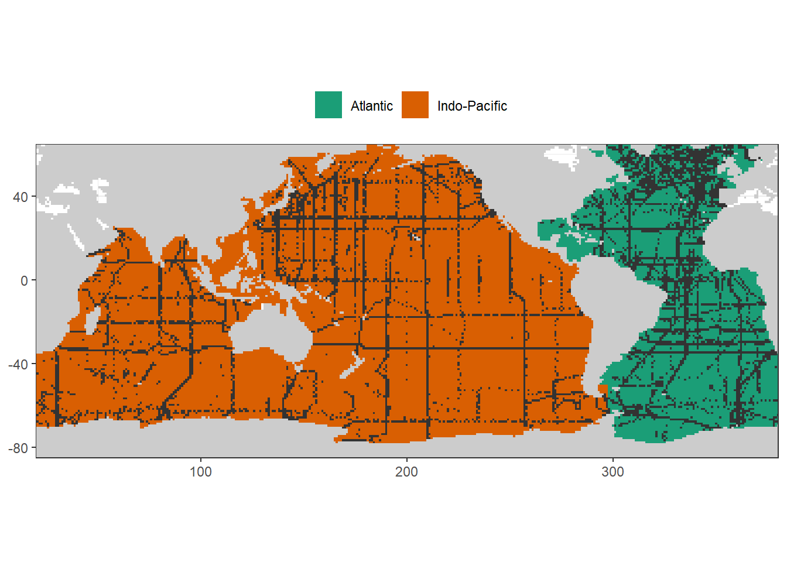
rm(GLODAP_obs)3.4.1.2 f flag
GLODAP_obs_grid_temp <- GLODAP %>%
count(lat, lon, era, tco2f)
map +
geom_raster(data = GLODAP_obs_grid_temp, aes(lon, lat, fill = n)) +
scale_fill_viridis_c(option = "magma",
direction = -1,
trans = "log10") +
facet_grid(era ~ tco2f) +
theme(legend.position = "top")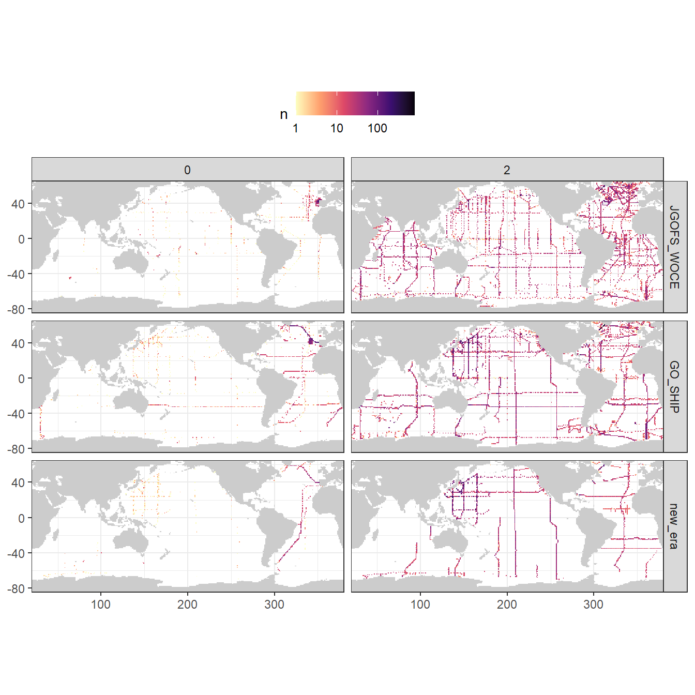
rm(GLODAP_obs_grid_temp)
GLODAP <- GLODAP %>%
filter(tco2f %in% parameters$flag_f)3.4.1.3 qc flag
GLODAP_obs_grid_temp <- GLODAP %>%
count(lat, lon, era, tco2qc)
map +
geom_raster(data = GLODAP_obs_grid_temp, aes(lon, lat, fill = n)) +
scale_fill_viridis_c(option = "magma",
direction = -1,
trans = "log10") +
facet_grid(era ~ tco2qc) +
theme(legend.position = "top")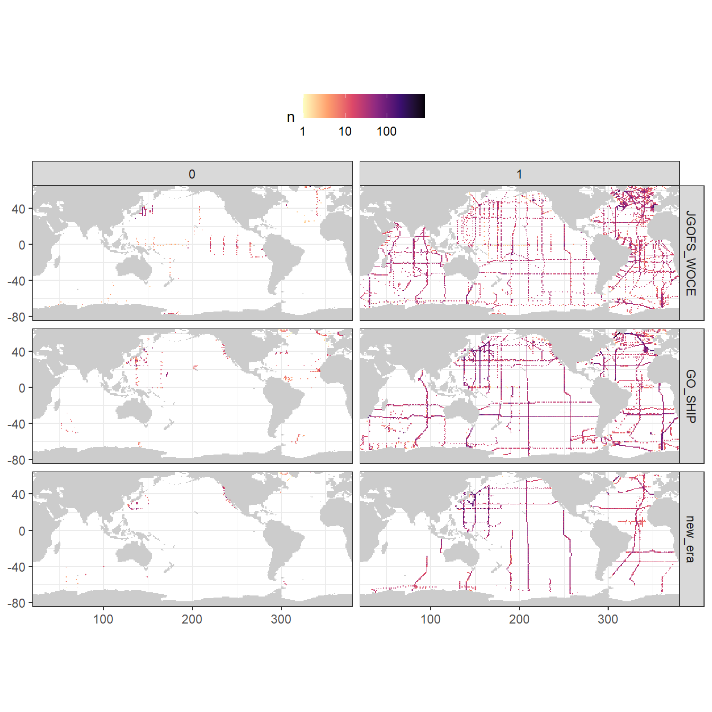
##
GLODAP <- GLODAP %>%
filter(tco2qc %in% parameters$flag_qc)
GLODAP_stats_temp <- GLODAP %>%
summarise(tco2_flag = n())
GLODAP_stats <- cbind(GLODAP_stats, GLODAP_stats_temp)
rm(GLODAP_stats_temp)
##
GLODAP_obs_grid_temp <- GLODAP %>%
count(lat, lon, era) %>%
mutate(cleaning_level = "tco2_flag")
GLODAP_obs_grid <-
bind_rows(GLODAP_obs_grid, GLODAP_obs_grid_temp)
rm(GLODAP_obs_grid_temp)3.4.2 talk
3.4.2.1 NA
Quite a few tco2 observations are discarded, due to missing talk data, in particular in the JGOFS/WOCE era. However, there seems to be a high number of observations remaining from the affected cruises, so that the coverage does not seem to be reduced drastically.
GLODAP <- GLODAP %>%
mutate(talkna = if_else(is.na(talk), "NA", "Value"))
GLODAP_obs_grid_temp <- GLODAP %>%
count(lat, lon, era, talkna)
map +
geom_raster(data = GLODAP_obs_grid_temp, aes(lon, lat, fill = n)) +
scale_fill_viridis_c(option = "magma",
direction = -1,
trans = "log10") +
facet_grid(era ~ talkna) +
theme(legend.position = "top")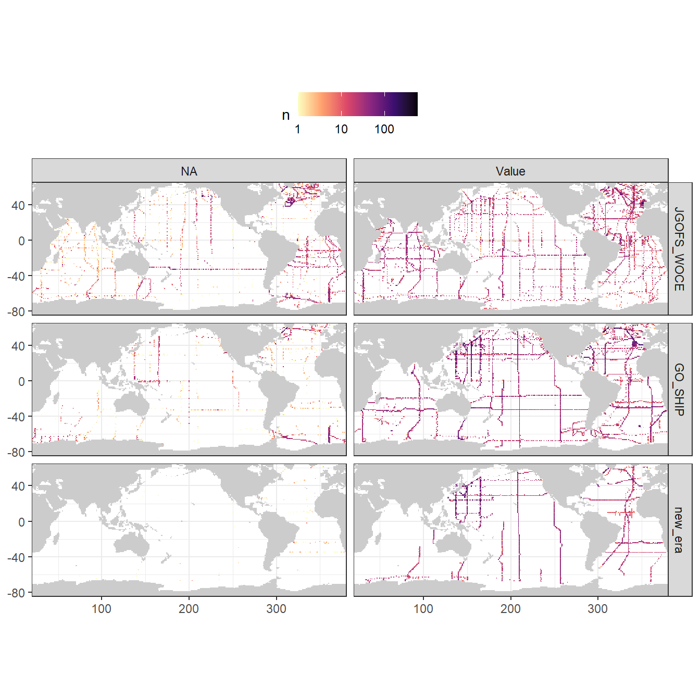
GLODAP <- GLODAP %>%
select(-talkna) %>%
filter(!is.na(talk))
##
GLODAP_stats_temp <- GLODAP %>%
summarise(talk_values = n())
GLODAP_stats <- cbind(GLODAP_stats, GLODAP_stats_temp)
rm(GLODAP_stats_temp)
##
GLODAP_obs_grid_temp <- GLODAP %>%
count(lat, lon, era) %>%
mutate(cleaning_level = "talk_values")
GLODAP_obs_grid <-
bind_rows(GLODAP_obs_grid, GLODAP_obs_grid_temp)
rm(GLODAP_obs_grid_temp)3.4.2.2 f flag
Restricting the f flag to 2 would results in data gaps in the south-east Pacific. Interpolated or calculated data (f flag 0) are therefore included.
GLODAP_obs_grid_temp <- GLODAP %>%
count(lat, lon, era, talkf)
map +
geom_raster(data = GLODAP_obs_grid_temp, aes(lon, lat, fill = n)) +
scale_fill_viridis_c(option = "magma",
direction = -1,
trans = "log10") +
facet_grid(era ~ talkf) +
theme(legend.position = "top",
legend.title = element_blank())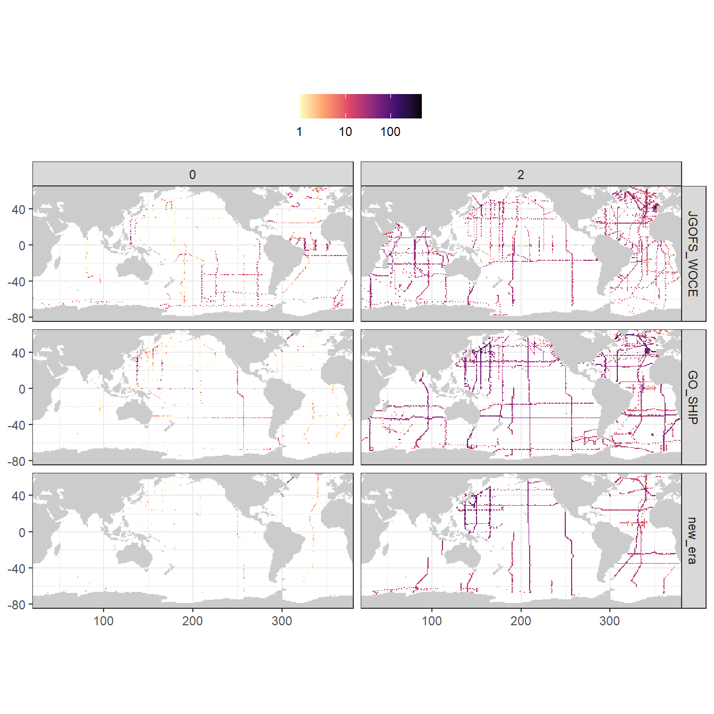
# ###
GLODAP <- GLODAP %>%
filter(talkf %in% parameters$flag_f)3.4.2.3 qc flag
GLODAP_obs_grid_temp <- GLODAP %>%
count(lat, lon, era, talkqc)
map +
geom_raster(data = GLODAP_obs_grid_temp, aes(lon, lat, fill = n)) +
scale_fill_viridis_c(option = "magma",
direction = -1,
trans = "log10") +
facet_grid(era ~ talkqc) +
theme(legend.position = "top",
legend.title = element_blank())
###
GLODAP <- GLODAP %>%
filter(talkqc %in% parameters$flag_qc)
##
GLODAP_stats_temp <- GLODAP %>%
summarise(talk_flag = n())
GLODAP_stats <- cbind(GLODAP_stats, GLODAP_stats_temp)
rm(GLODAP_stats_temp)
##
GLODAP_obs_grid_temp <- GLODAP %>%
count(lat, lon, era) %>%
mutate(cleaning_level = "talk_flag")
GLODAP_obs_grid <-
bind_rows(GLODAP_obs_grid, GLODAP_obs_grid_temp)
rm(GLODAP_obs_grid_temp)3.4.3 Phosphate
3.4.3.1 NA
Quite a few tco2/talk observations are discarded, due to missing phosphate data. However, there seems to be a high number of observations remaining from the affected cruises, so that the coverage does not seem to be reduced drastically.
GLODAP <- GLODAP %>%
mutate(phosphatena = if_else(is.na(phosphate), "NA", "Value"))
GLODAP_obs_grid_temp <- GLODAP %>%
count(lat, lon, era, phosphatena)
map +
geom_raster(data = GLODAP_obs_grid_temp, aes(lon, lat, fill = n)) +
scale_fill_viridis_c(option = "magma",
direction = -1,
trans = "log10") +
facet_grid(era ~ phosphatena) +
theme(legend.position = "top")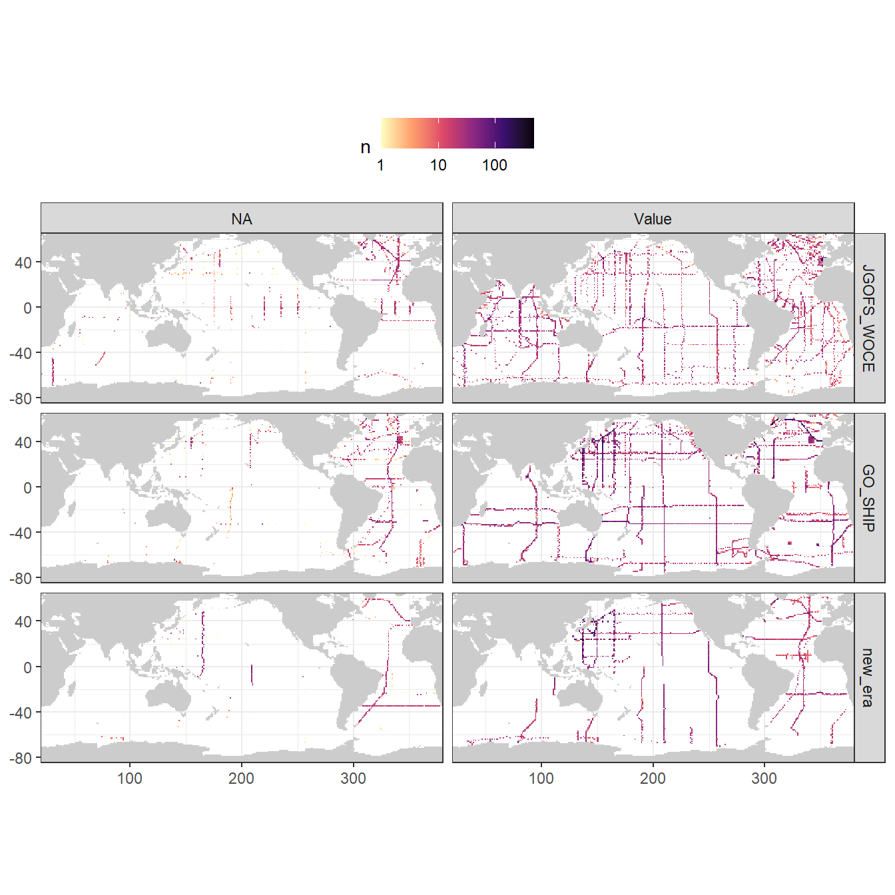
GLODAP <- GLODAP %>%
select(-phosphatena) %>%
filter(!is.na(phosphate))
##
GLODAP_stats_temp <- GLODAP %>%
summarise(phosphate_values = n())
GLODAP_stats <- cbind(GLODAP_stats, GLODAP_stats_temp)
rm(GLODAP_stats_temp)
##
GLODAP_obs_grid_temp <- GLODAP %>%
count(lat, lon, era) %>%
mutate(cleaning_level = "phosphate_values")
GLODAP_obs_grid <-
bind_rows(GLODAP_obs_grid, GLODAP_obs_grid_temp)
rm(GLODAP_obs_grid_temp)3.4.3.2 f flag
Restricting the f flag to 2 would not drastically reduce available data. Interpolated or calculated data (f flag 0) are therefore included.
GLODAP_obs_grid_temp <- GLODAP %>%
count(lat, lon, era, phosphatef)
map +
geom_raster(data = GLODAP_obs_grid_temp, aes(lon, lat, fill = n)) +
scale_fill_viridis_c(option = "magma",
direction = -1,
trans = "log10") +
facet_grid(era~phosphatef) +
theme(legend.position = "top",
legend.title = element_blank())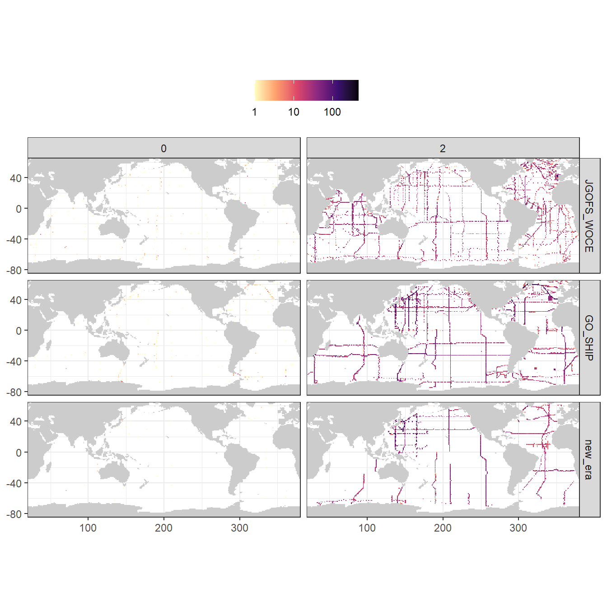
###
GLODAP <- GLODAP %>%
filter(phosphatef %in% parameters$flag_f)3.4.3.3 qc flag
Phosphate data for which secondary quality was not applied (qc flag 0) were removed.
GLODAP_obs_grid_temp <- GLODAP %>%
count(lat, lon, era, phosphateqc)
map +
geom_raster(data = GLODAP_obs_grid_temp, aes(lon, lat, fill = n)) +
scale_fill_viridis_c(option = "magma",
direction = -1,
trans = "log10") +
facet_grid(era~phosphateqc) +
theme(legend.position = "top",
legend.title = element_blank())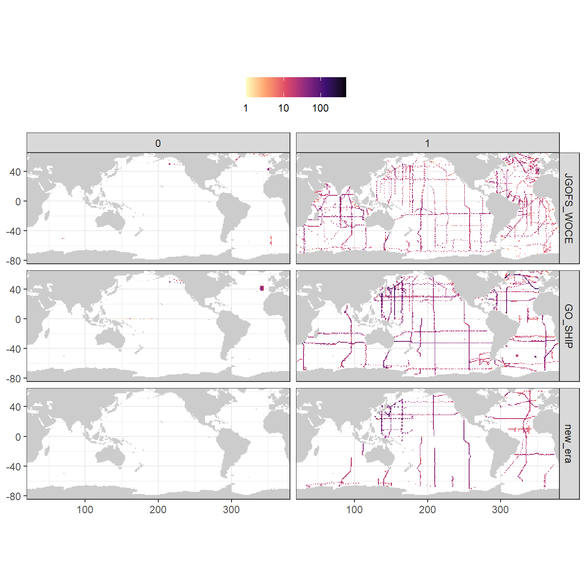
###
GLODAP <- GLODAP %>%
filter(phosphateqc %in% parameters$flag_qc)
##
GLODAP_stats_temp <- GLODAP %>%
summarise(phosphate_flag = n())
GLODAP_stats <- cbind(GLODAP_stats, GLODAP_stats_temp)
rm(GLODAP_stats_temp)
##
GLODAP_obs_grid_temp <- GLODAP %>%
count(lat, lon, era) %>%
mutate(cleaning_level = "phosphate_flag")
GLODAP_obs_grid <-
bind_rows(GLODAP_obs_grid, GLODAP_obs_grid_temp)
rm(GLODAP_obs_grid_temp)3.4.4 eMLR variables
Rows with missing eMLR variables were removed, only the qc flag was considered.
GLODAP <- GLODAP %>%
filter(!is.na(tem))
##
GLODAP <- GLODAP %>%
filter(!is.na(sal))
GLODAP <- GLODAP %>%
filter(salinityf %in% parameters$flag_f)
GLODAP <- GLODAP %>%
filter(salinityqc %in% parameters$flag_qc)
##
GLODAP <- GLODAP %>%
filter(!is.na(silicate))
GLODAP <- GLODAP %>%
filter(silicatef %in% parameters$flag_f)
GLODAP <- GLODAP %>%
filter(silicateqc %in% parameters$flag_qc)
##
GLODAP <- GLODAP %>%
filter(!is.na(oxygen))
GLODAP <- GLODAP %>%
filter(oxygenf %in% parameters$flag_f)
GLODAP <- GLODAP %>%
filter(oxygenqc %in% parameters$flag_qc)
##
GLODAP <- GLODAP %>%
filter(!is.na(aou))
GLODAP <- GLODAP %>%
filter(aouf %in% parameters$flag_f)
##
GLODAP <- GLODAP %>%
filter(!is.na(nitrate))
GLODAP <- GLODAP %>%
filter(nitratef %in% parameters$flag_f)
GLODAP <- GLODAP %>%
filter(nitrateqc %in% parameters$flag_qc)
##
GLODAP <- GLODAP %>%
filter(!is.na(depth))
GLODAP <- GLODAP %>%
filter(!is.na(gamma))
##
GLODAP_stats_temp <- GLODAP %>%
summarise(eMLR_variables = n())
GLODAP_stats <- cbind(GLODAP_stats, GLODAP_stats_temp)
rm(GLODAP_stats_temp)
##
GLODAP_obs_grid_temp <- GLODAP %>%
count(lat, lon, era) %>%
mutate(cleaning_level = "eMLR_variables")
GLODAP_obs_grid <-
bind_rows(GLODAP_obs_grid, GLODAP_obs_grid_temp)
rm(GLODAP_obs_grid_temp)GLODAP <- GLODAP %>%
select(-ends_with(c("f", "qc")))3.4.5 Manual adjustment A16 cruise
For harmonization with Gruber et al. (2019), cruises 1041 (A16N) and 1042 (A16S) were grouped into the GO_SHIP area despite taking place in 2013/14.
GLODAP_cruises <- GLODAP %>%
filter(basin == "Atlantic",
year %in% c(2013, 2014)) %>%
count(lat, lon, cruise)
map +
geom_raster(data = GLODAP_cruises, aes(lon, lat, fill = as.factor(cruise))) +
scale_fill_brewer(palette = "Dark2") +
theme(legend.position = "top",
legend.title = element_blank())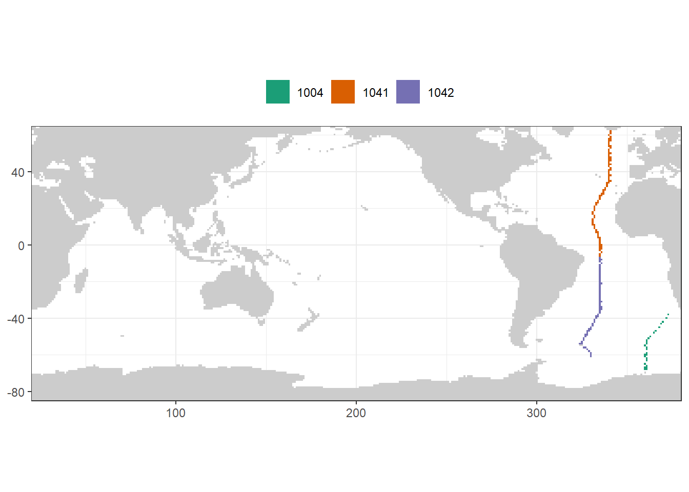
rm(GLODAP_cruises)GLODAP <- GLODAP %>%
mutate(era = as.character(era)) %>%
mutate(era = if_else(cruise %in% c(1041, 1042),
"GO_SHIP", era))
GLODAP <- GLODAP %>%
mutate(era = factor(era, c("JGOFS_WOCE", "GO_SHIP", "new_era")))3.5 Create clean observations grid
GLODAP_obs_grid_clean <- GLODAP %>%
count(lat, lon) %>%
select(-n)3.6 Write summary file
GLODAP_stats_long <- GLODAP_stats %>%
pivot_longer(1:length(GLODAP_stats),
names_to = "parameter",
values_to = "n")
GLODAP_stats_long %>% write_csv(
here::here(
"data/interim",
"GLODAPv2.2020_stats.csv"
)
)
##
GLODAP_obs_grid_clean %>%
write_csv(
here::here(
"data/interim",
"GLODAPv2.2020_clean_obs_grid.csv"
)
)
##
GLODAP <- GLODAP %>%
select(year, date, era, basin, lat, lon, cruise,
bottomdepth, depth, tem, sal, gamma,
tco2, talk, phosphate,
oxygen, aou, nitrate, silicate)
GLODAP %>% write_csv(
here::here(
"data/interim",
"GLODAPv2.2020_clean.csv"
)
)4 Overview plots
4.1 Cleaning stats
Number of observations at various steps of data cleaning.
GLODAP_stats_long <- GLODAP_stats_long %>%
mutate(parameter = fct_reorder(parameter, n))
GLODAP_stats_long %>%
ggplot(aes(parameter, n/1000)) +
geom_col() +
coord_flip() +
labs(y = "n (1000)") +
theme(axis.title.y = element_blank())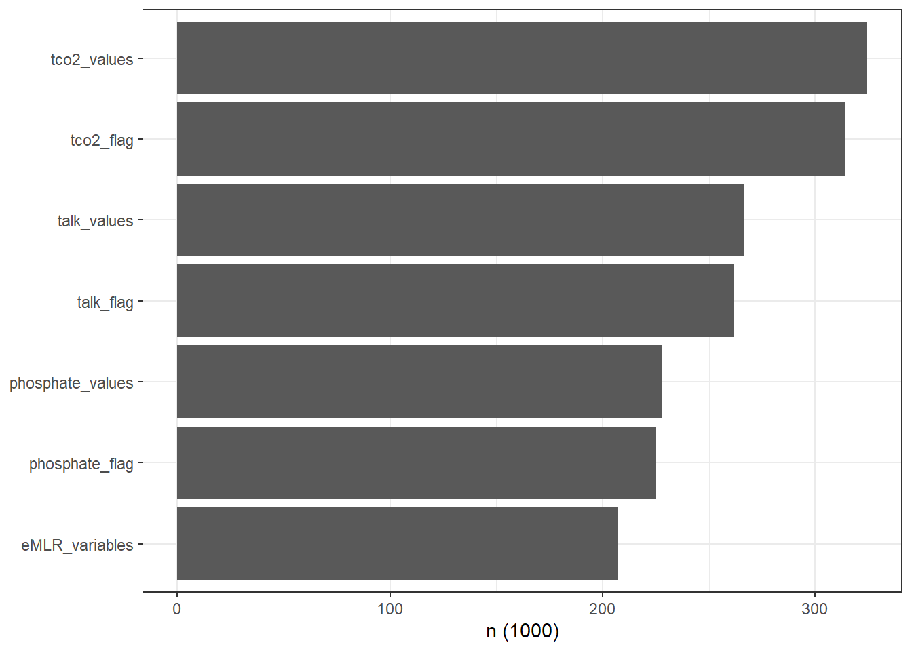
rm(GLODAP_stats_long)4.2 Assign coarse spatial grid
For the following plots, the cleaned data set was re-opened and observations were gridded spatially to intervals of:
- 5° x 5°
GLODAP <- m_grid_horizontal_coarse(GLODAP)4.3 Histogram Zonal coverage
GLODAP_histogram_lat <- GLODAP %>%
group_by(era, lat_grid, basin) %>%
tally() %>%
ungroup()
GLODAP_histogram_lat %>%
ggplot(aes(lat_grid, n, fill = era)) +
geom_col() +
scale_fill_brewer(palette = "Dark2") +
facet_wrap( ~ basin) +
coord_flip(expand = 0) +
theme(legend.position = "top",
legend.title = element_blank())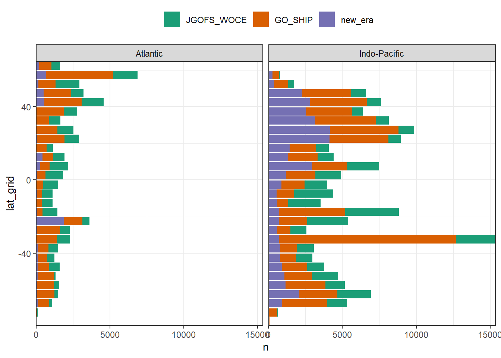
rm(GLODAP_histogram_lat)4.4 Histogram temporal coverage
GLODAP_histogram_year <- GLODAP %>%
group_by(year, basin) %>%
tally() %>%
ungroup()
era_median_year <- GLODAP %>%
group_by(era) %>%
summarise(t_ref = median(year)) %>%
ungroup()
era_median_year# A tibble: 3 x 2
era t_ref
<fct> <dbl>
1 JGOFS_WOCE 1994
2 GO_SHIP 2008
3 new_era 2016GLODAP_histogram_year %>%
ggplot() +
geom_vline(xintercept = c(
parameters$year_JGOFS_end + 0.5,
parameters$year_GOSHIP_end + 0.5
)) +
geom_col(aes(year, n, fill = basin)) +
geom_point(
data = era_median_year,
aes(t_ref, 0, shape = "Median year"),
size = 2,
fill = "white"
) +
scale_fill_brewer(palette = "Dark2") +
scale_shape_manual(values = 24, name = "") +
scale_y_continuous() +
coord_cartesian(expand = 0) +
theme(
legend.position = "top",
legend.direction = "vertical",
legend.title = element_blank(),
axis.title.x = element_blank()
)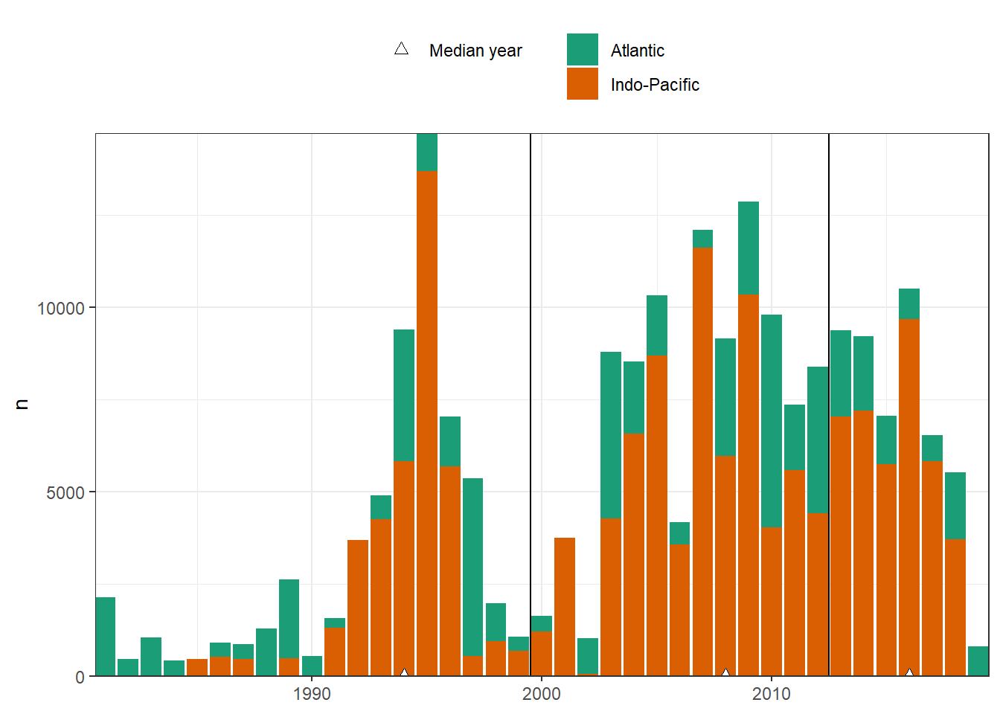
rm(GLODAP_histogram_year,
era_median_year)4.5 Zonal temporal coverage (Hovmoeller)
GLODAP_hovmoeller_year <- GLODAP %>%
group_by(year, lat_grid, basin) %>%
tally() %>%
ungroup()
GLODAP_hovmoeller_year %>%
ggplot(aes(year, lat_grid, fill = log10(n))) +
geom_tile() +
geom_vline(xintercept = c(1999.5, 2012.5)) +
scale_fill_viridis_c(option = "magma", direction = -1) +
facet_wrap( ~ basin, ncol = 1) +
theme(legend.position = "top",
axis.title.x = element_blank())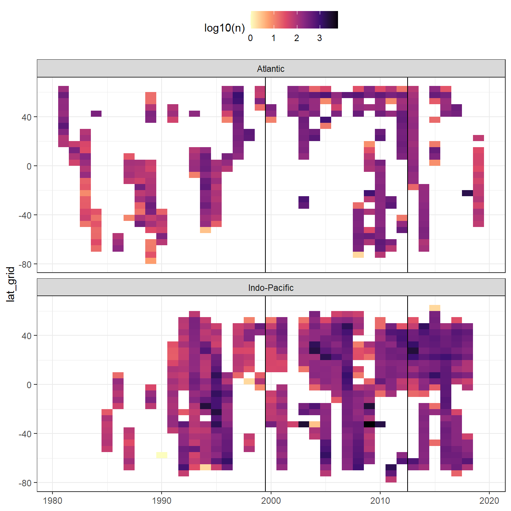
rm(GLODAP_hovmoeller_year)4.6 Coverage maps by era
4.6.1 Subsetting process
GLODAP_obs_grid <- GLODAP_obs_grid %>%
mutate(era = factor(era, c("JGOFS_WOCE", "GO_SHIP", "new_era")),
cleaning_level = factor(
cleaning_level,
unique(GLODAP_obs_grid$cleaning_level)
))
map +
geom_raster(data = GLODAP_obs_grid %>%
filter(cleaning_level == "tco2_values") %>%
select(-cleaning_level),
aes(lon, lat, fill = "tco2_values")) +
geom_raster(data = GLODAP_obs_grid %>%
filter(cleaning_level != "tco2_values"),
aes(lon, lat, fill = "subset")) +
scale_fill_manual(values = c("red", "grey"), name = "") +
theme(legend.position = "top",
axis.title = element_blank())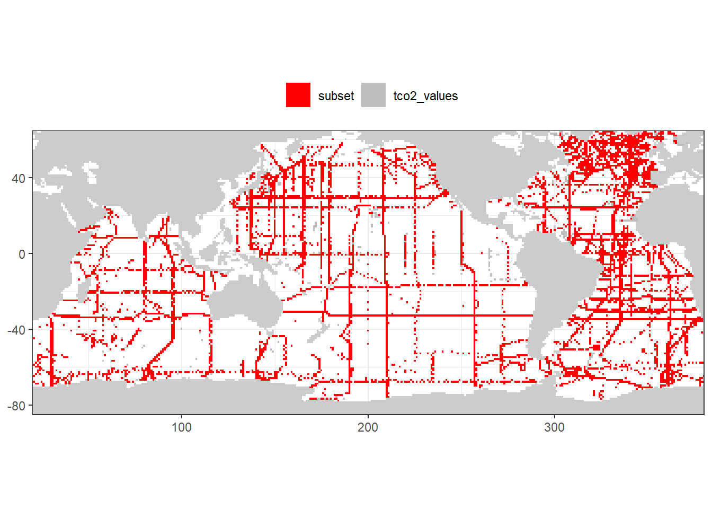
map +
geom_raster(data = GLODAP_obs_grid %>%
filter(cleaning_level == "tco2_values") %>%
select(-cleaning_level),
aes(lon, lat, fill = "tco2_values")) +
geom_raster(data = GLODAP_obs_grid %>%
filter(cleaning_level != "tco2_values"),
aes(lon, lat, fill = "subset")) +
scale_fill_manual(values = c("red", "grey"), name = "") +
facet_grid(cleaning_level ~ era) +
theme(legend.position = "top",
axis.title = element_blank())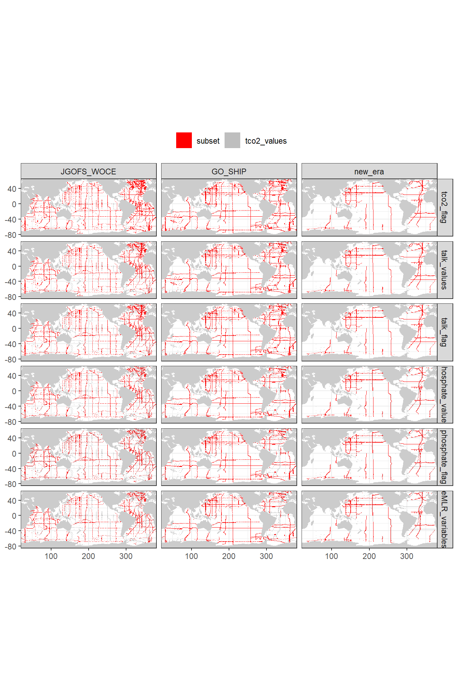
4.6.2 eMLR variables
Grey pixels refer to sampling locations filtered for availability of tco2 data only.
GLODAP <- GLODAP %>%
mutate(era = factor(era, c("JGOFS_WOCE", "GO_SHIP", "new_era")))
GLODAP_tco2_grid <- GLODAP %>%
count(lat, lon, era)
map +
geom_raster(data = GLODAP_tco2_grid, aes(lon, lat), fill = "grey80") +
geom_bin2d(data = GLODAP,
aes(lon, lat),
binwidth = c(1,1)) +
scale_fill_viridis_c(option = "magma", direction = -1, trans = "log10",
name = "log10(eMLR_variables)") +
facet_wrap(~era, ncol = 1) +
theme(legend.position = "top",
axis.title = element_blank())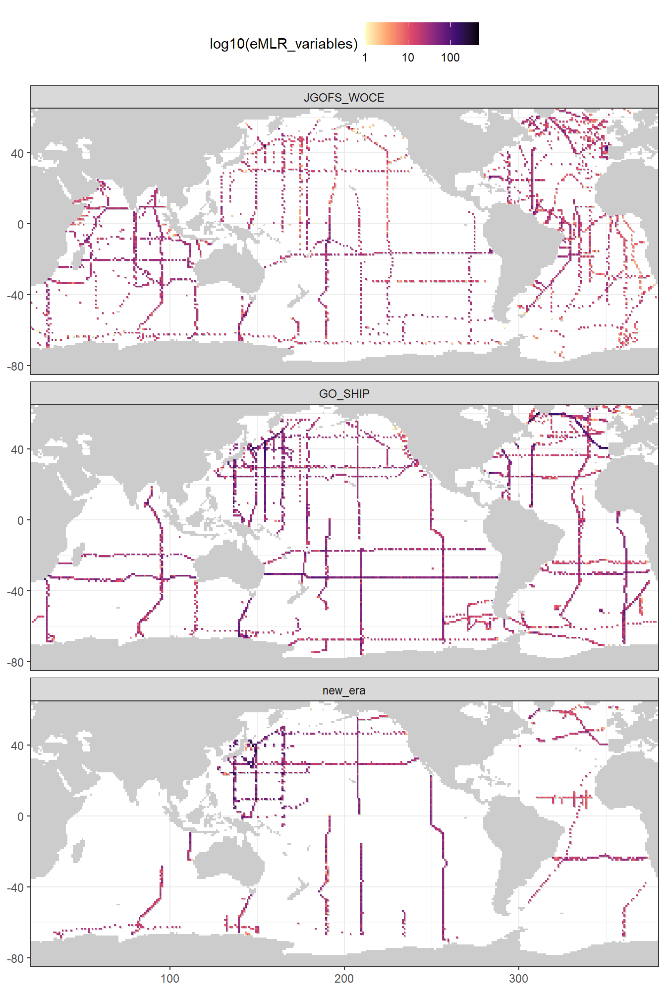
5 Exploratory data analysis
source("code/eda.R")
eda(GLODAP, "GLODAPv2_2020_clean")
rm(eda)The output of an automated Exploratory Data Analysis (EDA) performed with the package DataExplorer can be accessed here:
Link to EDA report of GLODAPv2_2020 raw data
sessionInfo()R version 4.0.2 (2020-06-22)
Platform: x86_64-w64-mingw32/x64 (64-bit)
Running under: Windows 10 x64 (build 18363)
Matrix products: default
locale:
[1] LC_COLLATE=English_Germany.1252 LC_CTYPE=English_Germany.1252
[3] LC_MONETARY=English_Germany.1252 LC_NUMERIC=C
[5] LC_TIME=English_Germany.1252
attached base packages:
[1] stats graphics grDevices utils datasets methods base
other attached packages:
[1] lubridate_1.7.9 metR_0.7.0 scico_1.2.0 patchwork_1.0.1
[5] collapse_1.3.2 forcats_0.5.0 stringr_1.4.0 dplyr_1.0.0
[9] purrr_0.3.4 readr_1.3.1 tidyr_1.1.0 tibble_3.0.3
[13] ggplot2_3.3.2 tidyverse_1.3.0 workflowr_1.6.2
loaded via a namespace (and not attached):
[1] httr_1.4.2 viridisLite_0.3.0 jsonlite_1.7.0 here_0.1
[5] modelr_0.1.8 Formula_1.2-3 assertthat_0.2.1 blob_1.2.1
[9] cellranger_1.1.0 yaml_2.2.1 pillar_1.4.6 backports_1.1.8
[13] lattice_0.20-41 glue_1.4.1 digest_0.6.25 RColorBrewer_1.1-2
[17] promises_1.1.1 checkmate_2.0.0 rvest_0.3.6 colorspace_1.4-1
[21] sandwich_2.5-1 htmltools_0.5.0 httpuv_1.5.4 Matrix_1.2-18
[25] pkgconfig_2.0.3 broom_0.7.0 haven_2.3.1 xtable_1.8-4
[29] scales_1.1.1 whisker_0.4 later_1.1.0.1 git2r_0.27.1
[33] farver_2.0.3 generics_0.0.2 ellipsis_0.3.1 withr_2.2.0
[37] cli_2.0.2 magrittr_1.5 crayon_1.3.4 readxl_1.3.1
[41] evaluate_0.14 fs_1.4.2 fansi_0.4.1 xml2_1.3.2
[45] tools_4.0.2 data.table_1.13.0 hms_0.5.3 lifecycle_0.2.0
[49] munsell_0.5.0 reprex_0.3.0 compiler_4.0.2 lfe_2.8-5.1
[53] rlang_0.4.7 grid_4.0.2 rstudioapi_0.11 labeling_0.3
[57] rmarkdown_2.3 gtable_0.3.0 DBI_1.1.0 R6_2.4.1
[61] zoo_1.8-8 knitr_1.30 utf8_1.1.4 rprojroot_1.3-2
[65] stringi_1.4.6 parallel_4.0.2 Rcpp_1.0.5 vctrs_0.3.2
[69] dbplyr_1.4.4 tidyselect_1.1.0 xfun_0.16